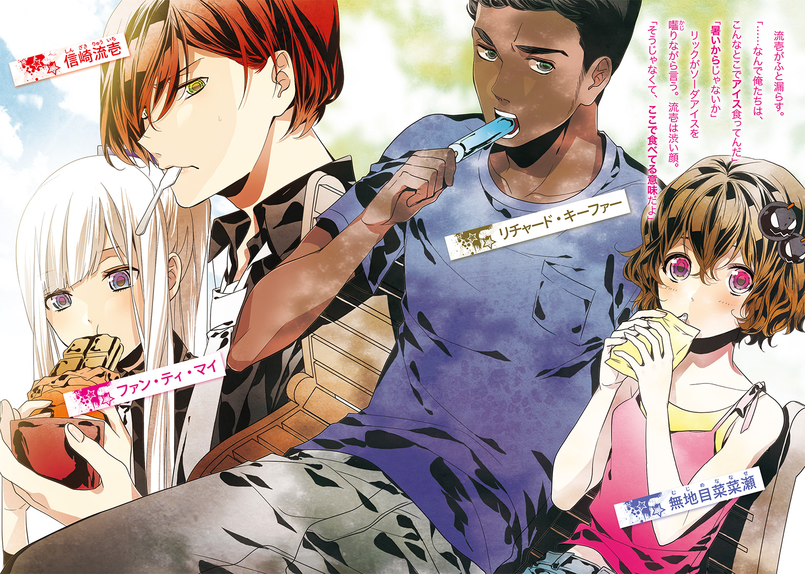

| ブラッディ・ウェポンズ 2 | |
| 築地俊彦 | |
この本は縦書きでレイアウトされています。
また、ご覧になる機種により、表示の差が認められることがあります。

 ダッシュエックス文庫DIGITAL
ダッシュエックス文庫DIGITAL
ブラッディ・ウェポンズ２
築地俊彦
第一章
「俺は家が好きだ」
信崎流壱は言った。
「嫌いになる理由がない」
背はそこそこ高く、どこか皮肉っぽい顔つきをしている。瘦せているが、しっかりした体格だ。まだ高校生。そのわりには年齢以上の経験を積んでいるようにも見受けられた。
それも当然。彼はその世界では知らぬもののない武器商人なのだ。
高校生で武器取り引きをしていること自体が異例だが、彼の目的は売りさばくことではない。買うことなのだ。死んだ父親が世界中に売った武器を買い戻していた。
流壱は眼前の人物に話し続けていた。
「あちこち飛び回っているが、できれば家の中にいたい。なにもしないで漫画とネットだけで暮らすのが理想的だ」
「でも、そうはいかないでしょう」
「ごろごろしてりゃ解決するシステムを開発すればいい。そのためならいくらでも金を突っ込む用意がある」
「できたら教えてー。真っ先に使わせてもらうわ」
流壱の相手、美原冬香はつまらなさそうにタバコに火を付けた。
ここは私立荷堂学院高等学校の敷地にある、三角屋根が目立つ教会風の建物内だ。内部には祭壇に長椅子、十字架まであるが教会としては機能していない。もっぱら養護教諭である冬香の仕事場となっていた。
流壱は長椅子に座ったまま肩をすくめた。
「できる気配がない」
「じゃあ家から出なきゃ」
「気が進まない。あんたの依頼ならなおさらだ」
「あん。先生悲しい。こんなに学校のために尽くしてるのに」
冬香はわざとらしく身体をくねらせた。
彼女は胸元を強調し、肩が剝き出しになる服を着ていた。高校生相手にも性的アピールに余念がない。以前苦情が寄せられてからは白衣を羽織っているが、ボタンを留めていないので役に立っているとは言いがたかった。
このような恰好にも拘わらずクビになっていないのは、彼女が役に立つ人材だと目されているからだ。そしてそのように判断しているのは流壱である。流壱は荷堂学院の所有者でもあるのだ。
そして冬香は流壱に様々な情報を提供する情報屋でもある。流壱が滅多に知り得ない情報を、どこからか調達する。そして情報ソースも入手手段もほとんど明かすことはない。なにより自分から提供することは皆無で、聞かれなければ答えないことを徹底しているのだ。これは冬香の主義で「口の軽い情報屋は長生きできないの」との理由による。
その彼女が、珍しいことに自分から流壱を呼び出していた。そしてやって欲しいことがあると頼みごとをしてきたのだ。流壱が警戒するのも無理のないことであった。
流壱は言った。
「引きこもりの俺にできることは少ない」
「毎日のように飛び回っているのは引きこもりって言わないと思うわよー？」
「心はいつだって家の中にある」
冬香は長椅子の上に置きっ放しになっていた紙製のファイルケースを手に取った。
「じゃあ外に出たくなるお守り」
流壱はちらっと目を通す。
「お守りじゃなくて、積荷目録に見えるんだが」
「正解よー。これは半年前に神戸港から出港したコンテナ船の中身」
「ここの自動車用エンジンってのが気にかかる」
流壱は指でとんとんと叩いた。
「こういうのは大抵別なもののカムフラージュだ」
「それも正解ねー。本当の中身は80式対戦車地雷なのよー。個数は不明だけど、両手両足じゃとても足りないくらいね」
「俺の記憶じゃそれは自衛隊が装備していた地雷だ」
「そうよー」
「しかもオタワ条約で破棄されたはずの代物だぞ。二〇〇三年だったか、訓練用を除いて全部爆破したはずだ。なんで半年前に存在してんだ？」
「どこかの人間が悪知恵を働かせて、書類をちょっと細工して係官にちょっとお金を渡して確保したのね。それを長い間保管しておいて、このたび売り飛ばしたってわけなの」
「地雷の皆さんは、今どちらにいらっしゃるんだ」
「インドネシアに到着して、チリ行きの船に乗せ替えられたところまでは分かってるの。あとは色々」
「で、こいつをどうしろって？」
「取り返してきて欲しいのー」
くわえタバコのまま、冬香は身体をくねらせた。
「こういうのって信崎君が得意でしょ。だから頼めないかなって」
胸を強調させる動きに、流壱は憮然とした。紙のファイルをひらひらさせる。
「これは先生の個人的な頼みか？」
「知り合いからの頼みかなって」
「その知り合いさんはどこの官庁にお勤めなんだ？」
とっくに破棄したはずの日本製地雷が出てきて、しかも外国に売られたとなれば大問題だ。霞ヶ関からの依頼だろうと当たりをつけた。
冬香は答えずに、煙を天井に吐いた。
「受けた方がいいわよー。信崎君のためになるから」
「そうか？」
「手に入れたのはあなたのお父さんで、半年前に運び出したのは司麻なの。ね、ためになるでしょう」
その言葉に、流壱は表情を硬くした。
司麻は彼の弟だ。父親の売った武器を回収している流壱とは違い、より多く売ることを目的としている。そして流壱の父親と母親を爆殺した当人でもあった。
目的の異なる二人は、世界中のあちこちで衝突していた。肉親であるが故に、相容れることは全くないといっていい。ここ荷堂学院内ですらやり合うことになったのだ。
あの戦いで司麻の行方は一時不明となった。だが流壱は弟が死んだと思っていなかったし、事実こうやって生きている。
「......司麻だから、俺がこの依頼を受けるっていうのか」
「そうよ。やめる？」
「受ける」
流壱は言った。
「もう俺はこのネタを知っちまった。いまさらやめられるか」
冬香は大きな胸を揺らしながら「そうだと思ったわー」と言っていた。
流壱は長椅子から立ち上がった。
「追跡調査を頼む。地雷が今どこにあるか知りたい」
「実はねー。もう調べてあるの」
彼女は別の紙製ファイルを取り出した。
「コンテナはチリからアルゼンチンを経由してイタリアに行き、そこからキプロス」
「手間かかってんな」
「荷受人と荷物の名称も四回変わってるわ」
「キプロスから先は？」
「ちょっと分からないわねえ」
キプロスはいわゆるキプロス紛争で二つに分裂して以来、様々な意味で複雑な国となっている。最近は再統合の機運が高まっているとはいえ、実務レベルでの混乱はあった。
「キプロスと北キプロスの間で書類をちょいちょい行き来されたら、すぐに分かんなくなるよなあ」
「追跡調査をしてもいいわよー」
「頼む」
「情報料ってことで払ってくれる？」
「サービスしてくれ。あんたが持ち込んだ話なんだから」
流壱は建物から外に出た。大きく伸びをする。
日曜の天気は快晴だ。ただでさえ広い荷堂学院が、余計広く感じられた。
外では少女が一人待っていた。
長い髪を束ねており、顔立ちはクール。肩にはギターケースをかけていた。流壱は声をかける。
「待たせた」
「待ってない」
少女は返事をした。
「もっと待ってもよかった」
「日射病になるぞ」
「ならないと決めた。だからならない」
少女、ファン・ティ・マイはそう言った。
彼女は流壱の仲間で狙撃手である。ベトナム生まれ。荷堂学院では流壱の護衛役も務めている。建物のすぐ外に立っていたのも、いざというときすぐに飛び込むためだ。日射病のことも、流壱の護衛なのだから倒れないとの決意である。
頼もしいが、時々気が利かないと思うこともあった。
「マイも座ってりゃよかったんだ」
「のんびり座る護衛なんて聞いたことがない」
「あいつらは座ってるじゃねえか」
流壱が指し示した先を見て、マイは眉を顰めた。
「緊張感が足りない」
「あいつらも多分承知してるだろうな」
二人の先には木立があり、ベンチが据えられている。そこに男女が腰かけていて、さもだるそうにしていた。
男女のうち、女性が流壱たちに気づいて手を振った。ただしこっちに来る気配はない。
しょうがないので二人からベンチに寄った。
ベンチの二人は浅く腰かけ、背もたれに寄りかかっていた。どちらもラフな恰好で、男性はＴシャツ一枚だ。
「遅かったね」
女性が言った。彼女は流壱やマイと同じく荷堂学院の生徒で、無地目菜菜瀬という。爆弾の専門家で流壱を吹き飛ばそうとしていたが、諸事情により仲間となる。
「この暑いのに、信崎君だけクーラーの効いたとこでお話しなんてずるくない？」
「クーラー入ってなかったぞ。あの先生、汗に濡れた肌を男子生徒に見せるのが趣味だからな」
「うわキモい。冷房なきゃパソコンに悪いんじゃない」
「そっちは別にあるんだろ」
彼はベンチの空いているところに腰かけた。マイは立ったまま。
「リック」
流壱は菜菜瀬の隣の男性に声をかける。
男性は返事をしない。スマートフォンの画面を熱心に覗き込んでいた。
流壱はうんざりする。
「リック。いい加減、アイドル動画を見るのはやめろ」
「話しかけるな。今いいところだ。センターの娘がジャンプしてから一瞬間があり、メンバー全員が跳ぶ。感動的だぞ」
「それ。もう十回は見ただろう」
「おい、俺をなんだと思っている。五十回だ」
リックはそう言いながらも、画面から視線を外さなかった。
彼はリチャード・キーファー。通称リック。アフリカ系アメリカ人で日本のアイドルマニア。
流壱はいつも「海兵隊員みたいなガタイでタトゥーまで入れてるアイドルオタクなんているのか」と嘆いている。
流壱はさらに言った。
「それ、どこかのサーバから引っこ抜いて来たんだろ」
「これは合法だ。お前はハッカーが全員犯罪行為に手を染めると誤解してるぞ。偏見だ」
「お前を見てりゃそうも言いたくなる」
リックは腕のいいハッカーである。元々アメリカ中央軍の電子戦担当官だった。流壱は彼に助けられたことが幾度となくある。
「日本のアイドルは貴重な存在だ。金を払わずに見るなんてとんでもない」
「やったことがないとは言わせないぞ」
「たまたま動画サイトに動画がアップされていただけだ。それを見て買った。これからは世界各地にある銀行のサーバにこれをアップする作業が待っている。銀行員がアクセスするたびに動画が再生されるぞ」
「ただの愉快犯じゃねえか」
流壱は説得を諦め、服の胸元をぱたぱたさせた。
「やっぱ暑いな」
「アイスあるよ」
菜菜瀬が足下から袋を持ち上げた。
「まだ溶けてないから」
流壱は適当に受け取った。バニラ味のカップ。
リックはソーダ味のアイスキャンディー。菜菜瀬はレモン味のチューブ型。マイはアイスモナカを取っていた。
少しの間、皆は無言で味わっていた。
流壱がふと漏らす。
「......なんで俺たちは、こんなとこでアイス食ってんだ」
「暑いからじゃないか」
リックがソーダアイスを囓りながら言う。流壱は渋い顔。
「そうじゃなくて、ここで食べてる意味だよ」
「俺としては、無地目がアイスを買ってきた機転を賞賛したい」
菜菜瀬はにこりとする。
「ありがとリック。信崎君と違って優しいよね」
流壱は思わず口を出した。
「雇い主の悪口を言う従業員がいるか。敬意ってもんがない」
「安心して。アイスの代金は雇い主に回すから」
「くそ」
流壱はアイスのついた匙を舐めた。
「俺の仲間はろくなのがいない」
「仲間としては、信崎君がなにをしてきたのか知りたいんだけど」
「先生が俺に依頼だとさ」
彼はざっと説明した。皆、アイスを食べながら聞いている。
「......つまり政府の尻ぬぐいをお願いされたってわけだ」
「信崎君のお父さんの尻ぬぐいでしょ」
「結果的にはな。親父もよくこんなもんに手を出そうとしたもんだ」
流壱の父親は、先進国の企業と関わることがあっても、政府とかかわることは少ない。およそ兵器が絡むと神経質になるからだ。特に移転の話になると根掘り葉掘り調べられる。金の力で黙らせていたようだが、一歩間違うと逮捕から起訴まであっただろう。
「今は司麻がやってるけどな」
「肝心の地雷はどこに行ったの」
「美原先生からの情報待ち」
「依頼人に情報提供までお願いするなんて平気？」
「別の方面からも探るさ。リック！」
流壱はリックに言った。
「荷物の最終地を調べてくれ。司麻が誰に売ったのかも」
「アイスを食べ終わったら、動画をもう一度見直そうと思っていた」
「何度見たって出演者もＣＤの売り上げも変わらない。ついでにその左から二番目の娘はグループを辞めて週刊誌に内部事情を暴露した」
「止めろ。俺があれにどれだけ傷ついたと思ってんだ」
「推しメンが三秒で変わる人間の台詞に説得力はねえよ。やってくれ」
リックは肩をすくめると、アイスの残りを食べてから足下からノートパソコンを取り出した。
パスワードを打ち込むとＯＳが立ち上がる。ほぼ同時に、多数のウィンドウが画面を埋め尽くした。リックはそれら一つ一つを確認してはコマンドを打ち込んでいた。
菜菜瀬が後ろから覗き込んだ。
「すごーい。あたしさっぱり分かんない」
「こいつはただの端末で、面倒なことは電算室のサーバにやらせる。アクセスしてるだけだ」
「聞いても分かんない」
リックは大きな肩をすくめると、リターンキーを数度押した。書類らしき画面に切り替わる。
「ｐｄｆで保存してくれてるとは、手間のかからない税関だ」
リックはじっくりと目を通した。
「ギリシア語ってのは面倒でいかんな」
「リックは読めるの」
「これくらいならな......。流壱、地雷は航空機用エンジン部品ってことになって、キプロスに到着してる」
「そこから先は？」
「ちょいと手間がかかりそうだ。電算室に籠もりたい」
「分かった。頼む」
リックはノートパソコンを閉じると、そのまま学校の電算室へと向かって行った。電算室はいわば彼のオフィスで、集中が必要な作業になると籠もることが多い。
流壱は大きな背中を見送りつつ言う。
「キプロスってことは、美原先生の情報は本当だったんだな」
「そりゃ情報屋だもん。噓ついたら商売に差し障るでしょ」
菜菜瀬の言葉は流壱の考えと同じであった。だがそこに、別の声が飛ぶ。
「そうとも限らない」
声の主は、今まで無言だったマイだった。
彼女はアイスモナカを名残惜しそうに少しずつ食べていた。
「あの人は隠しごとが多い」
「そりゃ人に言わないこともあるでしょ」
菜菜瀬の返事に、マイはさらに言う
「プライベートなら別になにを隠そうが構わない。だけど情報にマスクをかけられると困る」
「情報元を知られたくないんじゃない？」
「肝心なことを言っていない気がする」
「根拠はどこよ」
マイは少し間を置いて答えた。
「勘だ」
菜菜瀬は笑い飛ばさなかった。マイは狙撃手のためか、人よりも勘が働く。標的の何気ない仕草や、ほんのわずかな空気の動きを察知し、「勘」とするのだ。
なのでマイが不自然さを感じ取ったらそれなりの根拠があることになる。
菜菜瀬が訊いた。
「勘はなんだって言ってるの」
「ただ納得がいかないだけだ」
「あの先生が？ あたしも巨乳が不自然すぎるから、手術したんじゃないかって思ってるけど」
「もしかしたら美原が知らない間に、情報そのものに手が加えられたのかもしれない。あとあの胸は本物だ」
「なんで知ってんの？」
菜菜瀬の疑問を無視して、マイは流壱に視線を向ける。
流壱はしばらく視線を海に向け、考えごとをしていた。カップのアイスはとっくに空になっている。
「......もし情報が加工されていたら、誰の仕業だと思う」
「司麻だろう」
マイは即答した。
「流壱が常に司麻を意識するように、司麻も常に流壱を意識している。あの男なら取り引きを流壱に分からないように加工して隠蔽することも可能だ」
「隠れてはいないんだよな」
「隠していないとも考えられる」
マイの説明に、流壱は押し黙った。
司麻が自らの取り引き関係の情報を流すのであれば、九分九厘別の目的がある。恐らく、あえて流壱の目に触れるようにしているのだ。
「俺を引っ張り出そうとしてるのか」
「多分、だけど」
荷堂学院でやり合ったときは、流壱の勝利に終わっていた。しかしあれくらいで司麻が意気消沈することなどあり得ない。また流壱自身を目標としてなんらかの攻撃を計画しているのだろう。
やりとりを聞いていた菜菜瀬が、軽く手を叩いた。
「おー、ワンちゃん凄い。よく頭回るねえ」
ワンちゃんとは、マイが犬のように付き従っているところから菜菜瀬が付けたあだ名だ。
マイがじろりと睨む。
「その言い方は止めろ」
「いいじゃん。わりと気に入ってるんだけど」
「私は気に入っていない」
「ぴったりだと思うけどなあ」
「どうしても言い続けるのなら、私はお前のことをソシオパスの爆弾テロ女と呼ぶ」
「あー、そういうことを言うと、まだ余ってるアイスあげないよ」
「アイスで私がつられると思ってるのか」
「モナカなんだけどなあ」
マイは無言でアイスモナカに手を伸ばした。
そこにリックが戻ってくる。
「お帰り、早かったな」
流壱が言う。リックは渋い顔をしていた。
「無理だとすぐに分かったから、帰ってきた」
「お前の腕でも追跡できないのか」
「キプロスの港に入ったのは確実だ。そこから先は紙の書類で処理している。日本からじゃ分からん」
「向こうの役人に金を摑ませるか」
「かなり時間がかかるぞ」
「それ専門の調査会社にでも頼んだ方が早そうだな」
「金がかかる上に情報が漏洩する。それよりいい方法があるぞ」
リックの言葉に、流壱は視線を向けた。
「なにを言いたいのか、想像がつく」
「だったらパスポートの用意だ。実際に行った方が早い」
とリック。菜菜瀬が軽く手を叩いた。
「やった。キプロス出張？ 今の地中海ってリゾートシーズンじゃなかった？」
「観光客に紛れることも可能だな」
「行こう」
菜菜瀬は嬉しそうにしていた。
流壱としても異存はなかった。このような場合、往々にして直接出向けば解決することが多い。まして司麻が関係しているとなると、他人に任せることができなかった。
それでも彼は、空を仰いだ。
「もうちょいで夏休みなんだよなあ。ここんとこ授業出ていたのに、またサボっちまう」
「経営者がなに言ってんの」
「自分で自分を退学処分にしちまいそうだ」
流壱はベンチから立ち上がった。
「出発は明日だ。これからパスポートの写真撮るぞ」
「明日発つのに今から写真撮って受け取れんの？」
菜菜瀬の疑問に彼は答える。
「偽造だよ。三種類作るからな。せいぜい怪しまれないような表情をしてくれ」
菜菜瀬は呆れたように首を振る。会話中、マイは無言でアイスモナカを食べていた。
○
日本から遠く離れた地中海。キプロス共和国。海岸沿いにある都市、リマソール。時刻は午前十一時。
西側から乾燥した風がゆっくりと吹いている。強い日差しに火照った肌を静めるのにちょうど良く、ベンチで寝転がったり散歩するのにぴったりだ。いわゆる地中海性気候というやつで、作物を育てるのにはそれほど適さないものの、リゾート客を世界中から呼び寄せていた。
「よっ......と」
イギリス資本のホテルの八階。菜菜瀬はバルコニーに通じる窓を開けた。空気が緩やかに室内に舞い込み、彼女はしばらく目を細めた。
下では数組の観光客が思い思いに歩いている。仕事を引退したような老夫婦もいた。キプロス経済は、ギリシアの金融危機に引っ張られる形で悪化しているというが、リゾート地としてまだまだ健在であった。
菜菜瀬は窓から離れると、デニムのパンツにＴシャツというラフな恰好で、しばらく室内をくるくる回った。そしてベッドに倒れ込む。
「んー、いい気持ち」
シーリー社製のベッドは彼女の体型にあわせて柔らかくへこんだ。枕に顔を埋め、しばらく寝心地を堪能する。
「あーもう、最高。リゾートって言ったらやっぱ地中海よねえ。このまま時間が止まって、のんびり過ごさせてくれないかなあ」
「問題が二つある」
隣のベッドから冷たい声が飛んだ。
「一つは我々が仕事でここまで来たということ。もう一つは、リゾートだろうと隣には私がいるということだ」
マイは自分の荷物が詰まったバッグをベッド脇に下ろしながらそう言った。
彼女の言葉通り、地中海の島国にやってきたのはリゾートではなく仕事のためだ。流壱が冬香に頼まれた件を解決するため、四人でやってきたのである。
ＡＮＡの定期便でロンドンに飛び、ブリティッシュ・エアウェイズのエアバスに乗り換えてキプロスのラルナカ国際空港に到着。そこから車を調達してリマソール。あまり程度のいい目的ではないので、多少の非合法手段を使いつつホテルにチェックインをした。アジア系とアフリカ系の組み合わせが珍しいのか、ホテルのフロントでは興味深げに見られたが、偽造パスポートに漏れはない。弾んだチップにギリシア語で礼を言われながら、ついさきほど部屋に入ったところだった。
菜菜瀬はベッドの上で転がった。
「あー、仕事じゃなくて休暇で来たかった。一人で」
それから身体を起こす。
「ワンちゃんのこと嫌いって意味じゃないから」
「気にしていない。私はお前のことが嫌いだ」
マイはギターケースをベッドの上に置くと、入れ放しにしてあるギブソン・レスポールのコピー品を取り出した。本来は軍用ライフルを運ぶのに使っているが、飛行機には持ち込めなかったのでケースとギターだけを肩にかけてきた。おかげでロンドンのヒースロー空港ではミュージシャンと勘違いもされた。
彼女はギターの弦を確認し、埃を払った。
「それ、本当の中身どうすんの」
菜菜瀬の質問にマイは顔を向けずに答える。
「あとで調達する。流壱の知り合いがその手の商売をしている」
「そっか、考えてみたら信崎君は専門だもんねえ」
菜菜瀬は窓に目を向ける。ホテルの真下は観光客が多いが、正面は見渡す限り海だ。地中海のブルーは目に眩しく、ベッドからでもよく見えた。
大型の客船が、水平線からゆっくり姿を現した。かなり大きいが、個人所有の可能性がある。地中海のリゾート地にはその手の金持ちがごろごろしていた。
「本当の富豪はドバイに行くって言うけどねえ」
もうマイが返事をしないので、菜菜瀬の言葉は独り言になった。
「それにしても大きい船。どこの会社か金持ちか......」
「今は船じゃなくて地雷の話をしよう」
いきなり聞こえてきた流壱の声に、菜菜瀬は飛び上がりそうになった。
「ちょっと、ノックしてよ！」
「開いていたからな」
壁際の扉から、流壱とリックが入ってくる。二人ともリゾート地に会わせたラフな恰好だった。
二人は備えつけの椅子を引っ張ってきて座る。
「港町で地雷の話ってのもおつなもんだろ」
「あたし観光がいいなあ。世界遺産とか」
「キプロスの世界遺産はここにはない。残念だったな」
「雇用主なんだから従業員の福利厚生に気を遣って」
「名目上は個人事業主同士の随意契約ってことになってるんだ」
と流壱は言った。
隣のリックはノートパソコンを持っていた。広げると、何度かタッチパッドをなぞってクリックした。Ｇｏｏｇｌｅのマップが開く。
「さて諸君、ここが俺たちのいるリマソールだ」
キプロス島の南側が拡大される。
「この国は一時期、便宜置籍船国として結構賑わった。船籍港としてもっとも活用されたのが、ここリマソールだ」
「あー、だからコンテナはここに寄ったのね」
菜菜瀬が頷いた。便宜置籍船とは、節税などの理由により便宜上船籍を置くことである。
「だからって密輸が盛んなことに繫がるわけでもないんだが、船会社が多いから立ち寄るのに都合がよかったんだろう」
とリック。
「美原先生お探しの地雷がここからどこに運ばれたのか、日本ではどうしても摑めなかった。しょうがないんで現地の強力者に頼ることにした」
「誰それ」
リックは返事をせず、代わりに流壱が答えた。
「親父の知り合いだ。ゲオルギオス・エグザルコーゾカス」
菜菜瀬は怪訝な顔をする。
「もう一度名前を言ってみて」
「覚えるの大変だったんだよ。とにかく、そいつはリマソールの船事情に詳しい。会って話を聞く」
「いつから？」
「昼飯どきだ。ついさっき捕まえた」
流壱はアップル社製のスマートフォンを見せた。
「俺が会いに行く。みんなは離れたところから監視しててくれ」
「あたしたちだけ休暇ってのはどう」
「俺はブラック経営者なんだ」
そう返事をすると、流壱とリックは隣室へと引き揚げる。去り際に彼は「ここ閉めるなよ。着替えるときは素早く頼む」と告げた。
菜菜瀬は隣室へ通じる扉を恨めしそうに見つめる。
「なんで信崎君たちと部屋が繫がってんの」
マイが即座に返事をした。
「そうじゃないと流壱を守れない」
「開けっぱなしってどうなの」
「とっさのときに入れるようにだ」
「あたしたち女の子だよ。プライバシーって大事じゃない？」
「流壱とはそういう関係にはならない。だから問題ない」
マイはレスポールモデルをギターケースにしまうと、壁に立てかけた。
「そう決めている」
「いやー、あの年頃の男の子って、いや男全員はそういうの耐えられないよ。欲求不満で死ぬか襲いかかってくるよ」
「襲いかかってくれば反撃して殺すからどっちにしても同じだ」
「ワンちゃんが信崎君を殺せるわけないでしょうに。あれでしょ、文句言いながら受け入れちゃうタイプ」
マイはじろりと菜菜瀬を睨んだ。
「ここに針と糸があれば、お前の口を縫い合わせているところだ」
「あたし持ってるよ。縫うのに使わないなら貸してあげる」
「ぜひ貸してくれ。目を突くことにする」
菜菜瀬は「貸すわけないじゃん」と返事をした。
「ワンちゃんは奥手だねえ。あたし、信崎君カッコイイと思うけど」
「どうしてそうなる」
「女の子って言ったら恋バナでしょう」
「私たちはそういう話に没頭できるほど、呑気な生活をしていない」
「あはは。そうだね」
菜菜瀬は軽く笑った。そもそもこの地に来ているのも、運ばれた地雷を追跡しに来ているのである。
「まー、あたしも信崎君には興味ないなあ」
「だったらなんで話を振るんだ」
「ワンちゃんが興味あるかなって思った」
「だから言ったろう。そういう関係にはならない」
マイはいかにも面倒そうに答えていた。菜菜瀬はベッドに仰向けになった。
「ワンちゃん処女でしょ。信崎君で経験しちゃえばいいのに」
今度のマイは、視線にかなりの殺意を含ませて菜菜瀬を睨んでいた。
「......どうでもいいだろう」
「おや図星か」
菜菜瀬は含み笑いをする。マイは「はめられた」という表情を作っていた。
「お前と違って、私には異性のことを考える余裕はないんだ」
「あんだけ壮絶な経験しといて処女のままって奇跡だよねえ」
「ただの偶然だ」
「信崎君はワンちゃんに興味ないのかな」
この言葉に、マイは殺意のこもった目を緩めた。
「......そうだな。流壱は私というより、女にあまり興味はないだろう」
「え。同性愛者なの」
「そういう意味じゃない。流壱が一番興味があるのは司麻だからだ」
マイは寝転がらない。ベッドの端に腰かけ、なにかあったらすぐにでも動き出せるようにとしていた。その姿勢で話を続ける。
「流壱は司麻のことを意識してきた。父親が売った武器を回収するときに司麻はいつも登場する。司麻をなんとかしないと流壱の望みは果たせない。だから意識するんだ」
「でも寝ても覚めてもってわけじゃないんでしょ」
「いいや。寝ても覚めてもだ。流壱は計画を立てるときに、司麻ならどう妨害して来るかを考える。一番の強敵だから勘案しなければならない。そして実際に司麻は出てくる。これで意識するなというのは無理だ」
「忘れちゃえばいいのに」
「不可能だろうな。流壱の頭にはいつだって司麻がいる」
「弟だから？」
「唯一残ってる肉親だからだろう。敵対している肉親ほどたちの悪いものはない」
「ワンちゃんはそこに割り込まないの？」
この質問に、マイは珍しく口をへの字に曲げた。
「だからどうしてそうなる」
「あたし思うんだけどさあ、ワンちゃんって信崎君の身体だけを護って、あとはほったらかしじゃん」
菜菜瀬は寝転がりながらで足を空中に立てると、閉じたり開いたりを繰り返した。
マイは眉を顰める。
「カウンセラーじゃない」
「そうなれって言ってるわけじゃないよ。でも少しは悩みを聞いてあげた方が、護衛も楽になるんじゃない。心が繫がっていた方がやりやすいでしょ」
「できないことを勧めないで欲しい」
「できないって思い込んでいるからじゃない？」
菜菜瀬の言葉にマイは口を閉じた。
しばらく無言でいたが、不意に喋り出す。
「......一理ある。が、無理だな」
「なんで」
「無理だからだ」
マイはそう返事をすると。あとはなにを言われようが無言のままとなった。
○
昼食はホテルの外で摂ることになった。流壱たちはホテルに並んでいる、オープンテラスのレストランに行くことにした。
テラス席には丸いテーブルと椅子がいくつも並んでいて、ここだけパリのシャンゼリゼ通りのようだ。流壱は空いている席に腰を下ろした。
リック、マイ、菜菜瀬は少し離れたところに座っている。彼らは好き勝手に様々なものを注文していた。
「俺の金だと思って」
彼は文句を呟きつつ、焼かれたハルミチーズ（塩漬けチーズ）を摘んだ。
しばらく景色を眺める。歩道と車道の向こう側には海が広がっていた。右方向には殺風景な建物が並んでいるが、これは倉庫街だろう。
（お目当ての品はどこに運ばれたんだろうな......）
なんとなく英字新聞を広げる。ホテルがただで配っているものだ。キプロス議会の報告に、サッカー代表戦の模様。国際ニュースとして地中海諸国で誘拐事件が多発していることが伝えられている。
（日本製の地雷はないか......）
あったらそれはそれで大変だと考えていると、中年の男性が汗を拭きながらやってきた。
男はでっぷりと太っており、ベルトに腹の肉がかぶさっている。席と席の間を抜けるのに苦労している。
流壱の向かい側に座った。声を出して店員に言う。
「コマンダリアをくれ」
赤ワインのことだ。彼は店員に早く持ってくるよう急かすと、手を伸ばして流壱のハルミチーズを口に入れる。
「今日は天気がよすぎる。俺は汗をかきやすいんだ。もっと涼しい季節にしろ」
「なあゲオルギオス」
流壱は、次々に皿の上からなくなるハルミチーズに目をやりながら言った。
「お前さんが太っていることと俺の用事は関係ない。むしろこの機会にダイエットしたらどうだ」
「どうして俺が食生活を指図されなきゃならん」
「親父にも言われたはずだぞ。そんなことじゃ長生きできないって」
「こういう商売で長生きを考える方が罰当たりだ。聖アポロニアに誓って、俺は無謀な願いをしたことはない」
「ありゃ歯医者の聖人だ」
流壱は罵ると、声を小さくした。身体が乗り出し気味になる。
「で、情報は持ってきたのか」
「荷物のことか」
ゲオルギオスは甘口のワインに口をつけ、満足げに飲み込んだ。
「いけるな。観光客用の店にしては不満はない」
「いくらでも飲みな。どこに運ばれた」
「落ち着け。お前から連絡を受けた俺は正直困った。そんなあちこちを転々としたコンテナの行方なんか、すぐに分かるわけないからだ。だからこの場で断ろうとした......が、思い直した」
「どうして」
「覚えていたからだ。あれは確かひと月前だったか、ここリマソールの港にコンテナ船が入港した。船はコンテナを下ろしてさっさと出港していった」
「普通だ」
「そこから下ろされた荷物の書類には、行く先も書いてなきゃ送り主の名前もなかったんだ。コンテナをどうしたらいいか誰にも分からない。もちろん運んできた船員も船長も中身は知らない。このとき揉めたんでよく覚えている」
「そのコンテナはどうなったんだ」
「倉庫の中に運び込まれた。あそこだな」
中年男性は海側の倉庫街を指さす。流壱は驚いた。
「じゃあまだ、ここにあるのか」
「誰かが持っていかない限りはな。ついでに言うと運び込まれた倉庫は、どういうわけか最新式の防犯装置によって固められている。持ち主以外には手が出せない。だから倉庫荒らしも近づいていない」
流壱は納得した。キプロスからどこに運ばれたのか、どれだけ調べても分からないはずである。移動していなかったのだ。
車の行き来が激しくなりつつあった。騒音がここまで響いてくる。彼は上着の内側に手をやり、それなりの厚さの封筒を取り出す。
「情報料はユーロでいいな」
「早くよこせ」
流壱はテーブルの上に置いた。ゲオルギオスが手を伸ばした瞬間、取り上げる。
「まだ知りたいことがある」
「欲深なやつだ。なんだ」
「倉庫の場所と持ち主は誰だ」
「場所はすぐに金と引き替えだ。持ち主は......知っているが別料金だな」
「おい。これでも正規の倍はある」
「もらえるうちにもらうのが俺の哲学だ。聖書もそう教えている」
「そんなの聞いたこと」
ない、と答えようとした瞬間。
一台の車が停止した。
トヨタのランドクルーザーだ。キプロスは左側通行だから、日本からの輸入車が多い。その中の一台だろうと流壱は気にも留めなかった。
だがいきなりマイが立ち上がり、こちらに駆けてきた。
「流壱、伏せろ！」
彼女はテーブルごと流壱を押し倒した。ほぼ同時にランドクルーザーから複数の人間が降りてきて、Ｈ＆Ｋ社製ＭＰ７サブマシンガンで発砲をはじめた。
小刻みに射撃音がして空気が震える。少し遅れて観光客の悲鳴。
あるものは伏せ、あるものは逃げまどった。男たちは無表情で銃口を右から左へと動かし、テラス席全てを包み込むように撃っていた。
「くそっ、どうなってやがんだ」
流壱は罵った。動こうとしたが、マイがのしかかったままだ。彼女は「そのまま、そのまま」と繰り返している。
「動かないで流壱。伏せていれば植えこみの陰になるから狙われない」
「連中が植えこみを乗り越えたらどうなるんだ」
「その時に考える」
マイはポケットから、つや消しされたベンチメイド社のナイフを取り出した。銃はまだ持ち込めていない。
まだ射撃音は続いている。流壱はうつぶせになったまま首を動かして周囲を確認していた。
かなりの長時間に感じたが、実際はそれほどでもなかっただろう。発砲音が止むと車のエンジン音がして、襲撃者は遠ざかっていった。
流壱は恐る恐る顔を上げた。走り去るトヨタランドクルーザーの後部だけが遠くに見えていた。
彼は服に付いた汚れを払った。マイが訊いてくる。
「流壱、怪我はないか」
「引き倒されたときに手を少しすりむいた。マイは？」
「あるわけない」
そして彼女は、椅子に座ったままのゲオルギオスの元へ歩いた。
座っている椅子を蹴飛ばす。ゲオルギオスが「なにしやがる」と叫んだところにナイフを突きつけた。
「二度は質問しない。どういうつもりだ。全て話せ」
「なんだこの女!? なに言ってやがる！」
「二度はないと言ったはずだ」
左手の小指から、皮膚をそぎ落とそうとするマイを、流壱が止めた。
「待て、俺が訊く」
流壱はゲオルギオスの胸元を摑んだ。ミラノで作らせたと思われる高級ワイシャツに皺が寄った。
「俺は彼女よりほんの少しだけ優しいが、そっちの態度によってはほんの少しだけ残酷になる」
「な、なんのことだ」
「今の襲撃者のこと、お前は知ってただろう」
「知るわけないだろう！ 俺だって被害者だ！」
「馬鹿言ってんじゃない。壁の弾痕は全部人間の身長よりもかなり上にある。最初から銃口を上に向けて撃ってたんだ」
彼は建物の壁に空いた穴を指さした。
「銃声に比べて弾痕の数が妙に少ないのは、空砲が混ざっていたからだ。つまりあいつらは脅すだけ。殺すつもりがなかった。どうして殺さなかったのか。お前を巻き込むわけにはいかなかったからだよ。さあ、さっさと言いやがれ！」
流壱は顔を近づける。ゲオルギオスは額に汗をかき、目玉を左右に動かしていた。
やがて観念したのか、口を開く。
「......一時間ほど前だ。ある人間から電話がかかってきて、お前とどこで会うのか教えろと言ってきた」
「すぐに喋ってんじゃねえよ」
「仕方なかったんだ。俺がちょくちょくごまかしている税金のことを密告するって言われたからな。それに危険はないって言っていた」
「そりゃそうだろうな。誰も死ななかったんだから」
「だけどこれで信崎流壱が引かなかったら、次は命を狙うはずだ」
「電話してきたやつの名前は？」
「そいつは個人名を名乗らなかったが......ボトムランド社の人間だと言った」
流壱は舌打ちをすると手を離す。
「よく分かった。倉庫の場所も言え」
「情報料はくれるんだろうな」
「誰が渡すか。迷惑料としてさっ引く」
それからのゲオルギオスはぶつぶつ呟いていたが、結局コンテナが運び込まれた倉庫の名前を白状した。
解放されたゲオルギオスはほうほうの体で走り去る。流壱はリックたちを呼んだ。
「襲ってきたやつらのことが分かった。ボトムランド社の社員だ」
全員一様に「あー」という顔をした。
ボトムランド社というのは、南欧に本社を持つ民間軍事会社だ。主に海外に展開する軍隊の後方業務を担当する。それ以外にもアフリカ、南米などで鉱山等の警備をおこなっていた。
この「警備」が曲者で、かなり荒っぽいことを繰り返しているとの噂は絶えなかった。人員もそれ専門ばかり募集している。リゾート地で発砲することもあり得るだろうと、全員が思っていた。
「ボトムランド社は司麻の仕事を多く請け負っている。その関係だな」
「どうしてわざわざ名乗ったの」
菜菜瀬の疑問にリックが返答する。
「司麻のことを印象づけるためだろう。だから警告っていうより、こうすればむしろ流壱がやってくるだろうと思ってるんだ」
「へー。じゃ、倉庫に行ったら思う壺じゃない？」
「俺もそう思うが、流壱は違う考えみたいだな」
リックが水を向ける。流壱はゆっくりうなずいた。
「今夜、倉庫に向かう」
菜菜瀬は「えー」と文句を言うが、リックとマイは予想していたのか、反対しなかった。
マイが一つだけ意見を述べた。
「それは構わないが、武器が欲しい」
「アクロティリのイギリス軍経由で調達する。話はつけた」
流壱はスマートフォンをとんとんと叩いた。
「万が一俺たちの武器が見つかっても、イギリス軍は知らぬ存ぜぬを通す。あとは出たとこ勝負だ」
マイは納得したが、菜菜瀬はなおも文句を口にしていた。
「乱暴な計画ねえ」
「やつらもまさか今夜襲われるとは予想してないだろう。時間勝負だ。素早くいくぞ」
彼は全員に告げると、テラス席から引き揚げる。ここでようやく、遠くからパトカーのサイレンが聞こえてきた。
○
夜といっても、リマソールは観光地だから騒がしい。観光客用の店はまだあちこちで営業を続けている。店内の歓声は通りのあちこちに響き渡っていた。ギリシア人の観光客の中にはギリシアとキプロス共通国歌である「自由への賛歌」を放吟するものまで現れた。
ただし倉庫街は別だ。夜間の荷下ろしはよほどのことがない限りおこなわれない。市の中心部とは打って変わって静まりかえっていた。
流壱たちは、ランドローバー・ディスカバリーに乗り、目当ての倉庫の近くまでやってきた。
場所を確認するとエンジンを止め、ライトを消す。
「あの中だ」
ハンドルを握るリックが言った。
「倉庫の見取り図は手に入ったが、あまり意味はないだろう。どこも造りはそう変わらないからな。学校にあるのと同じだ」
流壱が訊く。
「警備システムは？」
「最新式だ。網膜認証システムまで取り入れてるんだぞ。ただの倉庫にしては大仰だ」
「それだけ大事なものがあるってことだな」
「警備システムは警備会社に直結していて、なにかあったら警備員がすっ飛んでくる。ついでに言うと、警備会社ってのはボトムランド社の子会社だ」
「まあ予想通りだな」
「最新式だけに欠点がある。ネットワークで繫がっているから侵入が余裕だ。もちろん対策を施しているが、ま、俺にかかっちゃ扉を開けっ放しにしている金庫室と変わらんな」
彼はノートパソコンを助手席の流壱に持たせた。それから猛烈な勢いでキーを叩く。
黒背景のウィンドウがいくつか開き、コマンドプロンプトから命令を打ち込んだ。しばらくしてからリターンキーを押す。
「これで完了だ。五分後にあそこの鍵は開く」
「よし」
流壱はノートパソコンをリックに返した。
「俺とマイは正面から。菜菜瀬とリックは裏から入る。目当ては日本から運び出した地雷のコンテナ。アルゼンチンで積み替えてるから、スペイン語でマーキングされているものを片っ端からあたってくれ。見つけたら当局に通報する」
「あれ。こっちで運ばないの？」
菜菜瀬の言葉に流壱は答えた。
「まず当局に保管してもらう。どこで作られたものか調べる前に、保管庫からは丸ごと消えてるさ」
彼はにやりとすると、時間を確認した。
「そろそろだな。行こう」
四人は車から出ると、陰で暗くなっているところを選びながら、慎重に進んだ。
流壱とマイは倉庫の正面に到達。どちらも自動小銃を手にしている。イギリス軍の荷物に紛れさせ、アクロティリの空港から運ばれてきたものだ。受け取ったのはわずか三十分前。流壱はコルト社製のＭ４Ｅ２。マイはＨ＆Ｋ社製Ｇ36Ｃを持っていた。
倉庫の搬入口は分厚いシャッターで閉じられていた。ひと目で頑丈な特注品だと分かる。脇にある通用口も、網膜認証システムでロックされていた。
「そろそろだな」
流壱は呟く。三、二、一。無音のまま網膜認証システムがダウンし、ロックが外れた。
鉄製の扉を開ける。内部は真っ暗だ。電灯を点けると、コンテナがいくつも並んでいた。
反対側にリックと菜菜瀬がいるのが見える。あっちも侵入に成功したようだ。
小走りに合流する。流壱は指示を飛ばした。
「手分けして探そう」
倉庫内を四分割して受け持ち範囲を決め、捜索をはじめた。コンテナは新旧様々で、中には潮風に晒され続けたため塗装が全て剝げたものまであった。
「こっちにはない」
流壱はスマートフォンに向かって言った。全員の声が聞こえるようにしてある。
「俺もだな」
リックが返事。
「アラビア語と中国語のコンテナばかりだ。この倉庫、見境ないんじゃねえか」
「あたしのとこには二つあったけど、中は不法移民の住居跡だったわよ。もう一つは多分イラクの内戦で盗まれた美術品」
「そっちはそっちで通報しとこう。マイは？」
「多分ここだ」
全員、マイの所へ行った。
マイの目の前には、緑色に塗られたコンテナがあった。スペイン語の落書きらしきものがあり、識別用の番号が三回ほど上書きされていた。
リックがスマートフォンで番号を確認した。
「それだな。アルゼンチンを出た船に積まれたものと一致している」
「鍵がかかってる」
マイが大きな南京錠を指し示した。リックが手に持ったベレッタ社製ＳＣＳ70／90の銃口を向けようとする。
「アナログ相手じゃデジタルは分が悪い。撃って壊すか」
「待って」
菜菜瀬が手で制した。
彼女はコンテナの扉にしゃがみ込む。じっくりと隙間を観察していた。
「......ここ、見えづらいけど内側にワイヤーが張ってある。無理に開けたら吹っ飛ぶわよ。大きな振動でも爆発するんじゃないかな」
「じゃあどうやって開けるんだ」
「車のトランクにワイヤーカッターあったわよ」
リックは肩をすくめると取りに行った。すぐに戻ってくる。
菜菜瀬が両手で柄を摑み、刃を押し当てた。
「切るわよ。爆発しないと思うけど、注意して」
流壱が聞き返す。
「注意したら死なずにすむのか」
「覚悟の問題よ」
甲高い音がして南京錠が切断された。特になにも起こらない。
菜菜瀬はコンテナを少しだけ開けて中を覗き込んだ。ペンライトで照らし、しばらく内部を観察する。
「んー......と」
「おい無地目。どんな具合だ」
流壱の質問に、菜菜瀬は内部から目を離さなかった。
「......ねえ信崎君、大変」
「どうした。なにがあったんだ」
「ちょっとここに立って。あたしの代わり」
怪訝に思いつつ、菜菜瀬のいたところに立った。
「動かないでね」
「なにをするんだ」
「よいしょ！」
菜菜瀬は力を込めてコンテナの扉を開けた。
驚いて流壱は伏せた。リックとマイも床に飛び込む。だが菜菜瀬だけは立ったまま。
なにも起こらなかった。轟音も閃光もなく、当然爆発もなかった。コンテナの扉には細いワイヤーだけが力なくぶら下がっていた。
「ただのトリック」
と菜菜瀬。
「時間稼ぎかからかってるのか分からないけど、ワイヤーは爆発物に繫がってなかった」
「脅かせやがって。あと、びっくりしたじゃねえか」
流壱は菜菜瀬に食ってかかる。リックとマイも息を吐いて立ち上がった。
菜菜瀬は笑った。
「やだな、あたしが信崎君を危険に晒すわけないじゃん」
「いや、チャンスがあったらやるだろ」
「そのあたりは気にしないで」
リックがコンテナの中に足を踏み入れた。彼はざっと見回し、言った。
「地雷はないぞ」
「本当か？」
流壱も中に入る。彼の言うとおりだった。地雷らしきものはなく、錆びたパイプやら窓のサッシなどが詰まっていた。
薄汚れた鉄筋を持ち上げ、眺めてから捨てる。
「ゲオルギオスの野郎、騙しやがったな」
「他にコンテナがあるかもしれん」
リックの言葉にマイが首を振る。
「これしかない。二度確認した」
「だったら簡単だ。情報が間違っていた。ゲオルギオス自身がガセネタを摑まされたんだ」
「だけどワイヤーが張ってあった」
「そうだな。ということは......」
最後まで言うまえに、流壱が叫んだ。
「罠だ！ 伏せろ！」
突然、シャッターが音を立てて上昇した。
その向こう側から鋭い光が差し込まれる。自動車のライトで照らしているのだ。流壱たちは倉庫に這いつくばる。
ライトの前に男たちが現れた。手にした銃を倉庫内に向けると、一斉に発砲する。
昼食時みたいな空砲ではない。正真正銘の実弾だ。飛び交う弾はコンテナやコンクリートの床に当たってあちこち跳ね回った。
「やりやがったな！」
流壱は銃声に負けじと罵った。
「偽のトラップは時間稼ぎだ。俺たちをここに集めるのが目的だ！」
「それってやっぱり司麻!?」
「どうせボトムランド社の連中だろ。司麻だ！」
彼は菜菜瀬に叫び返す。
「よく俺たちがここに来るって分かってたな」
コンテナの陰に身を潜めている菜菜瀬が怒鳴った。
「だってお昼も襲撃してきたじゃない！ 監視してたんでしょ！」
「だから俺たちは間を置かないで倉庫を狙ったんだ！ やつらの攻撃が早すぎた」
「俺たちってなによ。間抜けはあんただけ！」
「言い合うのはあとにしろ」
リックが言う。騒音の中でも、リックの声は不思議なほどよく通った。
「流壱、敵の顔は見えるか？」
流壱はちらりと倉庫の入り口を見る。
「俺のとこからじゃ無理だ。ライトで逆光になってる」
「こっちもだ。あれだけ眩しいと、狙いもつけづらい」
リックの側を跳弾がかすめる。彼は首をすくめた。
「そして相手は狙いやすいときてる」
「最悪よりもちょっとマシって感じだな」
「どこがマシなんだ」
流壱は伏せたまま、マイに言った。
「撃てるか？」
「大丈夫」
マイは腹ばいになったままＧ36Ｃを構えた。伏射姿勢をとる。
リックが慌てた。
「おい、目標を直視できるのか？」
「目が痛くなるから無理だ。だから適当に狙う」
「適当じゃ当たらないだろう」
「ライトには当たる」
マイは光に向けて発砲した。
フルオートではなく、単射。銃弾は数発外れた後、ヘッドライトに命中。光量が落ちた。
そうなるとあとは狙いやすい。瞬く間に全てのヘッドライトが消え、倉庫内は薄暗い電灯のみとなる。
流壱たちは立ち上がると、それぞれ反撃をはじめた。５・５６ミリＮＡＴＯ弾が撃たれ、侵入者を包む。相手も慌てたように散開した。
ただ逃げたりはしていない。車のドアを盾代わりにして撃ってくる。やはり自動小銃を手にしているため、双方同じような射撃音が倉庫内を満たしていた。
「こんなんじゃ警察来るんじゃない!?」
菜菜瀬が弾倉を交換しながら言う。流壱が叫んだ。
「安心しろ。朝まではなにがあっても来ない」
「それって誰情報」
「ゲオルギオスだ」
「じゃあ危ないじゃん！」
「ああ。だからさっさとカタつけねえとな！」
流壱は引き金を引いた。車のドアに命中するが、なにも変化はない。普通は貫通するはずだが、分厚い鉄板でも挟んであるのだろう。こうやって撃ちあうことを想定していたようだ。
マイがいったん射撃を止めると、後ろに下がりはじめた。
「流壱。少し耐えていて欲しい」
「なにする気だ。裏口から回るのか」
「それくらい向こうも想定しているだろう。上に乗る」
彼女が言っているのは、倉庫の上のことだ。壁際にキャットウォークがあり、天井からは荷物移動用のフックが下がっている。
「相手からも狙われるぞ」
「そうならないように援護して欲しい」
彼女は流壱の返事を聞かずに駆け出した。
さすがに斜め後ろに走る少女の姿は気づかれた。敵からの銃撃がマイに集中する。彼女の足下を銃弾が跳ねた。
流壱たちは狙いを定めさせないように撃った。相手の何人かは自動車ドアの陰に頭を引っ込める。
その隙にマイは壁のハシゴに取りついた。Ｇ36Ｃを肩にかけて素早く上っていく。ときおり銃弾がハシゴの縦棒に当たって音を立てた。
キャットウォークにたどり着く。彼女はその場で膝をつくと、スコープを覗き込んだ。
Ｇ36Ｃにはキャリングハンドルにスコープが内蔵されている。光量は不足気味でも、この距離なら三倍増された敵の姿がはっきり映るはず。
数回引き金を引いた。
発砲音と同時に、車の向こう側から悲鳴が上がる。敵からの射撃が減少した。
「ワンちゃん、相変らず射撃上手だねえ」
「無地目、右側を撃ってくれ。俺とリックで左を制圧する」
「まかせて」
菜菜瀬が返事をすると、ベルギーの自動小銃ＦＮ‐ＳＣＡＲをフルオートにして撃ちまくった。
それを援護として流壱とリックは前進した。そのまま身を暴露すると危険なので、匍匐してコンテナの陰に移動。ポジションを確保して射撃をする。
人間よりも車そのものを狙った。ボンネットも装甲されているようで抜けなかったが、タイヤには命中。空気が抜けて傾く。そしてマイが少しでも姿を現したところへ弾を撃ち込む。
敵の数が半減した。やがてリーダーらしき男がなにごとか叫ぶ。男たちが下がりはじめた。
「追おう」
「待った」
リックが言うが、流壱は制止した。
敵は負傷者を、まだ走行可能な車に押し込む。定員を遥かにオーバーした状態で走り出した。
それから流壱は言った。
「よし、追うぞ」
「どの車か分かるのかよ」
「５・５６ミリを撃ちこまれて穴が空いた車なんて、そうそう走ってねえよ」
リックがランドローバー・ディスカバリーを取りに行き、倉庫まで回した。そのまま倉庫内に乗り入れてマイを回収すると、アクセルを踏みこむ。
倉庫街に車で出入りするための道路は二つある。北側と南側の道だ。流壱は南側の道路を使うように指示した。リックがハンドルを回しながら訊く。
「どうしてそっちなんだ」
「ゲオルギオスの事務所に近い」
「じゃああの男は、脅迫されたんじゃなくて積極的に俺たちを売ったと考えてるのか」
「そいつを確かめる」
リックは車線の左側を無灯火で飛ばした。フランクリン・ルーズベルト通りを南西方向に突っ走る。
やがてトヨタ・ランドクルーザーの後ろ姿が目視できた。
「あれだ」
「撃つ」
とマイが言ったが、流壱は首を振る。
「そのまま後をつける」
「気づかれる」
「さっきの銃撃戦で分かったが、あいつら素人だ。それか腕が悪いか。こっちの方が人数少ないこと知ってて先手まで取ったのに、ちっとも突入して来ねえ」
「確かにボトムランド社の社員にしては、手応えがなかった」
「だからあいつら、後ろを確認する余裕なんてねえよ」
その言葉通り、ランドクルーザーは流壱たちを撒こうとする運転をしていなかった。通りを左に折れると建物が密集する地域へと入っていった。
流壱はちらりと右側に目をやる。
「今、ゲオルギオスの事務所を通りすぎたな」
「じゃああいつらはどこに行くんだ」
「アジトだろ」
彼はリックに「このまま行ってくれ」と指示をする。
ランドクルーザーは速度を落とした。そして古ぼけたビルの正面で停車する。
「はい到着」
リックは言った。流壱は降りるが、菜菜瀬は少しいぶかしむ顔つき。
「これ、また罠じゃないでしょうね」
「ゲオルギオスはそこまで頭回らねえよ」
「罠だったら給料倍にしてもらうわよ」
「いいだろう。罠じゃなかったらタダ働きな」
「嫌よ。余分な心配させた罪でやっぱり倍増」
リックがうながす。全員、慎重にビルへ入っていった。
灯りが点いている部屋が一つだけある。そこの前につくと、全員銃を構えた。
流壱がうなずき、リックが扉を蹴飛ばす。錠が外れて内側に開いた。狙いをつけながら中へ突入。
「動くな！」
流壱の声に、室内の人間はぎょっとして振り返る。銃口を見て慌てて手を上げた。
彼はひときわ太った男に狙いをつけた。
「そら見ろ、いたぞ」
ゲオルギオスだった。手に札束を摑んだままだ。マイはうなずく。
「これであたしの給料は倍ね」
「誰が払うか」
流壱は罵ってから、手を上げた男たちに「武器を捨てろ」と命じる。
足下に自動小銃や拳銃が置かれた。後ろを向かせて壁際に並ばせる。マイが一人一人武器を隠し持っていないかチェックをした。
ゲオルギオスは当初喫驚していたが、じきに安堵の表情へと変えていった。
「た......助かったぞ」
大仰に胸を撫で下ろしている。
「こいつらに脅迫されていたんだ。お前たちのやることを教えなければ殺すと」
「噓つけ」
流壱は罵った。
「俺たちを売っただろう。あとこいつらはボトムランド社の社員じゃねえ。お前が金を出して雇ったごろつきだ」
「そ、そんなことはない！」
「司麻がこんな素人同然の連中を使うわけないんだよ」
彼は銃口をゲオルギオスの腹に近づける。
「俺の引き金は軽い。ダイエットしてみるか？」
「わ、分かった。認める」
ゲオルギオスは額から汗を流しながら言った。
「お前たちの居場所を教えろと言われたのは本当だが、あとのことは俺の考えだ！」
「俺たちを襲ってどうするつもりだったんだ」
「身柄を司麻に売る気だった......」
「お前は根っからの商売人だな」
「金にうるさいのはユダヤ人や日本人の特権じゃない」
「地雷はどうした。最初からあそこになかったとか言うなよ」
「ちょっと前までコンテナはあったんだ！ でかい船がやってきて積み込んで出港していった。ガラクタを詰め込んだやつは俺が置いた」
「船の行き先は？」
「知らん......！」
流壱は腹の脂肪に向けた銃口を、ゆっくり上に動かす。ゲオルギオスは狼狽した。
「待て待て、話すから！」
「俺の忍耐力も無限ってわけじゃない」
「中東だ、中東！ 提出された書類ではハイファが行き先になっていたが、多分違う。今内戦やってるあの国だ」
「ああ、なるほどな。地雷なら引っ張りだこだ」
地上が戦闘になれば、地雷は必ず使用される。しかも大量に。いくら条約で禁じようと必要とするものがいれば売るものも現れるのである。そして司麻は武器商人だ。紛争地域は大のお得意様である。
流壱はゲオルギオスから銃口を離した。安全装置をかける。
「マイ。そいつらを縛ってくれ。聞きたいことは聞いた」
ゲオルギオスと男たちは、結束バンドで両手両足を縛られた。部屋の中央に転がされる。
「朝になったら事務員が来るだろ。それまでここで大人しくしてな」
流壱たちは警察が来ないことを確認し、引き揚げようとした。そこにゲオルギオスが哀れっぽい声を出す。
「なあ......流壱」
「なんだ」
「俺とこいつらはあんたたちと戦って奮闘したが、惜しくも敗れたって噂を流してくれないか。あっさり負けましたじゃ雇い主がいなくなる」
「自分でやれ！」
流壱は振り向きざまに怒鳴ると、部屋から出て行った。
○
冬香の住むマンションは東京の湾岸地区にある。屋上に上れば見晴らしもよく、荷堂学院まで一望できた。
彼女は自室のダイニングで、メンソールのタバコを吹かしながら烏龍茶を飲んでいた。酒はたしなまないがタバコは吸う。
室内の壁に据えられた四十二型の液晶テレビはつけっぱなしになっている。衛星放送でＢＢＣのニュースをずっと流していた。
画面ではブルネットのキャスターが、中東の某国で続く内戦と、子供たちが誘拐されて少年兵にさせられるか、そのまま行方知らずになると報じていた。
「もう、物騒な世の中ね。わたしの可愛い可愛い信崎君は元気でやってるかしら」
すると、テーブルの上に置きっ放しになっていたスマートフォンが、勇ましい音楽を奏でだした。
電話の呼び出し音である。冬香は一週間に一回は呼び出し音を変更していた。今はマーチの週。
手を伸ばして液晶画面をタップした。
「はい？ ......あらハロルド。元気？ キプロスの料理には慣れた？」
英語で会話している。発音は綺麗なクイーンズイングリッシュだった。
冬香は笑った。
「いやねえ。どうせ二年もすれば本国に帰還でしょう。ディエゴ・ガルシアに行くよりはよかったじゃない。それで、わざわざ電話してきたのは、言いたいことか訊きたいことがあったんでしょう」
彼女はしばらく無言でスマートフォンからの声に耳を傾けていた。紫煙だけがゆっくりと部屋に漂う。
「......リマソールのことね。そうねえ、ひとことで言えば、関係あるけれどノーコメント」
冬香はリモコンを取って、液晶テレビに向ける。オフにすると画面が暗くなり、余計な音声はなくなった。
「我が国の政府は関係ないわよー。......ま、私とあなたの仲だから言うけど、表沙汰にしたくないことは、どこの国にも一つ二つあるってことねー。そっちだってそうでしょう。ウクライナ問題ですっかり忘れられてるけど、リビアのことはお国のマスコミに知られたくないんじゃない？」
電話相手の声がいったん途切れる。それから急に声を潜めだした。
「狼狽しなくていいのよー。私は国家機密からあなたの愛人のステイシーのことまで知ってるけど、一生誰にも知られることはないから。......それでなあに？」
彼女の目が細くなった。ただし語調は変えず、あくまでそのままだ。
「物騒なものを知ってるわねえ。我が国はとっくの昔に破棄してるわよ。それがどうかしたの。......あら、モロッコで発見されたの......。モロッコ？」
冬香はしばらく声を発しなかった。瞳だけを左右に動かし、じっと考えごとをする。
極力動揺を悟られないようにして喋った。
「キプロスに向かった船とは別に、アルゼンチンのコンテナ船がモロッコに入港していたのねー。港で放棄されていたコンテナを開けたら出てきたと。なるほどねー......。じゃあ私の意見を言うわねー。発見されたものは我が国とはなんの関係もないし、悪質なデマよ。ただあなたとお国がどこにも発表することなく穏便に取りはからうのなら、リビアのことはどこにも知られないし、あなた個人に謝礼も支払われるわー」
しばらく間を置いてから返答がある。冬香は幾度かうなずいた。
「結構。お互いいい話ができてよかったわー。あと一つだけ、あなたが今いるところから、武器が少し動いてると思うけど、静かにしていてもらえるかしら。どうせアクロティリからキプロスは不可侵なんでしょう。黙ってたって迷惑かかんないわよー」
今度は電話の相手が苦情を言ったようだが、諦めたのか納得したのか、じきに大人しくなった。
「ありがと。いつか日本にもいらっしゃいな。奥さんと愛人連れて。じゃね」
通話を切る。彼女はスマートフォンを持ち、考えごとをしながらソファに移動した。
横一杯に寝転がる。しばらく天井を見つめていたが、やがていずこかへ電話をかけた。
「......ああもしもし？ 私だけど、ちょっと頼みたいことがあるのよねー」
冬香の電話はそれからしばらく続いた。
第二章
地中海のキプロスから離れ、流壱たちは中東の某国へと向かった。
目的の地は、現在のところ内戦中である。北部を占領した過激派が十世紀並の統治を試み、あちこちから非難を受けている。とはいえ、非難されたからお説ごもっともと止めたりしないのが過激派であり、内戦はまったく収束の気配を見せなかった。
「司麻にしてみれば、国全体が取り引き相手のようなもんだよな」
キプロス出発前に流壱は言った。
「銃、弾薬どころか棍棒だって買いかねないぞ。地雷なんて引く手あまただろう」
「どうやって入国する？」
リックの質問はもっともだった。目的地は内戦中であり、日本からは厳しい渡航制限が発せられている。
流壱は少し考えてから言う。
「トルコ経由は難しいな。一時期外国人志願兵がそのルートを多用したから、監視が厳しくなった」
「じゃあヨルダンあたりを経由して密入国するか」
「もう少しスマートな方法にしよう」
彼はさっそく偽の身分証明書とパスポートの準備をはじめた。
流壱の使った手段はあるＮＧＯの団体員になりすますことだった。そこは国際的な医療と難民保護に活躍しており、交戦地帯に赴いては敵味方問わず治療することを常としていた。
「フリーパスってわけにもいかないが、大抵は大丈夫だ。ＮＧＯを殺害するような気合いの入ったやつもいるが、国境を越えるまでなら役立つ」
流壱は書類一式を全員に渡した。菜菜瀬が胡散臭げに眺めた。
「前も思ったんだけど、どうやったらこんな短時間で偽のパスポートが用意できるわけ？」
「各人十種類はパスポートを用意している。希望があれば火星人にでもしてやるよ。ああ、無地目はペルー国籍ってことになってるから」
「適当に決めてない？」
「職業は外科医にしてやったから文句を言うな」
こんな若い外科医っていんのという苦情を聞き流し、流壱はラルナカ国際空港へ車を走らせた。
まずイタリア・ローマへと向かい、そこで色々と身分偽装のための仕上げをすると、今度はエジプトのアレクサンドリアへと飛んだ。そこからは船でレバノンのベイルート。
あとは陸路である。女性二人はヒジャブ（アラビアのベール）で頭を軽く覆った。
「武器は国境を越えてから調達する」
流壱が言った。
「リックが知り合いの武器屋と話をつけた。レバノンで手に入れると見つかったときに面倒だからな」
「武器商人が他人から買うってのも変な話ねえ」
「現地調達だよ。地産地消だ」
一行は中古のアウディＱ５（現地人に大金弾んで譲ってもらった）に乗り、東へと走った。
国境を越えるのは難しくなかった。警備兵は高名なＮＧＯのことを胡散臭く思っていたようだが、非武装だったので結局通してくれた。
某国国内に入ってからしばらく進み、今までの身分証明書とパスポートを焼却した。新しいものに変える。
「次はジャーナリストだ」
流壱は全員に告げる。
「内戦の取材さ。それぞれの国籍はバラバラだが、ウェブメディアだから全世界に記者がいるってことになっている」
マイが自分の名刺にある「ワールドオーシャン社契約記者」という肩書きを、しみじみと眺めた。
「このサイトは実在するのか？」
「三年前から存在してる。たまたま経営者の娘が南米に売り飛ばされようとしていたのを助けたら、自由に名乗ってくれと言われた」
「ああ、テキサス州の奥地で戦ったときのか」
彼女は納得してポケットに納めた。
四人はいかにもジャーナリストらしく、動きやすい服装に変えた。特に靴は頑丈なものにしている。
流壱は記者。リックは運転手。マイは記者の助手。菜菜瀬はカメラマンである。
「あたしカメラマンか。どうやったら様になんのかしら」
「適当に写すふりでいい」
「ジャーナリストが４人組って多くない？」
「だからウェブメディア二社が協力してるってことになっている」
まずヒフマールという街に向かうことになった。地中海沿岸の都市で、帝政ローマ時代には木材と石材の輸出港になったこともあるという。
アウディのＳＵＶは、埃っぽい道を揺れながら進んでいった。真昼なので太陽は高く、外にいたらあっという間に干からびてしまいそうだ。
「まずヒフマールでコーディネーターに会う」
助手席から外を眺めつつ、流壱は説明した。後ろの座席で寝ていた菜菜瀬が目を開ける。
「コーディネーター？ 信用できるの？」
「無地目よりは」
「嫌味はやめてくれる？ なにものなの」
「ヒフマール滞在十年近くになるアメリカのジャーナリストだ。ロサンゼルス生まれで専門は中東から北アフリカ。ここらの取材じゃ名は知れている。同じジャーナリスト仲間ってことで協力を頼んだ」
「あんた記事なんか一行も書いたことないし、あたしはこんなでかいカメラ使ったことがない」
菜菜瀬はニコンのＤ５０００を構えた。カメラマンが手ぶらでは格好がつかないので、急遽調達したのである。さらにＦ５というフィルムカメラも持っている。
「なんで二つも持たせんのよ。写真なんてスマホで十分でしょう」
「あまりあちこち撮るなよ。こっちは本業じゃないんだ。下手に軍事基地が写ったら逮捕される」
「シャッターなんか押さないわよ」
菜菜瀬は文句を言うと、カメラを抱えたままそっぽを向いた。
リックが車のスピードを落とした。前方の道路に穴が空いていて、車線が片方しか使えなかった。道路脇にはトラックの残骸が置かれている。
「テロか襲撃だな」
リックは呟いた。残骸の車体にはいくつも穴が空いており、銃撃されたことを物語っていた。
「前方で爆発があって慌てて停車したら襲われたとか、そんなとこだろう」
流壱も残骸を見つめた。トラックだけではなく、乗用車も黒こげになっていた。
「ここでなにを狙ったんだ」
「物資目当てか、さもなくば誘拐だろうな」
内戦中のため警察力も行き届かず、国内では山賊まがいの連中が跋扈していた。日々の食料を狙って国外から送られる救援物資を狙う行為も後を絶たない。さらに身代金目当てで裕福な国の人間を誘拐することも多かった。
流壱は念のため、爆発物が残っていないか周囲に目を配った。
「先進国じゃ、なにかしたいけどなにをしたいか分からないって連中が溢れてるもんなあ。自分探しの一環で、戦争難民を助けようと志願するわけだろ。そんでオチが誘拐か」
「まさに他ではできない経験だ。解放されたらｆａｃｅｂｏｏｋで自慢すれば注目を集めるし、インターンの面接でも役立つ」
「中には過激派の一員になるってのもいるぜ。あそこまでいくと、自分探しの終着点だ」
「過激派って意味じゃ俺たちは人のこと言えない」
「そうだな」
それぞれ人には自慢できない過去を抱えた人間たちである。地雷を追って中東まで来たというのも、十分異質だ。
後席では菜菜瀬が、残骸の写真を撮ろうとしてカメラと悪戦苦闘していた。
「なにこれ。高いデジカメってどうしてこう操作がややこしいのよ」
隣のマイは寝ていたが、うるさそうに目を開けた。
「ボタンを押せば写る」
「それだけじゃつまんないから、露出とかホワイトバランスとかこりたいのよ」
「分かりもしない単語を並べたろう。それに撮らないんじゃなかったのか」
「写真に目覚めたのよ。戦争の悲惨さを知らしめるのが、我々ジャーナリストの使命じゃない」
「よそでやれ。いまさらジャーナリストが増えなくても誰も困りはしない」
「ワンちゃんはジャーナリスト嫌い？」
「好きになる要素がない」
アウディＱ５は残骸の横を通過した。そしてスピードを上げる。
菜菜瀬は残念そうに、窓からレンズを引っ込めた。
「結局撮れなかったじゃない。ジャーナリストは廃業ね」
「本物のジャーナリストのためにもよかった」
「ジャーナリストのこと好きなの、嫌いなの？」
「嫌いな部類に入る」
マイはぼんやりと外を眺めていた。彼女が座っている側は、ところどころ草が生えているだけの荒れ地しか見えず、寂寥感すら漂っていた。
「東南アジアでゲリラに捕まっていたとき、取材と称して何人かのジャーナリストが来た。全員私の悲惨な境遇に同情して、写真だけ撮って帰っていった。それだけで特に助けにならず、惨めな生活だけが続いた」
「あらあ。でもそれって、もしかしたら信崎君がワンちゃんを見つけるきっかけになったんじゃない？」
「どうだろう。ゲリラのボスは、私にジャーナリストと接触した罰として麻薬を打ったからな。報道が役に立ったとは思えない」
菜菜瀬は「大変だったのねえ」とだけ言った。
太陽が傾いてくる。中東で見る夕陽はやけにオレンジ色が強調されていて、眩しかった。
だんだんと道路の通行量が多くなってきた。中国製の自動車メーカー、上海汽車の中古車が屋根に大量の荷物を積んで通りすぎていく。道路のいくつかが合流していた。
「そろそろ市内だ」
リックが言う。ほどなくしてアラビア語で「ヒフマールにようこそ」の看板が出現した。
流壱が顔をしかめた。
「看板にも弾痕か」
「この街は政府軍が保持している。悪ふざけだろう」
通行人が増えたのでスピードを落とした。このあたりの女性はヒジャブを身につけていることが多い。男性は顔と頭を晒しているが、シュマーグをつけている人もいた。
「そこを左だ」
流壱がリックに指示する。細い脇道だった。
「確かだろうな」
「まあな。前に親父とここに来たことがあるから任せろ」
「いつごろだ」
「十年前」
「街並みかわってんじゃないのか」
「記憶と同じだ。きっと変わってない」
「一年前だったか、中央アフリカでスティンガーを回収したとき、流壱がここは通ったことがあるって車で駆け抜けたことがあったよな。ＲＰＧが四つほど飛んできた。至近弾が爆発したときは死んだと思ったぞ」
「あれは勝手に占領したゲリラが悪い」
アウディＱ５が進むにつれ、道が狭くなっていく。最後は車一台が通れるくらいの幅になった。すれ違えないから、対向車が来たらどっちかがバックするしかない。
幸いなんの問題なく目的付近に到達。ぱっと前が開けた。
広場のようになっていて、小さな店がいくつも並んでいる。店先には果物や生活雑貨が大量に売られていた。男女問わず商店に群がっては声を上げて値段の交渉をしており、活気の元となっていた。
ここはヒフマールの市場であった。
車を停めると全員降りる。菜菜瀬が驚いたように口を開いた。
「本当に内戦中なの？ やたら活気あるんだけど」
「内戦してるからって人間が萎縮するってのも偏見だな」
リックが返事をした。
日差しがまだ強いため、流壱はサングラスをかけた。
「リック、ここの左手を行った突き当たりに、例の店がある。注文しといてくれ。俺とマイと無地目は、例のジャーナリストに会う」
「分かった。車使うぞ」
リックは再びアウディＱ５に乗り込むと走り去っていった。
流壱は人混みをすり抜けるようにして歩いた。マイと菜菜瀬は後ろからついていく。
「この先に、うまいカフタ（牛挽肉の料理）を食わせるレストランがあるんだ。まあレストランっていうほど洒落ちゃいないんだが」
「さっきカロリーバー食べたばかりなんだけど」
菜菜瀬が文句を言うが、流壱は話を続ける。
「店の裏にもテーブルがあって、店主は内緒で酒を出してくれる。宗教上の理由でちょいとやばいから、大っぴらにはやってない。だけど酒好きな外国人の間では知られていて、結構繁盛している」
「そこにジャーナリストがいんの？」
「酒が好きならなおのことな」
ひび割れた石畳を歩く。水溜まりの泥水が跳ね、ズボンの裾にかかった。
「......武器がないのが不安だ」
マイが呟いた。
「ナイフ一本では心もとない」
「ワンちゃんならナイフだけでもなんとかしちゃうでしょ」
「無地目の喉元を斬るには十分だが、自動小銃で武装した過激派が相手になったら骨が折れる」
「あたしの喉斬るのが前提なの？」
「断りを入れる必要すら感じない」
くすんだ建物の裏口に到着。流壱はなにも言わずにドアを開けた。
「こんにちは。ちょっと聞きたいんだけど......」
流壱はこれしか知らないアラビア語で挨拶をしてから、店の人間にジャーナリストのことを質問しようとした。
だが、できなかった。
彼は、店の陽気な店主でもヨルダン経由で密輸したブランデーでもなく、Ｍ４Ａ１の５・５６ミリ銃口に出迎えられたのだ。
○
リックの運転するアウディＱ５はひとけのない道を走っていた。先ほどまでマーケット内で飛び交っていたアラビア語は影を潜め、沈黙だけが漂っている。建物が頭の上を覆いかぶさっているようで薄暗かった。
シャッターの閉まった店の前で停車した。老婆が一人だけ座っているが、うつらうつら居眠りをしていた。
リックは老婆を起こさないよう、静かに鉄製の扉を開ける。しかし扉は錆びてきしみを上げ、気を遣った行為は無駄になった。
老婆が眠そうに目を向ける。扉の向こうはがらくたが散乱して、潰れて夜逃げした後にしか見えない。リックは気にせず奥まで歩き、カーテンがわりにした毛布を開けた。
「よう」
奥は小部屋となっていて、シャープな顔立ちの中年男が座っていた。どこか姿形が現地の人間と違う雰囲気がある。店の外に出ていないのも、そのあたりに理由があるのだろうか。
彼の眼前には粗末な木のテーブルがあり、古い電卓が一つだけ置いてある。男は黒い瞳を向けた。
「サローム。リックか」
「そうだ。あんたがハサンか」
男はうなずくと、椅子を勧めた。リックは座らない。
ハサンは気にせず言った。
「ペルシア語はできないだろう。英語でいいぞ」
「そりゃ助かると言いたいが、アラビア語じゃないのか」
「俺はイラン生まれだからな。商売でここにいる」
ハサンは一見なにもない小部屋で、カンドーラ（アラビア風ワンピース）の裾を正した。パイプ椅子がきしみをあげる。
「シンザキの知人だというから会った。やつは元気か。死んだと聞いた」
「死んだ。息子が跡を継いでいる」
「ほう」
男の瞳に面白そうな色が宿る。
「じゃあ俺に連絡してきたのは息子か。やけに懐かしい連絡方法だから驚いた。十年ぶりかもしれん。あまり銃だの爆薬だのが好きそうには見えなかったが」
「誰だって心変わりをする......いや、変わってないな」
「ふむ......。で、なにが必要だ」
「サブマシンガン」
リックは言った。
「なんでも構わないが、弾薬の互換性に乏しいのは止めてくれ。他にスペアの弾倉と弾を百発ほど。あとはＧ36Ｃが欲しい」
「ドイツの？ ＡＫじゃ駄目か」
「Ｇ36Ｃが好きなのがいるんだ」
リックはマイを念頭に置いていた。
ハサンはいちいちメモを取らない。証拠を残したくないためか、全てを暗記していた。
「承知した。注文品はイスラエル製でもいいか」
「構わんよ。あんたが嫌でなけりゃな」
「そっち方面で好き嫌いはない」
彼は電卓を叩いた。リックの前に置く。
示された金額は結構なものだったが、文句は言わない。今は値切りよりも手に入れる方が先決だった。
スマートフォンを取り出す。
「電話一本であんたの口座に払い込まれる」
「アメリカ経由はやめてくれ。司法省はマネーロンダリングに厳しい」
「アンドラとバミューダを経由している」
リックはスマートフォンに向って、口座番号と金額を告げた。見ていたハサンは机の下から鍵を取り出した。
「裏の倉庫にある。ところでひとつサービスをしよう。言い値で買ってくれた礼だ」
「ザワーヒリーの行方に興味はない」
「そっちじゃない。本当に分かっていたらＣＩＡに売る。民間軍事会社の社員がこの街にもやってきているらしい。どこぞのレストランを狙ってるって話だ。興味あるんじゃないのか」
「そのＰＭＣってのはなんだ」
「ボトムランド社」
耳にした瞬間、リックは「さっさと鍵をくれ」と怒鳴った。
○
Ｍ４Ａ１の真っ暗な銃口はしっかりと流壱の頭にポイントされていた。
彼だけではなく、マイと菜菜瀬にも向けられている。さして広くもない店内は、四人の男たちによって占拠されていた。
男たちは全員髪を短く刈り上げており、二の腕には蛇が絡みついた剣のタトゥーが彫られている。武器は全員Ｍ４Ａ１でサンドイエローの上着も黒い靴も同じもの。足にはオークリーのブーツを履いている。リマソールで相手をした連中とは違うことが、ひと目で判別できた。
店の隅には店主らしき太った男と、金髪の女性が座らされている。嫌々従わされているのは明らかだ。恐らく二人だけのところに、この男たちが襲撃してきたのだろう。
流壱を狙っている白人の大男は、胡散臭げにしていた。
「なんだお前たちは」
「あ......あの、僕たち人を探しているんです」
流壱はとっさに、「恐怖と驚愕で戸惑っている十代少年」の喋り方をした。
「僕たち観光客なんですけど、父がどうしてもお酒が飲みたいって言って、この店に来たはずなんです。母が連れ戻しなさいって言ったから迎えに......」
男は無言で銃口を近づける。流壱はおびえた声を出した。
「や、やめてください......。父はお医者さんからアルコールを止められているんです。でも油断すると飲んじゃうから僕たちはとても心配して......」
「......ふん」
男はあまり信用していない口調。
「ロバート、こいつらどうする。見られたぞ」
「殺すな」
ロバートと呼ばれた男は男たちの中で一番年長であり、一番場数を踏んでそうなタイプであった。
彼は火の付いていないタバコを咥えていた。
「ガキども、父親ってのはあそこの親父のことか」
顎で店主のことをしゃくる。流壱は首を振った。
「い、いいえ......。いないみたいです」
「ふうん......アジア人か？」
「はい。昨日着いたばかりなんです......」
「普通観光客はこんなところに来ない。アジア人なら特にな。最近のアジアは金が腐るほどある。もっと小綺麗な店で飲むはずだ」
銃口がまた近づいた。流壱は高く両腕を上げた。
「待って待って！ ......本当は違うんです！ 理由が......」
ロバートは銃を突きつけている男の横に並んだ。
「正直に言うんだ。お前たちを無事に帰すかどうかの瀬戸際だ」
「ほ、本当は父の愛人に会いに来たんです」
「愛人だと？」
「このあいだ愛人のことが母にばれたんです。父は母に別れると約束しました。だから僕たちが伝えに......」
「愛人だと、そりゃあいい」
ロバートは笑った。ただし目までは笑ってない。
「その愛人ってのは誰だ」
「そこの人です」
隅にいる女性を指さす。女性は一瞬びくっとした後、立ち上がった。
「私が愛人......？ ふざけないで！」
彼女は激昂し、流壱を睨みつける。
「あんたのお父さん、ケンはね、あの女と別れるって言ったのよ。別れて私と一緒になるって言った。嬉しかったわ。だから承知したの。なのに別れろって？ 冗談じゃない！」
流壱はびくっとして見せた。
武装した男たちはにやにやしながらことの成り行きを見守っている。突然はじまった修羅場を娯楽だと思っているのだろう。
「ち......父はお金を用意しました。それで別れてください」
「金ぇ!? いくら出す気なのよ」
流壱は懐に手をやった。財布を取り出す。
「この中に小切手が......」
「よこしなさい」
女性が大股で近づいてきた。財布を取り上げようとした。
「おっと」
そう言ったのはロバートであった。彼は女性を制した。
「茶番はもういい。お前がこのガキと関係ないことははっきりした」
「な、なによ」
「なにも知らないでこの店を襲ったと思ってるのか？ お前はデビー・ジャクソン、カリフォルニア州出身のジャーナリスト。どっかの男と不倫してるって話は聞いたこともない。だいたいここ二年は本土に帰ってないだろ」
ロバートの銃口がデビーに向けられた。引き金にゆっくり指がかかる。
「雇い主がお前に用があるんだ。ついてきてもらうぞ。そこのガキどもは......おい、ハモンド」
一番最初に銃口を突きつけた男が呼ばれる。
「こいつらを拘束しろ。とっさに愛人って口走ったところを見ると、ただのガキじゃねえ。全員車に乗せる」
「了解」
ハモンドが結束バンドを手に流壱たちに接近してきた。手を後ろに回すよう指示してくる。その時。
轟音がして、店の扉が吹っ飛んだ。
爆発物ではない。ＳＵＶのアウディＱ５が突っ込んできたのだ。爆発したわけではないにせよ衝撃はかなりのもので、近寄ってきたハモンドはバンパーに弾かれて反対側の壁に叩きつけられていた。
アウディＱ５は三分の二ほど店内に突入していた。運転席から怒鳴り声。
「流壱、乗れ！」
リックであった。聞くや否や、流壱は後部座席のドアを開けてマイと菜菜瀬をうながす。自分は助手席に乗り込んだ。
「いいタイミングだ！」
「褒めてくれ。値切らなかったからだ」
リックがギアをバックに入れる。流壱は急いで言った。
「待った。彼女も乗せろ。そこの女だ」
デビーが腰を抜かしかけていた。後部座席のマイが手を伸ばす。
「早く」
デビーは戸惑いつつも言うとおりにした。ドアが閉まるか閉まらないかのうちに、リックが車をバックさせる。
店外に出るとターンさせて、マーケット方面に突っ走った。リックはクラクションを鳴らしながら通行人をどかし、アクセルを踏む。
「危機一髪だな！ ボーナス弾め」
「今度の総選挙でお前の推しメンに投票するよ！」
マーケットに広場に出てスピンターン。後ろを見ると、中古のハンヴィーが追ってきていた。リックが罵る。
「追いかけてきやがった。あいつらはボトムランド社の社員だ」
「だろうな。あのロバートってやつ、一時期司麻の護衛やってたぜ。写真見たことがあった」
「意外な再会だな」
「向こうは俺の顔も知らなかったよ。結局バレちまったが」
流壱は後部座席に身を乗り出した。デビーが、なにがなんだか分からないという顔をしている。それでもとっさに対処できたのは、紛争地で長年取材していた賜物だろうか。
「助けてくれたのはありがたいけど、あなたたちなにもの？」
「ジャーナリスト」
「私に会いたいって連絡取ってきた日本人ね。リュウイチ・シンザキ」
「よろしく」
「本当はなにしてるの」
「ジャーナリズムからは一番遠い商売だ」
彼は左扉側に座っているマイに言った。
「あいつら狙えるか？」
「ナイフを投げろという意味なら無理だ」
「リック！」
呼ばれたリックは前方から目を離さずに答える。
「座席の下を探ってくれ。Ｇ36Ｃがある。仕入れたてのほやほや」
マイは手を伸ばしてＧ36Ｃを取り出した。
「さっきから足下がごつごつしていたのはこれか」
「弾は入っているが調整は終わっていない。おまけに俺の運転であちこちぶつかっている」
「自分で修正する」
マイは弾倉を確認するとコッキングハンドルを引いた。窓から身を乗り出す。
「停まらないでいいが、真っ直ぐ走って欲しい」
「難しいな。人か屋台を撥ねそうだ」
「屋台の方が寝覚めがいい」
彼女はアイアンサイトを覗き込んだ。足を座席に駆けて身体を固定している。風で髪が揺れる中、一瞬息を止めた。
発砲。連続射撃が後方のハンヴィーを襲った。同時にリックが古着屋の屋台を踏みつぶして乗り越える。続いてもう一度フルオート射撃。
払い下げられた米軍の正式車輌は、着弾のショックでハンドルを取られていた。一瞬ふらふらしたかと思うと、時計回りにスピンをする。
ハンヴィーはそのまま動かなくなった。
「お見事」
追跡車輌を仕留めたマイに菜菜瀬が言う。マイは当然だという風に受け取っていた。
「これが役目だ」
「自惚れているワンちゃんも嫌いじゃないよ」
一方デビーは安堵のため息を漏らしていた。
「......ねえ、あなたたちなにものなの。素人じゃないわよね」
「あとで教えるよ」
と流壱は返事。彼女はなおも言った。
「なんで私があなたの父親の愛人なの？」
「とっさに思いついたにしては、いいアイデアだと思わないか」
「子供の考えることじゃないわよ」
「あんたよりもちょっとばかり経験を積んでいるつもりだ。愛人って言い訳も経験から。二年前に同じ目に遭ったときは通用した」
会話を聞いていたリックが怪訝な顔。
「愛人？」
「この人に親父の愛人になってもらった」
「二年前は愛人じゃなくて隠し子ネタだっただろ。俺たちが南米で反政府ゲリラの人質になったときに、女ボスの子供だってお前が口走ったんだ」
「あれはゲリラが全員信じたからなあ。あの女ボス、今でも刑務所から私がママよって手紙が来るぞ」
リックがハンドルを切る。ヒフマール市街の中央を走る幹線道路に出た。片側三車線で、交通量もそこそこ多い。
「さて、どこを目的地にする」
「ホテルは駄目だ。そうだな......」
「ここから三号線に乗ってくれる？ 一時間もすればスクラップヤードに出るわよ」
後ろのデビーが会話に割り込んできた。
ショックはすでに抜けたか、冷静な口調だった。
「内戦で破壊された乗り物の残骸が積み上げられてるの。修理のしようがないから放置状態で監視の目も行き届いてない。ただスクラップを盗もうとする業者がいるだけ。私たちを見ても同類だと思うだけよ」
「ベッドとトイレはなさそうだな」
「話をするくらいなら十分でしょう」
流壱は「確かにな」と言うと、リックに彼女の言うとおりに進むよう指示した。
スクラップヤードはヒフマールのすぐ外にあった。行政区分上は市内だそうだが、周囲は荒涼としており、住居は存在していない。
中まで入り込んでからアウディＱ５は停まった。
流壱たちは外に出る。とりあえず強張った身体をほぐした。
改めてデビーが訊いてきた。彼女はジャーナリストの物腰に戻っていた。
「それで、あなたたちはどうして私に接触しようとしてきたの。ジャーナリストって名乗っても、説得力ないわよね」
「あんたはここの兵器事情に詳しいからだ」
流壱は素直に答えた。
「捜し物があるんだ。中身を偽ったコンテナがヒフマール港で荷揚げされたことは分かっている。そこからどこに行ったのか知りたくてね」
「コンテナってのはなんなの」
「ジャーナリストに打ち明けるのはちょっとね。弁護士と違って守秘義務はないだろう」
「弁護士と違って教えなくてもいいのよ。なに？」
「地雷だ」
流壱は返事をした。デビーは不思議には思わなかったようで、妙に納得していた。
「ああ、廃棄したはずの対人地雷のことね。いくら内戦中だろうと使われていたら具合が悪い国はありそうだものね。どこ？ あなた日本人だから日本？ 回収のために雇われたの？」
「その詮索はなしにして欲しい」
「ジャーナリストとしてはそこが重要なのよ......おっと」
デビーは軽く手を上げた。マイの雰囲気が穏やかざるものになってきたことを、察知したのだ。
「この娘はあなたに反発する人間に、とりあえず敵意を示すのね......まあいいわ。武器屋ってことでいいかしら」
「自由にどうぞ」
「兵器事情について教えても良いけど、見返りが欲しいわね」
彼女はいかにもな申し出をしてきた。
流壱は驚かない。ただで情報を得られないのは当たり前で、予想はしていたのだ。
「アフリカのある国に保管されている化学兵器のことはどうだ。ちょっと前までずさんな保管態勢で、一部が漏れ出したことがある。俺が......ある組織が回収に成功したが、土壌汚染が続いて立ち入り禁止になった」
デビーは驚くと同時に不審そうな表情をした。
「それ本当？ 聞いたこともない」
「本当だよ。そっちのネタが聞きたい」
「いいわよ」
デビーはアウディＱ５の車体に寄りかかった。あたりはすでに暗くなっていたが、むしろ誰にも見られず好都合だ。リックが持ち出した電池式のカンテラが、ぼんやりとした灯りを放っていた。
「地雷はこの国の内戦で大量に使用されてるわ。アメリカも中国も署名していないようなザル条約は意味が薄いし、即製爆発装置があるからね。正規軍も過激派も競って使用している」
「来る途中で吹っ飛ばされた車輌を見た」
「正規軍は正規の輸入ルートを使うけど、過激派は密かに陸路から仕入れるか、ここヒフマールの港に陸揚げするわ。名目は機械部品とか様々だけど」
「この国だって税関は機能してるだろう」
「内戦中じゃたかが知れてるから。一応この街は政府軍支配下にあるけど、過激派のシンパが仕入れている」
「じゃああの地雷は、過激派に流れたか......」
流壱は思考を巡らせた。この国の過激派は国土の一部を占拠して国家樹立をうたっている。現代的価値観を否定しているから、接触には骨が折れそうだ。ましてマイや菜菜瀬のような女性が銃を持っていたりすると、即座に敵と認定されてしまう。
デビーは首を振った。
「あなたたちが捜している地雷のことは聞いたことがある。まだ過激派には流れてないわ。ヒフマール市内に保管されていて、過激派に渡されるのを待っているはずよ」
「いつだ」
「明日」
流壱は驚くというより呆れた。
「すぐじゃねえか」
「そう。私が情報を摑んだのも今日。あの酒場の店主が情報通でね。そうしたらあいつらが踏み込んできた」
流壱は納得した。あの連中はボトルランド社だから、デビーの情報の裏付けとなる。司麻が、商売が円滑に行くよう派遣したとしか考えられなかった。
流壱はリックたちに言った。
「明日の計画を練るぞ。寝泊まりは車の中だ」
「せめて近くにトイレがあるとこにして」
菜菜瀬が返事。流壱はさらに指示した。
「回収したブツを運ぶ手筈がいる。海運業者に話を......」
「ちょっと。私へのお礼がまだよ」
デビーが口を出す。彼は言った。
「分かったよ。アフリカの国ってのは......」
「それじゃない。興味深いけど諦める」
「なんだって？」
思わず聞き返した流壱に、金髪の女性は告げた。
「私もあなたたちに同行させてもらえる？ 武器取引現場の直接取材なんて滅多にできるもんじゃないわ」
「取り引きするわけじゃない」
「回収なんかもっと見たことがない。同行させてくれないのなら、保管場所は教えないから」
彼女はにやにやしていた。流壱は渋い顔をする。
「危険だ」
「なんのために中東で取材していると思ってんの。この日のためよ」
するとマイが前に進み出る。彼女はＧ36Ｃを構えようとした。流壱が急いで制止する。
「止めとけって」
「この女は危ない。素人を入れると私たちにまで危険が及ぶ」
「だからって銃を突きつけて退散させるのはどうなんだよ」
流壱はマイを大人しくさせると、デビーに告げた。
「認めよう。だけど俺はあんたたちを守らない。重傷だろうと死のうと面倒は見ないからな」
「望むところよ。だけどその車には乗せてね」
流壱は承知する。デビーはにこりとすると、マイに言った。
「あなたの忠誠心は見上げたものね。犬みたい」
マイはじろりと睨むと、無視して車に乗る。デビーは不思議に思って菜菜瀬に尋ねた。
「あの娘、冗談が嫌いなの？」
「あたしも前からそう思ってるわ」
菜菜瀬は即答した。
○
翌日のヒフマールは、朝から中東特有の砂の混じった風が吹いていたが、それも昼には止んだ。乾燥した空気があたりに充満し、空は驚くほど澄んでいた。
流壱たちの乗るアウディＱ５は市内を抜けて北へ走っていた。
この国の湾岸沿いを走る幹線道路は人や物を運ぶ貴重な動脈だが、北に進むにつれて通行量が少なくなる。過激派が北部を占領しているため、そちらに生きたがるのは志願者か危険を承知で取り引きする商売人だけだ。
「絶好の取り引き日和だ」
ハンドルを握るリックが言う。
「天気がよすぎて戦闘ヘリが飛んできそうだ。いきなりヘルファイアを撃ち込まれることはないよな」
「政府軍も過激派も戦闘ヘリは所有してない。輸送用も大半は消耗したから気にするな」
流壱はそう返事をした。助かるのは確かで、遮蔽物もなにもないところにミサイルが飛んでこなければ心配事が一つ減る。
リックはまた言った。
「しかし、武器取引を昼間にやるってのもな。もっと後ろ暗いもんじゃねえのか」
「怖いのはむしろ偵察衛星と偵察用のドローンだ。それさえ防げりゃ時間帯は問わない」
違いないとリックは返事をし、ラジオのスイッチを入れた。このような内戦中の国では、しばしばテレビよりもラジオの方が速報性に優れる。
何度か周波数を変えて英語放送にした。早口気味のアナウンサーは、内戦関係のニュースを読み上げていた。
「......過激派が攻勢か。北部から脱出する難民が増えそうだな」
リックが呟く。
「原油精製施設を狙ってるのか。馬鹿じゃない」
「軍資金代わりにしたいんだろ」
「あとは少年を誘拐して兵士にしようとするケースも増えてきたか......ろくなもんじゃねえな」
「地中海諸国でも誘拐が多発してるって、キプロスの新聞で読んだな」
「それとは別じゃないのか」
「そうだと願うよ」
まばらだった通行車輌はついに一台もいなくなった。反比例するように道路と周辺に穴が増えてくる。
デビーの案内で、車は幹線道路を左に折れた。前方に荒れ果てた村が見えてくる。
激しい戦いでもあったのか、建物はどこかしら壊れており、車輌の残骸が点在していた。所々クレーターがあるのは爆弾の炸裂か砲弾が命中したのだろう。
「不発弾があるかもしれないから注意して......ま、過激派も不発弾だらけのところで取り引きはしないだろうけど」
デビーが言う。こういう場合むしろ、不発弾より山賊化した脱走兵の方が厄介だ。流壱たちは人の気配に気を配った。
特に不審な動きはなく、車は村の中央付近まで進んだ。
そこだけはほとんど残骸もなく広場になっていた。中央には国家指導者の像があったようだが、破壊されて基部だけになっている。
破壊された家の陰に車は停まる。流壱は訊いた。
「......で、ここのどこに地雷が保管されているんだ？」
「さあ」
「は？」
デビーの回答に、思わず聞き返す。
「俺の忍耐力を試すつもりなのか？」
「怒らないで。どこに隠されているかは知らないのよ。ただこの村にあるのだけは確か。見ての通り荒廃しているけど、全部が全部壊れているってわけじゃないでしょう」
彼女は視界の左右を示した。確かに、大半の家屋はぼろぼろだが、屋根や壁が健在なものもある。住人だけはいないから、密輸品などを隠すにはうってつけであった。
それでも流壱は疑問があった。
「ここで探すのか。広いぞ」
「今日はねえ、密売人がここに武器を運んでくる日なの。村のどこかにある保管場所にしまい込む日。あとをつけて教えてもらえばいい」
彼女は周囲を見渡している。それらしき人間はまだいない。
「そろそろ来るはず」
「俺たちに取り引きの現場を押さえろって言うんじゃないだろうな」
「それは政府の仕事。本当は側で取材したいけど、そうはいかないから一部始終を写真に収めて、あとはあなたたちの回収を取材」
「本当に今日なんだろうな」
「一昨日、あの酒場で仕入れた情報よ」
デビーは自信たっぷりだった。
リックはアウディＱ５のエンジンを切っていた。ひとけがないだけに、音が遠くまで響いてしまう。
流壱たちは車から降りた。直射日光を浴びないように日陰に移動する。
やがて遠方から、車の走行音が伝わってきた。
「来たわね」
デビーが呟いた。物陰からうかがう。
灰色の乗用車を先頭にして、トラックが走ってきた。流壱たちは見つからないように身をかがめた。
真横を通過。砂煙が高く上がり、一瞬視界を塞いだ。
「向こうに行ったわね」
菜菜瀬が言う。
「歩いて追うの？」
「車じゃ目立つ。一番新しいタイヤの跡を追えば見失うこともないだろ」
流壱は答えると、トラックの追跡をはじめた。
タイヤ跡とエンジン音のため、跡を追うのは楽だ。念のため、他の車がいないか見回したが、問題なかった。
青果倉庫らしき場所に着いた。屋根と壁は一部が崩落しているが、それ以外は元のままだ。冷蔵施設も併設されていたのか、大きなコンプレッサーらしきものが設えられている。もちろん今は使われていない。
開け放しになっている扉の内部に、トラックの先端が見えた。バックで入ったようだ。
「荷下ろししてるみたいだな」
リックが呟く。
「警報システムらしきものもないが......見張りはいるな」
Ｍ４Ａ１を構え、ボディアーマーを着用した大男が二人、倉庫の入り口近くで油断なく目を配っていた。
「あいつら、あのレストランにいたぞ」
流壱が囁いた。銃を突きつけてきたロバートの部下だ。
「やっぱり関与してんだな。地雷がよほど大事と見える」
「他にも武器を保管してるんだろうな」
「怪しいジャーナリストとアジア人が探りを入れてきたんだ。そりゃ警戒もするさ」
流壱はしばらく身を潜めているよう手で合図をした。
やがて終わったのか、トラックが出てきた。続いてビュイック・アンクレイブが走り出す。
二台とも来たときと同じように、砂煙を上げながら去って行った。
「よし、行こう」
流壱は皆にうなずいた。
念のため、全員武装していた。軽量のボディアーマーも装着している。デビーだけはなにも持っていない。
小走りに倉庫の入り口へと接近する。慎重に進んだが人の気配はない。それでも散乱している瓦礫を下手に踏んで音を立てないよう注意した。
流壱は入り口から顔を突っ込んですぐに引っ込める。小さくうなずくと、マイがＧ36Ｃを構えたまま突入する。
「......クリア」
マイが安全を確認する。全員倉庫に入った。
内部はがらんとしており、野菜を入れていたケースらしきものが片隅に積み上げられていた。床の一部が妙に綺麗だが、これはトラックが頻繁に停車するからだろう。
「なにもないな」
流壱は言う。デビーが即座に反論した。
「そんなことないわ。絶対にここよ」
「分かってる。トラック見りゃなにかあるのは確実だ」
なおも内部を探し回った。天井の一部が崩れていて太陽光が差し込んでいる。そのため暗くはなかった。
流壱はその天井の横の壁を見つめた。
「なあ......リック。あそこ」
リックは流壱の指の先を見つめる。
「どうした。従業員のやる気をうながすためのアイドル写真でも貼ってあったか」
「中東まで出張してるんならアイドル事務所の商魂もたいしたもんだ。そうじゃなくて、あそこ」
「換気扇だな」
換気扇が三つほど並び、ゆっくりと回転していた。
「回っている」
「風だろう」
「等速で回っている。途中で止まっていない。空気が流れているんじゃなくて電気が通っているんだ」
「なにかの設備が稼働してんのか？」
「既存のものを流用したんだ。だから換気扇まで動いている。絶対になにかある」
その時、菜菜瀬が二人を手招きした。
「ねえ。ここの下に階段があるみたい」
倉庫の床の隅に、大きな鉄製の蓋があった。流壱とリックは二人がかりで持ち上げた。
菜菜瀬の言葉通り階段だった。コンクリート製で地下へと伸びている。深くはない。
ゆっくりと下りた。地下室の天井は低く、右手側では発電機がうなっていた。そして正面には人が一人通れるほどの鉄の扉。
「なんのために発電が必要なんだ。爆薬の保管か？」
流壱は扉に手をかける。開かない。鎖が巻きついていて鍵がかかっていた。
「リック。カッター持ってるか」
「ない。幸い鍵がおんぼろだから、こことここに撃ち込めば壊せるぞ」
「前にもこんなことあったな。トラップが作動するんじゃないのか」
「ないだろ、多分」
「不安だ」
「じゃあ祈れ。神を信じているか」
「信じてたらこんな商売してねえよ」
流壱はサブマシンガンのウージーを構えた。リックと呼吸を合わせて引き金を引く。
鍵は破壊され落ちた。同時に巻きついてた鎖も垂れ下がる。
「ようやく地雷と御対面だ」
リックが扉を開けた。が、それきり彼は動かない。
「どうした」
「流壱......」
彼は内部から目線を外さず言っていた。
「こいつは厄介だぞ......」
「なんだよ」
流壱は怪訝に思って背後から覗き込む。そして息を呑んだ。
内部には何人もの少年少女が、おびえた顔で見つめ返していた。
流壱たちは立ち尽くした。どういう事態なのか、とっさに理解しかねていた。
キプロスでは地雷だと思っていたコンテナにはガラクタが詰まっており、ここでは保管されているはずの倉庫に人間がいる。目的のものがないことだけはよく分かった。
少年少女は皆、座り込んでおびえていた。顔が汚れていたり綺麗だったりと様々で、この中に閉じこめられた長さによるのだろう。
狭苦しい室内の壁には通気用の穴が開いており、一定間隔で空気を送っていた。外の発電機はこのためにあったのだ。
「とりあえず、全員出そう」
流壱は言った。もとより皆そのつもりで、手招きをしたり座り込んでいる少女を抱きかかえて部屋から出した。
少年少女たちは恐ろしげな表情を崩していない。どうも流壱たちのことを、自分たちを閉じこめた連中の仲間だと思っているらしい。
「私が説明する。アラビア語話せるから」
デビーが通訳を買って出た。
彼女は身をかがめて子供たちと同じ目線になると、一人一人に自分たちのことを話して事情を聞く。長い時間かかったが、流壱たちは辛抱強く待った。
「......だいたい分かったわ」
デビーは立ち上がって言う。
「この子たちはさらわれたのよ。道路で襲撃されたり、街中でさらわれたりした。ここに閉じこめられて食事は二日に一回、朝にまとめて運ばれてくる。量だけはあるけど腐ったりするから最悪ね。トイレは隅にバケツがあって、やっぱり二日に一回捨てる」
「ひでえ。過激派の仕業か」
リックが吐き捨てるように言うが、デビーは否定した。
「違うみたい。正確には過激派と通じている組織ね。子供をさらっては兵士の卵として売りつけるの。アフリカで見たことがある。けど......」
ためらいがちになりながら、彼女は続けた。
「それとも違うみたい」
「どんな」
「この子とこの子。あと三人ほどはさっきのトラックで運ばれてきたの。それにあの子は欧米人」
隅で震えている少年だった。金髪で顔立ちも他の子供とは異なっている。
「手当たり次第にさらって兵士にするんじゃないみたい。ここから過激派に引き渡さないみたいなのよ。どうもここに閉じこめられたあとは、また別のところに移送されるみたいね。過激派の支配地域とは別のところ」
デビーは不思議そうにしていた。確かに過激派に渡すのであれば、もう一度他の場所へ移す理由がない。
流壱が訊いた。
「何歳くらいなんだ」
「十七歳が三人いた。下は十歳」
「俺と同じくらいかよ」
「アラビア系が多いのは当たり前だけど、人種にもこだわってないみたい。手当たり次第にさらうわりには若いけど」
「身代金目当てじゃないのか」
「あそこの女の子なんか両親を亡くしているのよ。なにをしようとお金なんか取れないわ」
話だけ聞くと、どうも混沌としてくる。こんなところに閉じこめるのだからなにか目的があるはずなのだが、兵士にするために誘拐したとも思えないのだ。
「そうだ、地雷は」
「見たことないみたいね」
「じゃあ最初から、ここにないってのか......」
流壱は考えを巡らせた。
「マイと菜菜瀬はこの子たちを外に出してくれ。リック、ハサンに連絡取ってヘリでもバスでも調達してここによこしてくれ」
「分かった」
全員即座に実行した。捕らえられていた少年少女たちは外に出され、リックの交渉によってバスに乗せられることになった。
デビーが感心した。
「武器屋なのに優しいのね」
「人間の売り買いは商売にしたことないし、軽蔑している」
「あなた日本人でしょう。あのベトナム人っぽい女の子や南米っぽい女の子、アフリカ系までいるじゃない。どうして？」
「みんな仲間だからだ。皆ろくでもない目に遭いながら出会い、一緒の道を歩もうと決心した。むしろ幸運な方だと思っている。だからああいう子供たちを見ると自分の境遇に照らし合わせるし、助けたくなるんだ」
「自分の商売と照らし合わせて、偽善だと思ったことは？」
「たくさんあるとも」
そして流壱は付け加えた。
「偽善が好きなんだ」
リックが報酬をはずんだおかげで、子供たちを乗せるためのバスは早く到着することになった。彼らは難民救済を専門にしているＮＧＯに引き渡される。
デビーが流壱に言った。
「難民ってわけじゃないでしょう」
「今のところ一番信用できるところだ。いずれ子供の口から、なにがあったか語られる」
「これで終わりにするの？」
「いいや」
彼はデビーに頼んだ。
「迎えが来るまでに、子供たちがどこでさらわれてどこから連れてこられたのか聞いて欲しい」
「いいけど、聞いてどうするつもり」
「あんたに特ダネを提供してやるよ」
流壱はわずかながら力を込めて、そう答えた。
○
バスが来るまでの間、デビーは苦労しながらも少年少女たちから情報を引き出した。
長い間監禁されていた子供は記憶が曖昧だったが、さきほどトラックで運ばれてきた少女が覚えていた。彼女によると、さらわれてから少しの間、ヒフマール市内の病院に閉じこめられていたらしい。
「病院だって？」
流壱は聞き返した。
「なにかのジョークなのか？」
「皮肉なもんね。とても笑えないけれど」
デビーはそう答えていた。病院では健康診断がおこなわれ、それから移送させられたらしい。
「健康に気を遣うとはたいした誘拐組織だ」
「血液検査までおこなってるから、結構本格的よ。あと病院に閉じこめられていた子供はもっといたみたい」
「じゃ、ここにいるのは一部なのか」
「むしろ、一部がどこか別のところに運ばれて、大半はここで悲惨な暮らしを強いられていたってことだと思うわ」
さらに聞くと、病院ではむしろ健康的な食事を摂って運動まで許されていたという。なので自分たちが不幸な境遇だとは気づきづらかったらしい。トラックに乗せられてはじめて不安がこみ上げてきたという。
「謎もいいところだな」
「病院の場所は判明したわ。外観を覚えていた子がいたから。私も知っているところ」
バスが到着し、子供たちを乗せて出発した。
流壱たちは最後まで自分たちの名を名乗らなかった。彼らに知らせる必要はないのだ。武器商人は特に。
自分たちはアウディＱ５に飛び乗ると、急発進した。
「リック、飛ばせよ。これ以上連中に誘拐させることはねえ」
「あいよ」
来たときの倍のスピードで幹線道路を飛ばす。前方を走っている車は全て追い抜いていった。
後部座席のデビーが言う。
「もしかしたら病院を襲うつもり!?」
「人聞きが悪いな。情報が本当かどうか確かめるだけだ」
「地雷を探してるんじゃないの」
「探す途中で寄り道をするだけだ」
流壱は静かに怒っていた。彼だけではなく、リックもマイも菜菜瀬も同様だった。さらわれた子供たちの境遇は人ごとではすまされない。自らの体験をなぞると恐ろしいほど酷似している。たまたま抜け出せたからいいようなものの、そのまま人知れず死んだ可能性も高かったのだ。
だからさらわれた子供たちには同情するし、そういう目に遭わせた連中に腹を立てているのだった。
ヒフマール市内に入る。中心へと向かった。
マーケットとは若干離れたところが市の中心街だ。役所があり例の病院もある。内戦中でも公共サービスは必要だから、役人が市内各所から集まっていた。
ひときわ大きな病院が目についた。十階以上ある。真っ白に塗られており、よく目立った。紛争の際に病院だと分かるようマークもされている。
「名称はハイマン記念病院。ここの地下でやってるみたい」
デビーが説明した。
「捕まっていた男の子によると、運動以外は窓のない部屋にいたって言ってたから、地下で間違いないと思う。どうやって入るつもり？」
「病院を襲撃したら大問題だよな」
流壱は呟いた。
「職員の大半も知らないだろうし......」
「ヨーロッパだかアメリカだかの篤志家が私財を投じて建てた病院よ。内戦でも敵味方問わない治療で、ヒフマールの象徴みたいに扱われているわ」
「だったら病院そのものじゃなくて、知ってる人間に聞くしかない」
流壱は車を停めさせた。
「リック、病院の偉いさんをリストアップしてくれ」
リックがノートパソコンを開く。
「誰からにする」
「トップクラスだ。まったく知らないことはあり得ないだろう」
リックが素早くキーをタッチする。いくらもしないうちに病院のサーバに侵入した。
「ちょろいな。ファイアウォールが穴だらけだ」
「誰がいる？」
「色々いるが......この事務局長が臭う」
ウィンドウが開き、個人データと顔写真がディスプレイに映し出された。
「チャールズ・ハイマン。五十二歳。創立者のハイマン家出身。昨年病院の事務局長に就任した。性格は温厚だが贅沢を好む」
「そんなことまで書いてあんのか」
「これは別データだ。セレブ専門ゴシップサイトの情報。浪費が激しくハイマン家から追い出されたも同然になって事務局長に就任した。最初は中東なんか嫌だとだだをこねたようだが、ある日突然文句を言わずに働き出した。そして銀行口座には定期的に多額の報酬が振り込まれている」
「ハイマン家が払っているんじゃなさそうだな」
「振り込んでいる相手はスカイオレンジ記念財団ってところだ」
「おい、そこは......」
黙り込んだ流壱に、不思議に感じた菜菜瀬が尋ねた。
「どうしたの？」
「......スカイオレンジはダミーの財団なんだ。設立したのは司麻」
「じゃあ、地雷じゃないのに繫がってるってこと？」
「事務局長に訊くしかねえ」
彼らはハイマン記念病院の正面が見えるところで、ターゲットが出てくるのを待った。
それほど時間が経たないうちに、写真の男が玄関に登場する。ひと目で高級そうだと分かる運転手つきのキャデラックに乗り込んだ。
リックが罵る。
「まだ退勤時間には早いぞ。俺たちがどれだけ働いていると思ってやがる」
「あれで汗水流したつもりなんだろ」
滑るように発進するキャデラック。流壱たちは跡をつけた。
チャールズの車はヒフマールを出て南へと走る。南に行けば行くほど政府軍の支配下にあるので、治安も安定していた。中東嫌いの男にとっては少しでも安全なところで暮らしたいのだろう。
ロマールという街にさしかかる。海沿いにあって、内戦前はバカンス地として海外からも人を呼び寄せていたところだ。
キャデラックはロマール市内に入ると、大きな家が立ち並ぶ地区に走った。どの家も呆れるほど大きく、道路とは鉄柵か石壁で遮られており、警備員らしき人間がいた。
菜菜瀬が呆れた。
「高級住宅街ってのはどこの国にもあるのね」
「富ってのは偏在するんだ。過激派が暴れるのも分かるな」
流壱の返答に応じたかのように、一軒の鉄柵が左右に開いた。キャデラックはその中に入っていく。警備員が鉄柵を閉めた。
「どうする？」
とリック。流壱は即座に答えた。
「遠慮することはない」
「俺はいいが車がもつかだな」
「きっと平気だよ」
「運転する方の身にもなれ」
リックは「頭を低くしてむち打ちにならないようにしてろ！」と告げるとアクセルを踏み込んだ。
タイヤがきしみを上げた。アウディ社のＳＵＶは屋敷の鉄柵に向かって突っ込んでいく。
警備員が誰の目にも分かるくらい驚愕していた。突然車が走ってきたのだ。しかも停まる気配がない。制止もできずに横に逃げた。
金属音がして鉄柵がひしゃげた。車は残骸を乗り越えて屋敷の正面に突入する。
キャデラックが停車していた。そこに側面からぶつかった。
二台はもつれ合って玄関に食い込んだ。流壱は素早く車から降り、キャデラックの中からブラウンの髪をした西洋人を引きずり出した。運転手は気絶している。
「な、なにものだ......!?」
男は仰天していたものの、かろうじてそれだけは喋った。流壱はウージーの銃口を突きつける。
英語で話しかける。
「ミスター・ハイマン。話がある」
「誰だ君は......」
「あんたに金を払っている人間の肉親だ」
彼はよく見えるように、銃口をチャールズの目の高さにした。
「あんたの本業について聞かせてもらおうか。病院の地下にいる子供たちのことだ」
チャールズの額から、恐怖とは違う汗が噴き出した。
「なんのことだか分からない......」
「とぼけるのはよせ。書斎に行こうじゃないか」
流壱は男を先頭にして、逃げないように襟首を摑んで銃口を突きつけると屋敷内を歩かせた。
チャールズは怯えながらも書斎の扉を開ける。壁際に本がずらりと並び、スリランカ産の本黒檀で作られた執筆机が鎮座していた。
流壱は部屋内にチャールズを突き飛ばした。
「病院でやってることの報告は家に持ち帰ってるんだろ。向こうに置いたままじゃ秘書あたりに見られるかも知れねえからな。どこにある」
「......な、なんだかさっぱり......」
「探してくれ」
彼はリックたちに室内の捜索を頼むと、自らはチャールズを見下ろした。
「時間を無駄にしたくない。とぼけるのは止めろ」
流壱はウージーの引き金に指をかけた。それをマイがそっと押しとどめる。
「こういうことは私がやる」
彼女はＧ36Ｃを向けた。
「そろそろ喋ってもらう。サブマシンガンの９ミリよりは間違いなく痛いぞ」
チャールズは、尋問者が少女に代わったことで安心したのか口をつぐんだ。目の色も明らかに侮蔑したものになる。
マイは躊躇せず引き金を引いた。
轟音がして銃弾がチャールズの耳をかすめた。耳たぶは焼け、一部千切れて血が流れた。
「ひいっ！」
男は耳を押さえようとしたものの、マイが腕を踏みつける。
「言うんだ」
「ま、待て......。言う、言うから撃つな......！」
「私はお前のような人間に容赦しないが、喋ればその分だけ長生きできる」
「病院の地下に子供を隔離してるのは本当だ......」
「隔離？ 監禁だろう」
「そうだ、監禁だ......。八ヶ月ほど前だったか、子供を病院で預かって欲しいと頼まれたんだ。莫大な報酬を提示されて」
「相手は」
「会ったことはない......。どこかの財団だ。それで子供たちが送られてきたんだが、どこかおかしい。全員が身分証明書を持ってなかった。人種も様々だ。黙ってることが条件だったから見て見ぬふりをした。あとは検査をして弾いたものを送り返した。受け取るのはロバートって男の部下だ......」
しどろもどろになりながらも、チャールズは説明をする。聞いていた流壱は、疑問を感じて口を出した。
「弾いたってことは、弾かなかった人間がいるんだな」
「連れられてきた人間は、子供だけじゃなくて大人もいた。なんにせよ検査をするんだ。適合者だけはロバート自身が別のところに連れていく」
「適合者ってのはなんだ」
「分からない。専門用語が多すぎて理解できん」
「ふん。連れていったのは北部の村じゃないな。どこだ」
「知らない......」
マイが無言で銃を向ける。チャールズは悲鳴を上げた。
「ギリシアだ！ ギリシアのなんとかって街に運んでいるはずだ」
「どこだ。思い出せ」
その時、室内を捜索していたリックが声を出した。
「きっとこれだ。小麦の輸送目録がある。行き先はギリシアのシロス島」
彼はホチキスで閉じられた書類を手にしていた。病院の事務局長が所有するには明らかにおかしい内容だ。
「人間を小麦扱いかよ」
流壱がうなる。チャールズは首をすくめた。
「そう指示されたんだ......」
「そうかい。もう一つだけ聞かせろ」
彼は顔を近づけた。
「俺の予想じゃ、お前に子供たちを送ってきたやつは自分がなにものか、一度は明かしたはずだ。そういうことが好きだからな。どんな名前だった」
チャールズは目をきょろきょろさせていたものの、マイの銃口も相まって口を開いた。
「日本人だ。シマって名乗っていた......」
「だろうな」
マイにうなずく。彼女はチャールズを結束バンドで縛り猿ぐつわを嚙ませて、床に転がせた。いずれ警察が発見するだろうが、そのときはすでに病院の悪事が白日の元に晒されているだろう。流壱は手心を加えるつもりがまったくなかった。
流壱は首を振った。
「裏にいるのは司麻だ。あいつ武器だけじゃなくて人間にも手を出した。最低の野郎だ」
「ギリシアにいるみたいだな。追うか？」
リックの言葉はただの確認にすぎない。返答ははじめから決まっていた。
「ああ。なんのつもりか吐かせてやる」
そしてぽつりと漏らした。
「もう弟だとは思わない」
彼らはチャールズを気絶させると、屋敷を脱出した。
第三章
その部屋は一つしか窓がない。
エーゲ海の太陽はまばゆく、サファイアブルーの海面に反射してきらびやかに輝く。かつては櫂船が行き交った海域も、現代ではバカンスの客で一杯になっている。ギリシア本土が金融危機となっても、それは変わらない。半開きになった窓からは潮風がゆったりと流れこんでいた。
室内には少年がいた。
彼はベッドに横になっており、身じろぎもしていない。物思いに耽るかのように目を閉じていた。
やがてかすかに、振動音が響く。
少年はゆっくり目を開けた。しばらくそのままにしていたが、手を伸ばして枕元のスマートフォンを取った。
発信者の番号を確認して通話をオンにする。
「はい」
相手は英語で喋っていた。電波の状態がよくないのか、音声がくぐもっている。
彼は聞き返すことはしなかった。幼い頃から海外生活が長く、英会話には慣れている。
「......それで、病院の様子は？ ......そうか」
少年は目を閉じる。少し疲れを抜くような仕草だ。
「なら好きに行動させればいい。あのレストランで捕らえられなかったのは失策だが、気にするほどでもない。全て上手くいく。ギリシアの料理はおいしいよ。オリーブオイルまみれは辟易するけど」
彼は通話口を塞いで咳をした。なるべく聞かれないように、よそを向いている。
「すまない......ああ、そっちは問題ない。報酬もきちんと払う」
相手がなにか冗談を言ったらしく、少年は少し笑った。
「ドルで支払うから大丈夫。アフリカにあるウラン鉱山の権益でもいいけど、管理が面倒だろう？ ......じゃああとは頼むよ、ロバート」
彼はスマートフォンを切った。元の位置に戻すと、またベッドに横になる。
しばらく天井を見つめた。剝き出しの扇風機がゆっくり回っていた。送風のためというより、単なる装飾品だ。
それからまた手を伸ばし、今度はスマートフォンの脇に置いてあるクリップボードを取った。英文で書かれた書類がプラスチック製のクリップで留められている。一枚一枚丁寧に目を通す。
全て読むと息を軽く吐く。クリップボードを自分の腹の上に載せた。
ぼんやりと考えをまとめる。自然と口が開いた。
「予想通り......無駄な時間を過ごしたかな......。やっぱりあの人でないと駄目だったか......仕方ないな......」
そして今度は、薄く笑う。
「どうせいずれ......僕のところに来る。そう決まっているんだ......。久しぶりの対面は劇的にいきたいよね、兄さん」
司麻は誰にも聞こえないことを承知で、そう呟いていた。
○
エーゲ海は著名なリゾート地であり、観光と漁業で賑わっている。近年は水揚げが減少しているが、観光客数はまだ衰えを知らない。
シロス島はギリシア本土に近い。哲学者ペレキュデスの生まれ故郷でもある。今はエーゲ海の名を冠した大学が存在した。
流壱たちはレバノン経由で入国すると、ギリシア本土に到着し、一晩宿を取った。何故か反ＥＵデモがホテルの真正面でおこなわれたためほとんど眠れず、あくびを嚙み殺しながらエーゲ航空のエアバスでシロス島に到着した。
そして今は、レンタカーを駆ってシロス島のエルムポリス市を回っていた。
例によってリックがハンドルを握り、流壱は助手席。マイと菜菜瀬は後部座席だった。
「あたしたち地中海東部を中心に、ぐるぐるしてるみたいねえ」
菜菜瀬が通行人に手を振りながら言った。オープンカーなので、そういう仕草がよく目立つ。
「司麻ってここらへんが縄張りなの？」
「あいつの縄張りは世界中だよ、一定してない」
流壱は後ろを振り返らずに答える。
「紛争が起こりそうなところに武器を売りさばくのが得意だ。南米、アフリカ、ウクライナ近辺......今は中東が火を吹いているから、そういう足取りになるんだろ」
「信崎君も同じような感じ？」
「親父は本当に見境なく売ったから、司麻以上に足を伸ばさなきゃならない。南極近くで武器積んだ貨物船が沈んだって情報もあったんだぞ」
菜菜瀬が笑った。リックはアポロノス通りを左に曲がる。そろそろシロス港に到着する頃合いだ。
様子を見るだけで船には乗らない。今日は市内を見て回るのが目的だ。
「......観光じゃないってのが因果だよなあ」
流壱は言った。シロス島はカトリック関係の建築物が多く、観光名所ともなっている。ギリシア名物の古代遺跡とはまた違ったおもむきがあった。
「地雷目当てにギリシアってのは珍しいだろうな」
リックが返事をする。
「肝心の地雷がさっぱり見あたらず、司麻の影だけはつきまとっている」
「あいつ自身に聞きたいくらいだ」
「いずれ嫌でも会えるさ」
正面に港と、接舷している客船が見えた。観光客と商用の車であたりはごちゃごちゃしている。周囲の店からは海産物とオリーブオイルの匂い。本土の財政危機にも拘わらず、ここは賑わっていた。
「無地目、写真」
「ん」
菜菜瀬は脱いだ上着に隠したカメラのシャッターを切った。目立たないように顔は向けない。カメラマンに偽装したときの装備が役に立った。
「オートにしてるからたくさん撮れるけど、方向とか位置は期待しないでよ」
「いや、期待している。無地目は隠し撮りとか得意そうだ」
「失礼ね」
ふと、菜菜瀬が訊いた。
「そういえば、あのジャーナリストはどうしてんの」
「ホテル。原稿のまとめだかなんだか言ってたな」
流壱の返事に、菜菜瀬ではなくマイが眉を顰めた。
「我々のやっていることが知られるのはよくない」
「名前は伏せてくれるように頼んだ。あれだけのネタがあるんだから、情報ソースの秘密くらい守ってくれるさ」
内戦中に子供たちが誘拐され、有名な病院が関与していたニュースは注目を集めるだろう。すでに一部が新聞社のサイトに載り、少なからず反響を巻き起こしていた。
デビー自身はそれらの続きとして、流壱たちに同行することを望んでいた。流壱が危険を説いても変わらない。むしろいい経験をしてるとすら考えているようだ。
マイはなおも否定的だ。
「ジャーナリストなんてどこで裏切るか分からない」
「特ダネを目の前にぶら下げているうちは平気だ」
「ひょっとしたらジャーナリストではないかもしれない。そう感じる」
「根拠は？」
「人差し指」
とマイは言った。
「射撃ダコがあった。よほど撃ち込んでいないとできない。ジャーナリストが射撃の機会はそんなにないだろう」
「もう一つあるぞ」
リックが運転しながら会話に加わった。
「タイプライターのあと」
「現代で？」
「キーボードでもいい。あるいはカメラのシャッター。もしくはギターを指で演奏し続けた」
「できる場所が違う」
マイは反論をする。
「なんにせよあの女を無条件に信用できない」
「でも接触したのは俺たちからだ」
「向こうがそう仕向けたのかも。司麻だけではなく、身内にも不穏な人間がいては、私は本来の目的を果たせない。危険はできるだけ少なくしたいんだ」
彼女は言い切った。
本来の目的について、それはなんだと聞き返す人間はいなかった。マイは流壱の護衛役である。自分をゲリラから救い出してくれたことに恩義を感じ、ずっとそうしている。
過剰なまでの心配は護衛の基本である。だから間違った発想ではなかった。
「私はあの女のことをよく知らない。わたしだけではなく全員そうだ。よく知らない人間のことを信用はしない」
「......ま、気持ちは嬉しいけどな」
流壱が言う。
「心配もどこかで妥協しなけりゃならない。俺が万が一、デビーに撃たれそうになったりさらわれそうになったときは、マイの言葉を思い出すよ。十分後悔するから助けに来てくれ」
「不吉なことを言わないでくれ」
「マイがさらわれたら、俺たちで助けに行くから」
マイは「どっちにせよ冗談にならない」と文句を言っていた。
車は港を通りすぎた。周辺をもう一周してからホテルへと戻る。
流壱たちが宿泊してるホテルは、シロス島では老舗として知られていた。最新式の防犯カメラなどは備えておらず、そこがまた都合がいい。フロントの人間はギリシア語しか通じないことを除けば、彼らにはぴったりのところだった。
デビーを除いた一行は、流壱の部屋に集まった。
「さて、状況を確認しよう」
流壱は部屋の中央に地図を広げていった。向かいの書店で政府発行のものを購入した。
「俺たちが通った場所は、北からこう南に進み、港を通過して戻ってきた」
地図上に指を走らせる。
「ここはヨットハーバーになっている。係留されたヨットがたくさんあったはずだ。さらわれた人の中で『適合者』はこの中のどれかにいる」
彼は断言した。
ギリシアまでの移動中、リックはあらゆる角度から情報を集めた。そしてハイマン記念病院から連れ出された人間は、飛行機ではなく船で運ばれたことが判明する。
流壱はコンテナや客船ではなく個人所有のヨットだと見当をつけた。適合者を粗雑に扱ったりはせず、怪我もさせたくないのではと思ったのだ。だとすれば個人所有でしかも大きな船となる。
そうなるとあとは、シロス島に出入りしているヨットを調べればいい。リックはシロス島からの行きと帰りで乗員の数が違っている船を丹念に調べて探し出した。それがヨットハーバーに停まっているはずだった。
「名前はムネモシュネ号。どこかにいる。うまくいけば、無地目のカメラに写ったはずだ」
菜菜瀬がカメラの端子にケーブルを挿し、ノートパソコンに繫いだ。画像データをコピーして皆に配る。
「人海戦術で確認ね。百枚以上あるから」
ノートパソコンはリックが人数分用意していた。
食事は名物料理ではなくチェーン店のハンバーガーをかじることになった。片手はハンバーガー、片手はタッチパッドの姿勢で画像をチェックする。
リックが片手を上げた。
「これだ」
皆が彼のパソコンの前に集まる。リックは見やすくなるように画像を拡大した。
「手前のヨットは関係ない。奥に停まっているのがそうだ」
船首に名称が書かれている。そこをさらに拡大する。
確かにMnemosyneと記されていた。菜菜瀬が呟いた。
「ギリシア語じゃなくて英語ね。記憶の女神だからないがしろにすると健忘症になるわよ」
「船舶登録情報は分かるか」
流壱の指示に、リックはいったん画像を閉じてキーを叩いた。すぐに官庁に保存されているはずのデータが出てくる。
「......一応ギリシア船籍だが、所有者はアメリカの財団になっている」
「当ててみせようか。スカイオレンジ記念財団だろ」
「ご名答」
司麻の財団だった。これでこの船が、目標だとはっきりした。
あとはどうするか、である。
リックがもう一度写真を拡大する。菜菜瀬が訊いた。
「司麻はこの船に乗ってるの？」
「分からない。司麻の行方がどうしても摑めないんだ」
前回やりあったあと、司麻は完全に足取りを消していた。何回かそれらしき人間を発見したのだが、確証を摑めていない。
「あれだけ大規模な誘拐を司麻の指示なしでやってるとは考えにくい。指揮を執っていてもおかしくないんだが」
「ここらの宿泊客を片っ端から当たってみたら」
「ギリシアを訪れる観光客が何人いると思ってんだ」
「シロス島に限れば？」
「宿帳を手で記入させられちゃお手上げだ」
当たり前だがリックが手に入れている情報は電子化されたものに限っている。足で直に集めるとなると時間がかかるので、警察のような組織でないと難しかった。
「司麻はいないと仮定しよう」
流壱が話を進める。
「なんにせよムネモシュネ号を押さえる必要がある。そこから司麻へ繫がる手がかりが出てくればいい」
「ひとつ問題があるな」
リックが別の写真を液晶画面に映した。
「無地目の撮った写真にはこんなのもあった」
別角度からのムネモシュネ号の写真だった。先ほどまではいなかったが、舳先にスキンヘッドの男が立っていた。
短パンにＴシャツ姿だが、そのＴシャツの腰の辺りが不自然な盛り上がり方をしていた。
「武装している。見張りだろう」
「ボトムランド社の社員だな」
ますますこの船だとの確証が深まったが、戦闘は避けられないものになりそうだ。相手の数は不明だが、二、三人ではなさそうだ。
ムネモシュネ号はヨットといっても、帆を張って数名で操船するものではない。全長は三十メートル以上あって外洋航行能力もあるサンロレンツォ製豪華ヨットだ。ヨットハーバーでも他とは少し離れたところに係留されていた。
マイが呟く。
「夜中に襲う......」
「相手も予想してるだろうな。昼よりはマシって程度だ」
リックが否定するが、彼女はなおも言った。
「半分は海から侵入すればいい。もう半分は陸から近づく」
「なるほどな。問題はどうしたって音が出ることだが......」
その時、部屋のドアがノックされた。
マイが慎重にドアを開ける。廊下ではデビーが手を振っていた。
「あなた本当に犬みたいに警戒するのね」
マイは無言で中に入れる。
デビーは流壱たちのところへとやってきた。流壱はさりげなく地図を片付け、リックはノートパソコンを閉じる。
「あら、お邪魔？ やましいことをしてるって記事にするわよ」
「俺たちがあんたのパソコンの中を見たら警戒するだろ」
「いい返しね」
デビーは感心しながら流壱に言う。
「港に用があったんでしょ。情報があるわよ」
「どんな」
「原稿をまとめついでに、ここのニュースを色々漁っていたんだけどね」
デビーはベッドの端に腰かけた。
「シロス島の輸送会社が、ヨットハーバーに届け物をするらしいの」
「珍しくもない」
「だけどその内容物が、交換用の機械部品なんだって」
「ヨットが故障したんだろ」
「だったらドックでしょう。ハーバーに運ぶ？ しかも豪華ヨットに届けるんだって。冷蔵庫の交換とか、そんなもんじゃないわよ。相当大きいみたいだから」
「......機械部品ってのは、偽装だと思ってるんだな」
「もちろん。中身は人間じゃないかってのが、私の予想」
「そこまで言うのなら、どこのヨットに届けられるのか知っているんだろ」
「発音しづらい名前の船よ。ムネモシュネ号」
流壱たちは顔を見合わせた。この瞬間、彼らの頭には、今後の計画が形作られつつあった。
デビーはにやっとする。
「やっぱり、あなたたちは食いついてきたわね」
「礼は俺たちからの限りない好意でいいか」
「足りない。同行させて」
「今回は断る」
流壱は答えた。ボトムランド社の社員が四六時中見張っているヨットである。本格的な銃撃戦になりそうなのだ。ジャーナリストを守りながら戦うことはできない。
彼女は特に腹を立てなかった。
「遠くからビデオ回させてもらえればいいから」
「映像も断る」
「じゃあ双眼鏡で見させて。あとでなにをやったか取材も」
「分かった」
ここで流壱は承諾した。相変わらずマイは納得のいかない表情だったが、異議は唱えなかった。
「取材される報酬ってわけじゃないが、教えてもらいたいことがある」
「さっき言ったこと以上のものは持ち合わせてないわ」
「部品運ぶ輸送会社の名前を教えてくれ」
この時リックはすでに、ノートパソコンを開いて検索の準備をしていた。
翌日の夕方。
シロス島のヨットハーバーは、いわゆる黄昏時の太陽で輝いていた。
海面が光を反射してきらめいている。そのためヨットハーバーにいる人のほとんどはサングラスをしていた。
ヨットハーバーへの道路は二本ほどあるが、うち一本は大型車輌通行のために車線が複数ある。ごく希にだが、トレーラーがヨットを載せて運搬することがあるのだ。
その道路に、大型のバンが車線に対して真横になったまま停まっていた。
車はタイヤの一つがぺしゃんこになっていて、走れそうになかった。運転手らしき男は水道会社の制服を着ており、途方に暮れている。
そこに「オンティロス運送」とのロゴをつけたトラックが走ってきた。バンの手前で停車する。
トラックの運転席から、太った男が降りてきた。
「おーい、困るぞ。さっさとどけてくれ」
「すまねえ」
水道会社の男は面目なさげに言った。
「パンクしちまったんだ。替えの車とレッカーを呼んでるから待ってくれ」
「急いでんだ。ヨットに届け物があるんだから」
「ちょっと待ってもらうわけにはいかねえかな」
「できるわけねえだろ。さっさとどかしてくれ」
水道会社の男はバンのボンネットをバンバン叩いた。
「じゃあ手伝ってくれねえかな。ギアをニュートラルにするから、押して欲しい」
「しょうがねえなあ」
運転手はトラックに合図をした。助手の若い男が降りてくる。
「三人がかりならなんとかなるだろ。さっさとやるぞ」
水道会社の男は恐縮して帽子を脱ぐ。
「すまねえな。あとで礼はするから」
「まったく。こないだ女房がまた妊娠したんだ。今度で五人目。稼がなきゃならん。もらえるものはなんでももらいたいね」
「じゃあとりあえずこれだ」
彼はポケットから手を出すと、運転手の腕にチューブ状の機器を突き立てた。
元来、戦場での治療で使われる自己自動注射器は服の上からでも針を突き通す。鎮静剤が流れこみ、運転手の意識を遠くに追いやった。
同時に助手の若い男も気を失う。眠らせたのはマイだった。
「よし」
流壱と菜菜瀬が建物の陰から出てくる。水道会社の男、リックは中年の運転手を抱きかかえていた。
「重い。子供を五人も作った男は身体の作りが違うのか」
「向こうの車の中に押し込んでおいてくれ。詫びの金は弾んでおいたから、運送会社をクビになってもしばらく生きていける」
流壱は偽造した身分証明書を胸ポケットに留めた。リックは水道会社の制服を脱ぎ、運転手と助手をレンタカーに押し込んでから同じように身分証明書をつける。
二人はパンクに見せかけた車を移動させ、トラックの荷台を開けた。マイと菜菜瀬が素早く乗り込む。
「マイ、人が乗っていたら下ろしてくれ。全員......」
だがマイはなにも言わない。ただ荷台の中を見ていた。
不思議に思って流壱も覗き込む。
荷台に人間は乗せられていなかった。ただ透明なビニールシートを被せられた機械があるだけだ。
「......本当に機械部品だったのか」
流壱は拍子抜けする。誘拐された被害者がいるだろうと信じていたのだ。
「故障でも直すつもりだったんだな」
マイはじっと中を見つめている。
「流壱......これは医療機器じゃないのか？」
「え？」
「詳しい知識があるわけじゃないが、バイタルを計る装置に麻酔装置。奥にあるのは人工心肺だと思う」
流壱は改めて荷台の中を眺めた。彼も詳しいわけではないが、言われてみれば医療関係の機器に思える。あちこちに「精密機器」「取扱注意」のシールも貼ってあった。
彼は呟いた。
「なんで医療用なんだ。確かに、いったん病院に集められた人間は、検査をしていたっていうが......」
「推測ならできるが」
「あとで聞く」
あまり立ち止まっていると怪しまれる。マイと菜菜瀬を荷台に載せ、奥で隠れているように告げると、流壱は助手席に飛び乗った。
リックの運転でトラックは再び走り出す。
しばらくしてからヨットハーバーに到着した。徐行にして目当てのヨット、ムネモシュネ号に接近する。
Ｔシャツの下が不自然に膨らんだ男がやってくると、片手を上げた。リックは運転席から頭を出す。
「オンティロス運送のもんで。ご依頼のものをお届けにあがりました」
男はリックの胸にある身分証を見つめる。
「確認する。後ろを開けろ」
流壱がクリップボードを持って助手席を降り、後部に回った。ロックを外して扉を開放する。
男は荷台の内側を眺めた。
「注文通りだな」
「そりゃもう」
流壱が返事をする。
「よし」
男は荷台の中に入ろうとした。流壱は急いで引き留める。
「ちゃんとありますよ」
「念のために確認する」
あまり奥まで行かれるとまずい。流壱は手のクリップボードを振りかざした。
「そんなことよりこいつにサインしてくださいよ。こないだも変な客が難癖つけてサインしなかったんだ。うちの社長にどやされちまう」
「あとでやる」
「今やってくださいよ。こんなのすぐすむじゃないか。みんな面倒くさがってやりたがらないんだ。社長は細かいことを気にするから、こっちはクビ寸前になっちまって......」
「分かった分かった」
男は荷台から下りるとクリップボードに挟んだ書類にサインをした。
「行け」
「どうも」
流壱は助手席に飛び込む。リックはヨットハーバーの桟橋ギリギリに接近してトラックを停めた。
改めて荷台を開ける。さっきの男はヨットハーバーに近づく人間ばかりを警戒していて、こっちは見てもいない。
大型の台車を出して医療機器を下ろした。その隙にマイと菜菜瀬が飛び降りる。
彼女たち二人は別のヨットの陰に身を潜めた。流壱とリックは医療機器を運ぶ。
ムネモシュネ号にもやはり見張りがいた。その男は船体から降りた。
「遅かったな」
「すみません。こいつがドジ踏みまして」
リックが愛想笑いを浮かべながら言う。流壱は彼をひと睨みしてから、
「中に運びます」
「こっちでやる」
と男が言う。
「お前たちはここでいい」
「サービスしますよ。運び賃弾んでもらいましたから」
「こいつ、結構重いですぜ。こんなのがまだいくつもあります」
男は舌打ちすると「運べ」と言った。
重いのは本当で、しかも人工心肺装置のため細心の注意が必要となる。流壱とリックだけではなく、見張りの男まで手伝わせなければならなかった。
桟橋から慎重に足を伸ばしてヨットに乗る。
「ずいぶん立派なヨットですねえ」
流壱が操縦席といくつも伸びているアンテナを見上げた。男は素っ気なく返答。
「お前の気にすることじゃない」
「うちの給料じゃとても買えやしない。でもなんで医者が使う機械が必要なんですか」
「いちいちうるさいぞ。黙って運べ」
「そりゃすんません。気になるタチなんで」
いったん人工心肺装置を甲板に置いた。
「だから理由を聞かせてもらう」
流壱の言葉と同時に、男の背中に銃口が突きつけられた。
接近していたマイのＧ36Ｃのものだった。男は一瞬抵抗しようとしたが、菜菜瀬がＴシャツをめくって拳銃を取り上げたので観念した。
リックがキャビンまで連れて行って座らせる。流壱は詰め寄った。
「さあて聞かせてもらおう。こいつは司麻のところへ行く船だな」
「............」
「あの医療機器はなんに使う？ 答えろ」
「............」
「死にたいのか!?」
「............」
リックはクビを振った。
「リマソールのチンピラとは格が違うな。ボトムランド社はいい人材を集めてるとみえる」
流壱も同感だったが、諦めるわけにはいかない。
「だったら薬でも使うさ」
「そんなのあったか？」
「医療機器を運んでいたんだからあるだろ。チオペンタールでもスコポラミンでも」
「探したけどなかった」
流壱は男に向き直る。
「まあいい。だったら司麻に聞くまでだ。案内してもらうぞ」
「言うと思うのか？」
「操縦席上にあるアンテナ。ありゃＧＰＳ受信用だろ。当然受信機もあるよな」
流壱は親指で天井を指す。
「よほど古くない限り、ＧＰＳデータは履歴になって保存される。洋上で合流した地点を割り出せばすぐ分かる」
男は顔をしかめる。それだけで真実に近づいていると判別できた。
「だけど俺はそんな面倒なことしたくないんでね。さっさと話せばお互いに手間もはぶけるぜ」
「そうはいかん」
別の方角から声が響く。
流壱は急いで振り返る。同時にＭ４Ａ１の銃口と目が合った。
トラックを呼び止めた見張りの男であった。そしてその後ろには、レストランで会ったあの男、ロバート。
ロバートもＭ４ライフルを持っている。彼はサングラスを外した。
「大胆な潜入だ。私の部下も一瞬騙された」
ロバートの部下は武器を捨てるよう銃口で合図した。流壱たちは黙って銃を床に置く。
「惜しむらくはヨットでぐずぐずしていたのがいけない。素早く出港すれば我々は取り残されていた」
「アドバイスどうも。今度からそうする」
流壱は軽く両手を上げた。
「あんた、ボトムランド社の社員なんだろ」
「部長なんだそうだ。名称にはあまり意味がない」
ロバートは続けて言った。
「リュウイチ・シンザキ。聞いたよ、シマの兄だって？」
「残念ながらそうだ」
「その若さでシマに対抗するとはたいしたものだ。とはいえシマも若い。こういうのを見るとリタイアしたくなるな」
「遠慮すんな。いますぐ辞めた方が長生きできる」
ロバートはにこやかな表情のまま近づくと、予備動作なしで拳を振るった。
流壱はうめいて身体をくの字に折る。パンチを腹に受けたのだった。
「流壱！」
マイが叫んで近づこうとするが、銃口によって押しとどめられた。
「減らず口は叩く相手を選べ」
ロバートの顔は笑っているが、目は鋭い。
「すくなくともシマは私に敬意を払う」
「......だから弟は......駄目なんだ......」
流壱は痛みを堪えながらも言い返す。
「シマはお前が来ることも予想していたよ」
「......あいつはなに考えてやがんだ......。こんな機械を囮に使うとは......」
「違うな。一つ言えるのは、シマはこの医療機器もちゃんと使うってことだ」
ロバートは流壱の髪を摑んで無理矢理立たせた。
「お前なら地雷のネタに食いつくと読んでいた。少々遠回りだったが、確かにその通りだ」
「地雷返せよ......」
「ここにはない。確かモロッコの商人に転売したはずだ」
「くそ......」
流壱は顔をしかめ、小声で罵る。あの村で少年少女を発見したときから察していたが、はじめから追っていた場所が違ったのである。
彼はなおもぶつぶつ言う。ロバートは手を離した。
「聞きたいことは分かるぞ。ではなんで人間を誘拐したのか、だろう」
「いいや......予想はつく」
流壱は言った。
「司麻のやつが狙ったのは武器じゃない。臓器だ。あいつは誘拐した人間から移植用の臓器を取り出してるんだ」
ロバートの顔が、「ほう」という表情になった。流壱は腹をさすりながら立ち上がる。
「非合法の手段で集めた健康な人間、そして高価な医療機器。これだけありゃ答えは簡単だ。臓器ビジネスをはじめやがったな」
流壱は憎しみをこめながら喋っていた。
先進国での医療技術の発達、特に移植技術の進歩は、移植される内臓の不足を引き起した。脳死状態の患者から取り出す内臓には限りがある。なにより血液型その他の完全な適合が必要なのだが滅多に見つからず、待機リストには患者の名前ばかりが増えることになっていた。
こういう事実は裕福な患者に倫理のハードルを飛び越えさせる。非合法な手段で得た臓器は非合法な手段をとる医者に供給され、目の届かない場所で移植された。
当然これらのことは膨大な金が必要だが、どれだけ金がかかろうと欲しがる人間は存在する。かくして危険だがおいしい地下ビジネスとして存在することになった。
司麻はこの商売をはじめたのである。
「武器だけでもすれすれなのに、一線越えたか」
「武器売買も世間からは快く思われない。さして違いはない」
「まあそうだな。だけど俺は、俺たちはそこから少しでも状況を変えたくてこんなことをしてるんだ。世間からは一緒にされても構わないが、お前たちには言われたくない」
「ふん」
ロバートは鼻で笑った。
「その演説、シマに聞かせるといい」
「何回か言ったよ。あいつは理解しない」
「私はシマの方が理解できる」
「そうかい。ところで俺はもっと言いたいことがあるんだ」
流壱は手を上げたまま喋った。ロバートは油断なく彼の動きを見ている。
「これ以上、私が喋ることはないな」
「そりゃ俺も同じだ......だから続きは、司麻にあったときにするぜ！」
流壱は床を踏んで大きな音を立てた。
同時にマイが動いた。彼女はポケットに手を突っ込むとベンチメイド社製のフィクストナイフを抜いた。隣の菜菜瀬も折りたたみナイフを手にする。
二人はかけ声もなしに独自に動く。それぞれ見張っている男の懐に飛びついて斬りつけた。
悲鳴と血しぶきが上がる。男二人は手から銃を取り落とした。リックが蹴飛ばして手の届かないところへ追いやる。
そして流壱もロバートの足下にタックルをした。
「ぐっ！」
ロバートはもんどりうって転倒。流壱は手を伸ばしてＭ４ライフルを奪おうとした。
だが失敗。指先で弾いてしまった。ロバートが押さえようとするがこれは防いだ。さして広くないキャビンで二人はもつれ合う。
ロバートはライフルを諦めて腰の拳銃を抜こうとした。流壱は先に立ち上がり、ホルスターを踏みつける。だがロバートはその足を摑むと力を込めて引っ張った。
「うおっ!?」
流壱は背中から転倒。ロバートは腰から抜いたＨ＆Ｋ社製のＵＳＰ自動拳銃を突きつけた。
「私とお前では体格が違う。残念だったな。お前のような......」
「流壱！」
おそらくとっさのことだっただろう。マイが叫び、同時にフィクストナイフを投擲した。
近距離だったため、ロバートは避けきれない。右腕に刺さり、拳銃を落とした。飛びついて拾ったのは菜菜瀬。
「みんな頭下げて！」
流壱たちは急いで身体を低くする。
日本語で叫んだのでロバートたちには分からない。菜菜瀬は立て続けに引き金を引いた。
轟音がして壁に穴が開く。彼女はそのまま下がってキャビンの入り口までたどり着いた。
「出て、出て！」
全員、身体を低くしたまま後退する。流壱も逃げだそうとしたが、足をロバートに摑まれた。
「ふざけやがって！」
流壱は顔面を思いっきり蹴飛ばす。が、離さない。むしろ引っ張られた。
そこにマイが飛びかかる。手を踏みつけて離させた。
「流壱、逃げろ」
「マイも早く！」
「いいから」
菜菜瀬がキャビンの電灯を撃った。灯りが落ちる。まだ昼間だが一瞬だけ視界が悪くなった。
「こっちだ！」
リックが流壱を引っ張った。目が慣れたときはキャビンから外に出ていた。
「マイが......！」
「このままじゃみんな捕まるぞ！」
流壱の叫びにも拘わらず、リックは引きずってヨットから飛び降りた。菜菜瀬は最後の一発を撃ち終わると、ＵＰＳを投げ捨てた。
遠くからエンジン音が聞こえてきた。警察ではなさそうだが、だとしたらボトムランド社の増援だ。リックと菜菜瀬は流壱を引っ張って駆ける。
停車したままのトラックに飛び乗った。リックはためらわずアクセルを踏む。
ボトムランド社のＳＵＶが突っ込んできたが、ぎりぎりのところですり抜けた。そのままヨットハーバーから全速力で離れていく。
「マイ......！」
聞こえないと分かっていても、流壱は叫ばざるを得なかった。
マイはヨットに取り残されてしまったのだ。
○
流壱たちはホテルに戻らなかった。監視されているのは明らかだったからだ。トラックを途中で乗り捨てると、駐車されている車を非合法な手段で手に入れ、エルムポリス市街に脱出した。
走っている最中、流壱は無言だった。
彼は仲間を見捨てないことを信条にしている。父親と司麻は人間関係にはドライで、たとえどれだけ親しかろうと容赦なく切り捨てることを常としている。それに反発し、自分だけはそうはなるまいと思っていたのだ。やっていることが武器取引だろうとそこだけは曲げなかった。
だが今、明らかにマイを見捨ててしまった。ずっと自分の身を守ってくれた少女を。
リックと菜菜瀬を恨む気にはなれない。彼らもとっさに助けてくれた。憎しみを向けるのであれば、己自身だ。
「流壱......大丈夫か？」
リックの言葉にも気の利いた答えが思い浮かばない。
「あまり大丈夫じゃないな」
「俺を恨んでもいいぞ」
「そうできたら楽だろうな」
流壱は窓の外に目をやる。背の低い山と、ごつごつした岩肌が目に入る。シロス島は市街から少し離れただけで丘陵地帯となる。
菜菜瀬は遠慮がちに言った。
「ワンちゃん......きっと大丈夫だよ」
彼女にしては珍しく、流壱に気を遣っている。彼には痛いほどよく分かった。
「あの娘タフだもん。そう簡単に殺されるタマじゃないって」
本当のところは不明だ。ロバートは紳士的でも、部下にサディスティックな欲望を抱くものがいないとも限らない。ましてやヨットの中は一種の密室である。海に出てしまえば物音が外に漏れる心配はない。どうしてもマイの境遇に楽観できなかった。
車はなおも走る。幹線道路なのでパトカーともすれ違ったが、怪しまれることはなかった。
「......マイが死ぬことはないだろう」
とリックが言う。
「だが、もしかすると死ぬよりも悪い運命が待ってるかもしれん」
「......だな」
流壱には彼の言いたいことが理解できた。菜菜瀬は不思議そうに口を出す。
「どういうこと？」
流壱が返事をしなかったので、リックが答えた。
「司麻が必要なのは臓器移植用の人間だってことは分かっただろう。献体......と言っていいか分からんが、とにかく多ければ多いほどいい」
「......あ！ じゃあワンちゃんも」
「そういうことだ」
リックは、マイも臓器移植用の人間として使われるのではないかと言っているのだ。流壱の頭にあったのもそれであった。
妙な話なのだが、司麻は無駄遣いをしない。売れるもの、使えるものは最後まで利用する。地雷のこともそうだが、手に入れたものは簡単に捨てたりしないのだ。なのでせっかく捕まえた健康な人間の肉体を手放すとは思えなかった。
恐らく徹底的に検査して、適合する患者を探すだろう。そして臓器を売るネットワークに乗せるのだ。
だがそれは、マイにとっては確実に不幸な結果となる。
流壱に許せるはずがなかった。
「一刻も早く救出する」
彼は言った。
「金に糸目はつけない。あらゆる手段でマイを助ける」
「えー、でも危なくない？ 絶対あたしたちのことを警戒してるわよ」
菜菜瀬の台詞はもっともだ。これまでと違って司麻は警戒を強めるだろうしボトムランド社から人を呼び寄せるだろう。人員でも装備でも、流壱たちを確実に上回る。のこのこ出かけていっても返り討ちに遭うのが関の山だ。
それでも助けなければならないと、彼は信じていた。
こういうとき父親は、絶対に動かなかった。捕らえられた仲間と自分を天秤にかけ、無理だと分かったら容赦なく切り捨てる。そうすることによって財を築き業界でも一目置かれる存在となった。息子である司麻が狙わなければ、今もなお力を発揮していただろう。
ゆえに流壱は、父親と違ったやり方で行こうと決意していた。仲間の窮地にはなにがあっても手を差し伸べる。見捨てず、切り捨てもしない。そうすることによってほんの少しだけ世の中はよくなると信じているのだ。
だからこそマイは助けなければならないのである。
「今回はちょっとしんどいことになりそうだ」
流壱は呟いた。
「手伝ってくれるか」
台詞の最後は二人に向けられている。
「当然だ」
間髪を容れずリックは返事をした。
「こういうときに助けるからこそ、俺はお前と一緒に仕事をしている。仮に流壱の親父さんだったら、マイを救出しなかっただろうしな」
「すまない」
「礼はいらんよ」
「無地目は？」
水を向けられた菜菜瀬はそっぽを向く。ずっと外を眺めていた。
「......あたしねえ、無謀だったり自分が一番危険な目に遭うことって、好きじゃないのよ」
目線を車内に戻さずに話し続ける。
「たとえば南米でコカインカルテルのど真ん中に取り残されているとして、逃げるより降伏した方が生き残る可能性は高いわけ。そのあとの運命がどうなろうとね。それと同じで、なにもしないで日本に帰ればあたしたちは無事でいられるし、ひょっとしたらワンちゃんもなにかの偶然からか生き残るかもしれない。多分そっちの方が、助けに行って全滅するよりマシよ。人生なんて確率論よ。少しでも勝てそうな方にチップを乗せるのが利口。一か八かに賭けるのは馬鹿」
そう言ってから、顔を戻して二人を見る。
にこりとした。
「でもあたしは馬鹿って大好き」
それがイエスを意味することは、二人にもすぐに伝わった。
「ようし」
流壱はダッシュボードを叩いた。仮にハンドルを握っていたら、クラクションを鳴らしていただろう。
「どこかで腰を落ち着けて作戦を練りたい。いったんギリシア本土に戻るのも手なんだが」
「だがムネモシュネ号のことは見張らなきゃならん。襲撃はできなくても移動するか島に留まるか、マイが移送されるのかどうかだけは知る必要がある」
リックの台詞はもっともだった。なにも知らずに救出作戦はおこなえないのだ。仲間を助けるからこそ正確な情報が必要となる。
「あのジャーナリストは？」

菜菜瀬が思い出したように言う。
「様子見てきてもらうよう頼めばいいじゃん」
「いい案だ。でもただのジャーナリストだからなあ」
リックが運転しながら返事をする。
「損得抜きで手伝ってもらえるか分からない。コネで米軍の情報衛星を上空に持ってくる方がまだマシかもしれない」
「そんなコネあんの？」
「コネはないがネットワークに侵入はできる」
リックの説明は一つの提案でもあった。だが流壱は否定した。
「情報衛星を使う時間がない。無人偵察機も飛ばすのに手間がかかる」
「じゃあどうする」
「無地目の案に乗る。デビーに頼もう」
流壱はスマートフォンを取り出した。デビーを呼び出す。
「ようデビー」
（あらこんにちは。ヨットハーバーで事件を起こしたわね。銃撃が聞こえたって通報があったみたい。ニュースになるわよ）
デビーは電話をしてくることを予想していたらしい。流壱からの呼び出しに驚いていなかった。
「そりゃ話が早い。頼みがある」
（取材とバーターね）
「いいとも」
（駆け引きなし？ よほど緊急なのね）
「事情はあとで話す。ヨットハーバーに停泊しているムネモシュネって船のことを調べてもらいたい。乗り降りする人間のことと、出港するなら行き先も」
（それなら簡単ね）
デビーはさらりと答えた。
（ここ一時間以内でムネモシュネ号に乗り降りした人はいないわ。もうすぐ出港するみたいで準備が慌しい。ついでにいうと、出港するのは事件のせいで注目が集まってきたからでしょう。提出されたプランだと三日間地中海を周遊して帰港するらしいけど、本当かどうか怪しいもんね）
流壱は本気で驚いた。
「よく知ってるな」
（だって今、ヨットハーバーにいるから）
彼女は続けて言い添える。
（事件があったならまず現地に飛ぶのがジャーナリストよ）
「礼はあとでする」
（期待して待ってるわ）
流壱は通話を切るとリックに指示した。
「ギリシア本土に戻る。ベリサリオってセルビア系の故買屋いただろ。連絡つけてくれ。それとムネモシュネ号の航行範囲をチェックしてどこに帰港するか予想してくれ」
「そりゃ面倒そうだ」
「できないなら頼まねえぞ」
「やるとも。無地目、運転代わってくれないか」
リックの言葉に菜菜瀬は驚いた。
「え、あたし免許持ってないわよ」
「免許ないから運転できないってことはないだろう」
リックは路肩に停めると、半ば強引にドライバーを代わった。菜菜瀬は文句を言いながらハンドルを握る。
また車は走り出し、フィニカス市の港を目指した。後部座席に移ったリックは、ノートパソコンを開くと猛然とキーを叩いた。
「......ムネモシュネ号は外洋まで出られるヨットだ。近場ならキプロス、ギリシャ本土、あるいはトルコにも行けるんだが......」
「それで？」
流壱が急かすが、リックは顔をしかめた。
「駄目だな。入港予定にムネモシュネ号の名前はない。もっとも外洋で別の船になりすましたり、そもそも航行予定を提出していないんなら見つけようがないが」
「搭載燃料から航行半径を割り出すのは？」
「無茶だ。このサイズだと片道航行を想定すれば北イタリアやエジプトまで範囲に入るぞ。チェックしきれん」
「くそっ」
流壱は忌々しげに罵った。不意に運転席の菜菜瀬が口を開く。
「ちょっとリック」
「なんだ。警察に止められたら俺は脅迫されてハンドルを譲ったと言い張るぞ」
「あんた最悪。そうじゃなくて、ムネモシュネ号はどっかに帰港すんの？」
「船はいつかは港に帰らなきゃならん」
「どっかで合流するとしたら？」
彼女は前方を見ながら話し続けた。
「ワンちゃん降ろすために立ち寄ったら、警察に臨検されるリスクを負うじゃない。それよりも洋上で合流して乗り換える方が秘密は守れるわよ。つまり司麻の船が他にもあるはずで......」
リックはすでにウィンドウを大量に開き、キーボードを叩いていた。いくつものデータや画像が開いては閉じられ、やがてあるところに行き着く。
「......あったぞ。イタリアのトリエスティーノって会社がアルティミスシリーズのでかいヨットを貸し出している。借りたのはスカイオレンジ記念財団で一年間のリース」
「そいつだ。どこにいるか分かるか？」
「地中海。イタリアからギリシアの間の公海上」
「ムネモシュネ号が合流するなら、ギリシア領海を出てからにするはずだ。トルコ側や中東寄りはイスラエル船の目もあるから近寄らないだろう。西側だな」
「イタリアとギリシアの間のどこかっていっても広いわよ」
また菜菜瀬が口を出した。もっともな意見だったが、リックはにやっとした。
「昔の船はロランって電波航法システムを利用して自船の位置を確認していた。だが最近の船の多くはＧＰＳを使う。いまどきのメガヨットが積んでないことはあり得ない。そのあたりをちょいちょいと利用すれば、追跡も可能ってわけだ」
「どうやんのよ」
「トリエスティーノ社のサーバに侵入して、どこの造船所で艤装までおこなったか調べた。ずばりトリエスティーノ社で作られていて、納入したＧＰＳはアメリカ製。メーカーにあたって製造番号を調べ、社外秘の資料からＧＰＳが発信している信号をたどったところ、ここに行き当たった」
彼はノートパソコンに映し出された数値を読み上げた。
「ヨットの名前はウラニア号。ヘリポートまでついてる馬鹿でかいメガヨットだ。現在位置は北緯三十六度二十四分、東経十九度七分」
「ほとんどイオニア海ね」
「今も航行中だからギリシア側に近づくだろう」
「へー、さすが」
素直に感心する菜菜瀬。流壱は手を叩く。
「リック、ボーナスは任せてくれ」
「こないだみたいに東京駅で買った銘菓は勘弁して欲しい」
「贅沢言うな。これで場所は分かったぞ。あとは救出方法だ」
「相手は船に乗ってるからねえ。どんなことすんの」
「なに、こっちも同じく船で対抗するだけだ」
流壱は不敵な笑みを浮かべていた。
第四章
マイは流壱たちを逃がしたあと、男たちに取り押さえられた。彼らの表情は怒りに満ちており、これは生きて帰れないか、死んだ方がマシという目に遭わされるだろうなと彼女は感じた。
うつぶせに押さえつけられ、大柄な男の体重が乗る。こうなると小柄なマイに抜け出す手段は皆無だった。
「殺すな」
ロバートの声だけが聞こえてくる。
「連れていく。殺すなよ。傷もつけるな」
念を押したところを見ると、なにかたちの悪いことをされる寸前だったのだろう。伸し掛かられていた圧力はやわらいだが、後ろ手にされ、足と共に結束バンドで縛られた。
立ち上がらせられた。目の前にロバートがいた。
彼は油断なく目を光らせていた。
「なかなか見事なものだ。油断した俺の責任だ」
「............」
「自分が犠牲になっても逃がすか。立派だが、そうまでして守る男なのか？」
「お前には関係ない」
彼女はそれだけ答える。殴られるかと思ったが、ロバートは笑った。
「なるほどな。シマの言うとおりだ」
「......？」
「こうなることも予想していた、ということだ」
一瞬、マイにはどういうことか分からなかったが、ロバートはそれ以上説明するつもりがなさそうだった。彼女はキャビンの下へ連れて行かれた。
ロバートは男たちの一人に「出港準備だ」と告げるのだけが聞こえる。彼女は食糧貯蔵庫らしきところに放り込まれ、扉が閉められた。
しばらくそのまま、外の状況は知るよしもなかったが、やがて床から振動音が伝わってきた。身体が数回揺れる。
（出航したか......）
ギリシア警察やマスコミに嗅ぎつけられる前に離れたかったのだろうと考えた。とりあえず公海まで出るつもりなのだろう。
ヨットは前後左右に揺れていたが、速度が上がるにつれて気にならなくなった。これくらいの大きさの船だと、嵐の日でもない限りかなり安定している。
進路変更を数回おこなったようだが。マイは頭の中で現在地がどこか見当をつける。
（この程度の船の速力と航続距離からいって......東だとトルコ、北はギリシア本土にぶつかっているはず。南か西か......）
南だと下手するとイスラエル領海に入る。西方面だろうと考えた。
（なんにせよ公海上だな）
扉が開いた。男が一人顔を出す。
男は食料庫から段ボールを運び出す。恐らく自分たちの食べ物だろう。マイがなにか言う前に、彼は剝き出しになったビスケットを床に放り投げて扉を閉めた。
彼女は特に落胆もせず、横になったまま身体を動かして近づくと、ビスケットにかぶりついた。
ぱさぱさなので、ゆっくり咀嚼しないと口が渇いて水が欲しくなる。少しずつ囓っては飲み込んだ。
（あのときを思い出すな......）
五年ほど前の彼女は今よりももっと悲惨な食事をしていた。わずかに塩味のする豆のスープを手づかみで飲むことを強要され、こぼしたらそれきりだった。それに比べれば天国みたいだと思った。
あの生活から抜け出せたのは流壱のおかげである。彼を逃がしたことで少しでも恩を返せたのであれば、犬みたいな食べ方を強要されるかいもあったというものだ。
また扉が開く。
今度入ってきたのはロバートだった。彼はマイの足元にまわり、ナイフで結束バンドを切断した。
「立て」
両手は後ろで縛られたままだ。彼女は身体を起こすのに少しだけ手間取った。
ロバートは拳銃を抜いて、背中を軽く突く。歩けという意味なので、素直に指示通りにした。
階段を登りキャビンへ。まだ先をうながされる。甲板に出た。
外は暗くなっていた。前後左右まっくらで、遠くに明かりすら見えない。地中海のどこかにいるのだろう。恐らくはイオニア海か地中海。
ヨットの照明のおかげで、かろうじて自分の周囲だけは判別がついた。ロバートはマイを立たせたまま、前方の暗闇をうかがう。
「点けろ」
部下の男に命じる。ヨット前部に据えられた船舶用サーチライトが点灯する。七千ルーメンはありそうな光の束が放たれる。
何度か点滅が繰り返された。すると暗がりの中に赤と白の光が浮かび上がり、返答の点滅をした。
「遅れたが、まあいい。船を近づけるぞ」
ロバートの号令でヨットがゆっくり進み出した。
他の船に合流するのかとマイは思った。誰かが乗ってくるのかあるいは乗せられるのか、どっちにせよ自分の命はまだ続きそうだ。
暗闇の中から、徐々に船が出現した。
マイは虚を衝かれていた。合流するにしても同じような大きさの船舶だと思っていたからだ。だが目の前の船は客船並の大きさで、どう見ても百メートル近い全長がある。上部構造物は三層からなり、軍用と言っても通用しそうなアンテナ類が直立している。後部が妙に平たいのはヘリコプターの離発着を想定しているからだろう。
個人で所有するにはあり得ない大きさだ。だが中米の通信会社社長やソフトウェア会社の会長が利用しているのをニュースで見たことがあった。そして恐らく、ある人物も。
ロバートが大型船に合図をする。乗降口が開いてワイヤーロープが数本投げられる。ロバートと部下たちは手早くヨットに固定すると、船倉から一人乗りのゴンドラを運んできた。ロープに引っかけ、牽引ロープを取りつける。
「乗るんだ」
断ったら縛り付けられるか気絶させられて乗せられただろう。無駄なことはしたくなかったので、マイは従った。
ゴンドラは牽引ロープによって引っ張られた。大型船にもボトムランド社の社員がいて、マイを引き揚げる。
ロバートも移乗した。二人を移すと、次にヨットは医療機器を移送させた。苦労しながらも終了させ、ロープを解くと離れていった。
「こっちの方が乗り心地はいいだろう」
ロバートの言葉通り、陸地にいるのと変わらない感覚だ。先ほど乗っていたヨットも悪くなかったが、大型船なので安定感も増している。
うながされて、マイは歩いた。
当たり前だが船内を案内するつもりはなかったようで、言うとおりにさせられた。よそ見も許されない。
ロバートは奥の部屋のハッチを開ける。
そこは真っ白な部屋だった。清潔で空気すらも濁っておらず、潮の感じすらない。
室内には最新式の医療機器があり、中央には手術台があった。いくつかの機械は故障しているのか、ロバートの部下がヨットで運んできたものと交換していた。
ロバートは扉横のスイッチを入れる。スピーカーから音声が流れ出した。
「ようこそウラニアへ」
聞き覚えのある声だ。マイはこの人物を知っている。
「司麻か......」
マイはそう呟いた。
マイの耳には、司麻の声は以前よりもやや細く感じられた。スピーカーの質が低いのか、あるいは喉でも悪いのか。
「乗船してくれて嬉しいよ」
一種の合図だったのか、ロバートが退出する。外から扉がロックされた。
「この船には滅多に知人を乗せないんでね......何年ぶりになるかなあ、マイと会うのは」
「会っていない。お前の姿は見えない。聞こえるか？」
マイは言う。室内にはスピーカーだけではなくマイクもあるようで、司麻はちゃんと返事をした。
「聞こえるし、見えるよ」
「姿を現せ」
「ちょっと事情があるんだ。それにマイのことが怖くて。あれは一年前だったかなあ、確か......」
「最後に会ったときは二年前だろう。フランス領ギアナのグランサンテ」
「確かあのとき、君は僕の首筋に銃弾を撃ち込もうとしたね」
「流壱を侮辱するからだ」
司麻は笑った。スピーカーからでもそれは分かった。
「そうそう。君は兄さんにあくまで忠実なんだよね。本気で感心するよ」
「私はお前を殺すことを厭わない。ためらいもない」
「両手を縛られているのに？ 僕がどこにいるかも分からないだろう。それに君が不審な動きをするより早く、ロバートたちがなだれ込んでくる」
室内の様子もモニターされているのだから、警報を出すことくらいたやすいのだろう。恐らく少しでも不穏な様子を見せたら、間髪容れずに武装した連中がやってくる。
「仮に僕と相対しても、すぐに襲いかかったりしないだろう。君ならチャンスをうかがうはずだ。できるだけ僕を殺す可能性を高めるはず」
「............」
その通りだったので、マイは黙った。
手術台の横にあるライトが点灯した。医師の手元に影を落とさないようにするため、真上から照らさない。マイはほんの少しだけまぶしそうにした。
「こんなものがこの船にあることを、君は驚かないんだね」
「......ああ」
マイは素っ気なく返答する。
「地雷ではなく人間が目的だったと、もう分かっている。臓器のために誘拐していたと」
彼女は周囲を眺めた。
「ここで手術をして取り出しているのか」
「正解だ。説明の手間が省けてほっとしている」
スピーカーから拍手が流れてきた。
「でもその部屋、清潔だろう。手術がはじまると血塗れになるんだ」
「武器だけではなく、命そのものまで売り買いするようになったのか」
「僕は商売人だ。金になるのならなんだってやるさ。むしろ武器だけに限定する方がどうかしている。好んで自分の手足を縛ることはないだろう。ところで......」
司麻はかすかに笑い声を上げる。
「マイは喋り方が兄さんに似てきたね。影響された？」
「だったら光栄だ」
「僕がはじめて君を見かけたときは、あの薄暗い小屋の中だった。君は誰も信じなくて狂犬みたいな顔つきをして世界全てを恨んでいた。でも戦闘技術は卓越していたから僕は君を使おうとした。だけどすぐに手を引いたんだ。狂犬は飼い主の手を嚙むに決まっているから」
咳払いが聞こえてきた。
「それが今や兄さんの忠実な飼い犬か。世の中は分からないものだね」
「......私だって人を選ぶ。流壱はお前とは違う」
「兄弟だよ」
「まったく違う。どちらも武器を扱っているが、流壱は人間、お前はそれ以外のなにかだ」
マイは言葉の中に、遠慮なく悪意を混ぜた。天井を見て、どこかにいる司麻へとぶつける。
「犬が好きになるのは人間だ。お前じゃない」
司麻はなにも言わなかった。マイのユーモアに感心したのか、剝き出しになった悪意に反発したのか、それは分からない。
かちりと音がして、連れてこられたときと反対側の扉が自動で開いた。
「ずっと立っているのもあれだ、座ってほしい」
隣の部屋は落ち着いた、高級な家具で固められた客室だった。ソファーに大型テレビ、壁際には高級な酒が並ぶ。船室にありがちな狭苦しさはなく、空間を贅沢に使っていた。
いつの間にか、ロバートもやってきていた。彼はマイの手を縛っている結束バンドを切った。
ロバートはまた退出する。この部屋にもスピーカーはあるようで、声が流れた。
「飲み物が欲しかったら自由に取ってくれ」
「酒は飲まない」
「僕もだよ。そこにあるのはただの飾りだ」
マイは備えつけの冷蔵庫から、封の開いていないミネラルウォーターを取り出した。口をつける。
「さっさと姿を見せればいい」
「まあまあ」
司麻はおかしそうに言った。
「さて、僕が本当に欲しいのは地雷じゃなくて臓器だというのは、君の想像通りだ。この船はいわば移動する病院でもある」
「こんなところで入院するのはお断りだ」
「この病院は常に健康な肉体を欲している。死にかけの老人の臓器なんか使えないからね」
「だから私を捕らえたのか」
これも予想していた。ロバートが「傷もつけるな」と言ったのだから、文字通り身体を「利用する」のだろう。マイはまだ十七歳。以前の麻薬もとうに抜けた。移植用としてはこのうえない。
だが司麻の音声は否定していた。
「マイの考えはハズレだ。君のことは利用する。だけど、想像通りじゃない」
「なんだと」
「いずれ分かるよ。どうせマイのことを救出するために、兄さんが来るからね......もっとも、この船のシステムを突破するのは苦しいだろうねえ。船舶や航空機の接近はすぐに警告されるし、船内には携帯対空ミサイルを常備している。下手なことをしたら撃ち落とされる」
よほど防御に自信を持っているのか、司麻は楽しげに喋っていた。そこが逆に、流壱に来て欲しいとの誘いにも感じられる。
マイはミネラルウォーターのボトルを手でもてあそびながら答えた。
「それでも流壱は来る」
「へえ」
「流壱は他人を見捨てない」
「その考えは捨てた方がいいと、僕はよく兄さんに忠告した」
「絶対に捨てない。確かに、私の命なんて見捨てた方が手早い。お前を倒したいなら対艦ミサイルを撃ち込めばすむ話だから」
彼女は強い口調で言った。
「だけど流壱はそうしない。私を......助けるから」
そう語るマイの瞳には、ある種の感情が宿っていた。
絶対の信頼と忠誠心。彼女はこれらのことを、一片たりとも疑ったことはない。
流壱が万難を排しても救出に来ると確信していた。
「彼は私を助けて、お前を倒す」
司麻はマイのことを嘲笑しなかった。
恐らく、自らの兄の性格を知っているからだろう。そしてマイの気持ちのことも。
彼は言葉を発した。
「そうだ、マイの言うとおりだ。兄さんは助けに来るだろう。そこが兄さんの欠点だ」
「......？」
「僕は弟だよ。兄さんのやることなんて手に取るように分かる。結局は僕の思い通りになるんだ」
「虚勢だ」
「違うよ。さっき言っただろ、君のことは利用する。でも、想像通りじゃないって」
「どういう意味だ」
声は返ってこない。話は終わったということなのか、スピーカーからは微かな雑音のみが流れていた。
マイの背後に人の気配。ロバートが銃を手に近づいているのだろうと、彼女は察した。
○
ベリサリオという男は不要品を買い取るリサイクルを手広くおこなっていたが、裏で盗品を買い取る故買屋としても知られていた。さらには故買だけではなく「その他の非合法仕事」も請け負っていた。ただし殺人だけはやらない。そういうのは彼以外に得意な人間がいるためである。
流壱はリックに連絡をつけてもらうと、交渉は自らおこなった。スマートフォンでのやりとりのみで、互いに顔は合わせない。全て口約束だ。
ベリサリオに用意して欲しいもの、やって欲しいことを全て伝えると通話を切る。ふっかけられたが、即座に支払うと約束した。
「あともう一つだ。こいつは厄介だぞ」
流壱は言葉とは裏腹に、どこか楽しそうにスマートフォンを操作する。
やがて通話に出た人間と、早口でやりとりした。
「......イタリア語じゃない」
菜菜瀬がリックに言う。
「よく喋れるわね」
「仕事柄だな。人間必要になったら覚えるもんだ。それにしてもあのコネをここで使うつもりか」
「そのコネってなに」
菜菜瀬が質問するものの、リックはにやにやするだけで答えない。やがて流壱は通話を終わらせた。
「問題ない。使わせてくれることになった」
「そりゃよかった」
リックも少しほっとした。菜菜瀬だけが「なに使うのよ」と怪訝なまま。
流壱は二人に告げた。
「飛行機をチャーターするぞ。タラントに飛ぶ」
「タラント？ やっぱりイタリアなの？」
「滅多に乗れないものに乗せてやるよ」
流壱は意味ありげに言っていた。
「......まあ、確かに滅多に乗れないものね」
菜菜瀬は呆れ半分、驚き半分で喋っていた。光量を落とした艦内灯は目に優しく、まぶしさはないものの、狭苦しさを緩和するほどではなかった。
彼女は両手を広げる。
「イタリア海軍の潜水艦に乗れるなんて、これがきっと最初で最後よ！」
広げた手を艦長室の扉にぶつけてしまい、菜菜瀬は痛そうに顔をしかめた。
流壱たちはイタリア海軍が所有する２１２Ａ型潜水艦に乗っていた。
潜水艦は軍事機密の塊で、滅多なことでは民間人は乗れない。そこで流壱はかねてからの「コネ」を使った。
流壱はある人物に、某政治家がマフィアと繫がっている証拠を持っており、それを提供することで潜水艦に乗せて欲しいと働きかけた。相手はそれだけではうんと言わなかったものの、愛人との浮気写真の存在をちらつかせることで承知し、同乗を許可した。彼は礼を言い、他にも多額の献金とその人物が所持しているサッカーチームへの投資を約束する。この人物はイタリア海軍にも並々ならぬ影響力を持っていたので、潜水艦隊司令部も処置せざるを得なかった。
かくして流壱たちは地中海を海面下で航行することになったのだ。
菜菜瀬の前を少尉の襟章を付けた士官が通りすぎた。アジア系の人間が同乗していることに疑問を感じているようだが、さすが訓練された軍人らしく余計な質問はしてこなかった。
「なんで潜水艦なのよ」
通りすぎるのを待ってから彼女は訊く。
「ヨットにはレーダーを積んでいる。空と海からじゃ警戒されるだろ。最初はパラシュート降下も考えたけど、流されて海に落ちる危険もある。だったら潜水艦で近づいて侵入した方がいい」
「潜水艦は危険じゃないの」
「パラシュート降下よりはな」
流壱はそう返事をした。
しばらくしてから、流壱は司令塔の艦長に呼ばれた。
「これより浮上する」
実直そうな艦長が説明した。
「目的のヨットは本艦の右舷後方に位置している。本艦は二分間しか浮上しないし、あとは一切関知しない」
「それで結構」
流壱たちは手早くドライスーツに着替えた。船上での戦闘が予想されるため、防水コンテナに必要なものを詰め込む。
低い音が流れる。浮上の合図だ。急速浮上ではなく、船体を水平に保ったまま上昇していく。
やがてハッチ開けの命令が下される。流壱たちはラッタルを上った。
防水コンテナはハッチをくぐらせる必要があるので細長く造られている。リックが引っ張り、流壱が下から押した。
三人は海に下りた。半水没式の牽引式スクリューを浮かべ、ハンドルを摑む。
「行こう」
電動式のエンジンは静かに回転した。三人と防水コンテナを引っ張り、潜水艦から離れていく。
流壱たちが十分遠ざかったのを確認してから、イタリア海軍の潜水艦は潜航した。
闇の中、薄く白い航跡だけが伸びていく。流壱は何度も位置を確認した。
「こっちでいいんでしょうね」
無線越しに菜菜瀬の声が響く。流壱は安心しろと告げた。
やがて夜の海面に、うっすらと船舶らしき影が浮かび上がる。
客船並の大きさをしたヨットだ。流壱たちに側面を向けて航行していた。
流壱はスクリューの回転数を上げる。速度があがったため、振り落とされないようにハンドルをしっかり握った。
巨大な船腹が視界に入ってくる。大型船の近くを航行しているだけで水流に巻き込まれる可能性があったが、幸いなことに停止状態だった。
スクリューから離れ、流壱はロープガンを構える。引き金を引いた。圧搾空気によって鉤とロープが打ち上げられた。
鉤が手すりに引っかかる。ロープを引いて確認。流壱、リック、菜菜瀬の順で登った。最後は防水コンテナを引き揚げる。
甲板に到達。警戒したが、人影はない。
「でけえ船だ」
リックが呟く。三人はドライスーツを脱ぎ捨てると、コンテナから銃器を取り出した。例によってコルト社製のＭ４Ｅ２を持ち、リックはフランスのＦＡ‐ＭＡＳ。菜菜瀬はＦＮ‐ＳＣＡＲを構えた。
菜菜瀬は他にも肩からＧ36Ｃをかけていた。リックが声をかける。
「二丁もいるのか」
「ワンちゃんに渡そうと思って。あの娘、ライフルがないと寂しくて死んじゃうタイプだから」
「重いだろう。俺が持とうか」
「大丈夫だから」
彼女は自分でマイに渡すと決めているようだった。
手早く自身の確認をしてから、流壱は訊いた。
「リック、船内見取り図は？」
「用意してある。暗記している暇はないだろうから、全員のスマートフォンに送った。随時確認してくれ」
「よし。優先するのはマイだ」
流壱はささやくようにして指示をした。
「敵を見つけてもなるべく戦わないようにする。理想は司麻が気づかないうちにマイを救出すること」
「ワンちゃんどこに捕まってんの？」
「ドラマじゃこういうときは、船内の一番汚いところに放り込まれるか、上客扱いされて豪華船室だ」
「どっちでもなさそうね」
「マイの臓器が目当てなら、身体に悪そうなことはしないだろうな。船室を片っ端からあたろう」
まだボトムランド社の人間の姿は見えない。流壱は後方へ走った。
ウラニア号にはプールがついている。甲板から海面までの高さがかなりあり、容易に海で泳げないので、船内にプールが用意されているのだ。究極の贅沢である。
プールの水面が星の光を反射してきらめいていた。一瞬、その美しさに目を奪われる。
プール脇に船室へと続く扉がある。その前に見張りが立っていた。
菜菜瀬が呟く。
「レストランの裏にいた男ね......」
「俺に銃口を向けたやつか」
流壱は静かに接近しようと、プールを回りこむ。
男の肩をとんとんと叩いた。
振り返った瞬間、５・５６ミリの銃口を突きつけた。男の目が驚きで広がった。
「て、てめえは......」
「おっと」
流壱は男の口を塞ぐ。リックがその首筋に注射をし、鎮静剤を流し込む。
男はへなへなと崩れ落ちた。両手と両足を結束バンドで縛り、猿ぐつわを嚙ませて救命ボートの陰に運んだ。
菜菜瀬が扉を開け、一度首を突っ込んでから離れた。
「いいわよ。誰もいない」
流壱が先頭を切った。
中はプール用の更衣室だった。さらに先の扉を開ける。廊下だった。
天井の明かりが点灯していた。廊下はわりと広く、人が二人余裕ですれ違えた。
時々スマートフォンで船内見取り図を参照しつつ、室内を確認していく。
「いないわね」
「こっちもだ」
無線のインカムを通じて、菜菜瀬とリックから報告が入る。流壱も探しているが見つけられない。広い船内を少人数で探さなければならないので、どうしても時間がかかる。
焦りが出てきた。扉を開閉したり走る物音が大きくなってしまう。
「流壱、落ち着け」
リックがたしなめる。
「敵に発見されるぞ。ここで戦闘になったら水の泡だ」
「ああ、分かってるよ」
流壱はついイライラした言い方になった。運よく発見されていないが、このままでは時間の問題だ。マイを見つけるよりも早く、敵に見つかってしまう。
菜菜瀬はマイを探している間にも、一見関係なさそうな操縦室付近や救命ボートの様子も見た。
「なにしてんだ」
「内緒」
流壱の質問に片目をつむる。するとリックが手招きをした。
「多分こっちだ」
リックの視線の先に見張りの男がいた。廊下を塞ぐように立っていて、あきらかにそこから先にあるものを護っているようだった。
「マイか他の大事ななにかか......どうする流壱」
「マイなら助ける。他のなにかなら交換条件にしてマイを連れて来させる」
「シンプルな回答で結構だ」
リックは後ろに下がると、客室の一つを開けた。扉のすぐ横に洗面台がある。手探りで薬用石鹼のボトルを摑む。
目で合図をした。流壱はリックの意を察して身体を低くして、ゆっくりと進む。
リックがボトルを投げた。
ボトルは廊下を横滑りする。手榴弾と間違えたか、見張りの男がぎょっとした。
そこに流壱が突っ込んだ。銃は撃たずに飛びかかる。なにか言おうとした男の口を塞ぐ。すぐにリックも走ってきて、鎮静剤を注射する。
突然、廊下の奥で声がする。はっとして見ると、やはり武装した男がなにごとか怒鳴っていた。
「やべえっ！」
流壱は舌打ちをした。交代のためだったのか、別の人間に目撃されてしまったのだ。
「無地目！」
「撃っちゃっていいの？」
「やれ！」
菜菜瀬はＳＣＡＲを発砲した。
フルオート射撃の連続音が鳴り響く。大声を出した男は泡を食って隠れた。
「駆け抜けるぞ！ あそこの階段だ！」
流壱は叫ぶと同時に走り出した。リックもあとに続き、菜菜瀬も慌ててついていく。
隠れた男からは、一、二発９ミリの拳銃弾が放たれたのみ。三人は階段に飛び込んだ。
階段といっても狭いうえに急で、ラッタルも同然だった。ウラニア号には荷物を搬入するためのエレベーターがあるのだが、そこまでの距離が遠すぎた。
下は客室が並んでいた上階よりもそっけない造りだ。右手側は封鎖されていて、左手側にいくつか扉が並んでいた。
上から物音が響いてきた。リックがＦＡＭＡＳを構えた。下りようとした敵に向けて撃つ。
「早く探せ、早く！」
流壱と菜菜瀬は片端から確認していった。
どこにもマイの姿はない。食料用冷蔵室に配電室。掃除用具入れまであった。
焦りで流壱はいらだってくる。こちらはすでに発見された。リックが敵を迎撃しているがいつまでもつか分からない。
「無地目、いたか!?」
「こっちはいない！」
「くそっ......マイ、どこだ!?」
するといきなり、奥の扉が揺れた。
中の人間が叩いているのだ。流壱は駆け寄ると、ロックしてある鉄棒を抜く。
扉を開けた。同時に中にいた少女が飛びついてきた。
「......流壱！」
「マイ、無事か!?」
マイは何度もうなずいた。
「なんともない。流壱こそ怪我はないか」
「平気だ。よかった......」
ほっとして、彼はマイを抱きしめた。
菜菜瀬が二人に走り寄ってきた。
「感動の再会はそのへんにして。逃げるよ！」
彼女はマイにＧ36Ｃを渡す。マイは受け取ると、素早く各部を確認した。
「弾を逆さに差し込んで不発になるようにしてないだろうな」
「あたしへのその嫌味、本物のワンちゃんだね」
菜菜瀬はぽんとマイの肩を叩く。
三人は揃ってリックのところまで駆け寄った。リックは階段の守備を放棄しようとしていたところであった。
「上にたくさんいるぞ！ 上がるのは無理だ！」
「こっち行けない!?」
菜菜瀬が叫んだのは、封鎖されている区画の向こう側のことだ。流壱は急いで船内見取り図を確認した。
「機関室方面だな。甲板には出られる」
「じゃあこっちにしよう」
菜菜瀬は施錠部分を撃った。幾度か撃ちこむと鍵が壊れ、大きな扉が開いた。
「こっち、こっち！」
今度は菜菜瀬が先導だ。流壱は最後尾となって、振り返っては撃ち、敵を牽制し続けた。敵からの射撃ももちろんあって、時々身を隠さなければならなかった。
だんだんと敵の数は増えている。慎重などといってはいられず、流壱はフルオート射撃で敵を近づけないようにした。
先にラッタルがあった。狭くて垂直に近い。非常用らしくて頭の上はハッチで閉じられていた。
菜菜瀬が飛びつく。ハッチを解放した。さらに上に登り、甲板へのハッチを開く。
「出られる！ 来て！」
流壱はマイに行けと合図をする。彼女が登るのを確認しながら、リックに叫んだ。
「この上を船尾まで走れ。救命ボートがある。そいつを使うぞ」
二人はラッタルをたどって甲板に出た。
ハッチからそれほど離れていないところに、オレンジ色に塗られた救命ボートがあった。ゴムボートのようなものではなく、雨や日光から乗員を守るための屋根がついている。
「あれだ」
菜菜瀬が救命ボートに走り寄った。出入り口を力尽くで開け、入ってから手を伸ばす。
「こっち！」
リックが頭から乗りこんだ。マイは救命ボートに乗らずに、流壱を待っている。
「急いで！」
流壱は出てきたばかりのハッチに向けてＭ４Ｅ２を撃つ。が、すぐに手応えがなくなった。
「やべ、弾切れだ」
「これを！」
マイがＧ36Ｃを投げる。流壱は受け取って撃った。マイ自身はリックからＦＡＭＡＳをもらって援護射撃をする。
敵は怯まず、射撃の隙をぬって飛び出しつつあった。
こうなると数で圧倒される前に逃げなければならない。流壱は救命ボートに駆け寄ろうとした。
するといきなりオレンジ色の救命ボートが動き出した。
「なんだ!?」
正確には救命ボートを固定している器具が動いたのだ。海に下ろすためダビット（昇降装置）で繫がれているのだが、じりじりと動いていた。
通常なら救命ボート内部のボタンか外部のスイッチを押さなければ動かない。だが敵の流れ弾によって勝手に作動したのだ。
「乗って、乗って！」
救命ボートの中で菜菜瀬が叫んでいる。マイが飛び乗った。
「流壱も！」
彼は射撃を続けている。足下に敵の銃弾が着弾した。
駆け寄る。がくんと揺れて、救命ボートが海面に下ろされはじめた。
「流壱、跳んで！ 流壱！」
救命ボートと敵の姿を確認する。このままでは間に合いそうもない。彼はボートに向かって怒鳴る。
「マイ、聞け！」
「早く！ お願い、早くして！」
「もう間に合わない！ 俺の言うことをちゃんと聞いてくれ！」
流壱はマイに向かって叫ぶ。そして救命ボートは海面に下ろされた。フックが外れて波間に漂う。
彼はその場を離れて走り出した。ダビットの陰に隠れ、撃ってから走って移動する。
敵がなにごとか叫ぶ。半分が海面に射撃をはじめて、もう半分が流壱の方へと向かった。
「こりゃ大変だ」
流壱はなんとか射撃を避けて、船尾のハッチまでやってくる。開けてから中に飛び込んだ。
ラッタルを下りるというよりは落ちるように船内へと戻った。それからさらに下を目指す。
当たり前だが敵も追ってきている。流壱だけでも捕らえる、あるいは殺そうとする魂胆だろうか。数名の荒っぽい足音が接近していた。
流壱はマイからもらったＧ36Ｃを乱射した。そして船尾近くの、一番騒々しい区画へと逃げ込んだ。
彼は周囲を見回した。
「機関室か......」
船舶用のディーゼルエンジンがうなりを上げていた。思ったより油臭くないが、息苦しさは強かった。
追っ手がやってくるのが分かる。流壱は牽制のために発砲してから奥へと逃げる。
物陰に身を潜めてから時計を見た。それなりに時間が経っている。予定通りにいっただろうか。救命ボートが下ろされるところまでは見えたから、うまくいったと信じたい。
「リュウイチ・シンザキ。さっさと出てこい！」
ロバートらしき叫び声が、あたりに反響した。
「出てこなければ撃つ」
機関室で撃つ馬鹿いるかよと呟いたら、さらに言われた。
「ためらうと思うか？ エンジンが損傷を受けるよりお前を捕まえる方が重要だ」
流壱は顔をしかめた。ロバートの台詞が本気かどうかは不明だ。だがいざとなったらやりそうではあったし、逃げる場所もないところで抵抗するのは割に合わなかった。
首だけを出して大声を出す。
「出ていくから撃つなよ！」
「武器を捨てろ」
「分かったよ！」
Ｇ36Ｃを床に滑らせる。ロバートは確認したようで、次は「手を上げてゆっくり出ろ」と言ってきた。
流壱は両手を頭の後ろに組むと、慎重に身体を現す。
ライトで照らされた。まぶしさに顔をそむける。
「床に伏せろ」
ロバートに命じられた通りにした。手を結束バンドで縛られてから立たされた。
「手間を取らせるな」
流壱は先頭を歩かされた。
今のロバートに流壱を傷つけるつもりはないらしい。以前と違って殴ることもなかったので、むしろ拍子抜けだった。
「なあ、本当にあそこで撃つつもりだったのか」
「............」
「もしかしたら俺を傷つけちゃいけない理由でもあんのか」
「......死んでないのだから満足するんだな」
扉の前で足を止めると、ロバートは電子ロックを解錠した。流壱を中に入れる。
もしや監禁されるのかと思ったが、どうも様子が違っていた。中央には清潔なテーブルと丸椅子が置いてある。そして白衣を着てマスクをした人間がいた。
「座るんだ」
ロバートに言われて流壱は着席した。すると白衣の男が彼の服の袖をまくる。
剝き出しになった腕にゴム管を巻きつけた。肘の内側がアルコール消毒されると、太い注射針が刺される。そして管の中に血液が流れ込んでいった。
「採血すんのか。俺の健康に気を遣ってもらって助かるよ」
採血管二本分の血を抜くらしい。流壱は二本目の間、室内を眺めていた。
「......検査室か。金かかってそうだな」
「静かにしろ」
ロバートが遮ろうとするが、流壱は言い続けた。
「そこにあんのは心臓病の薬か。除細動器まで備えてあるのは念のためか。それともなにかに必要なのか？」
「静かにしろと言ったぞ」
銃口を、背中に押し当てられた。流壱は口をつぐんだ。
採血が終了すると、今度はＣＴを撮られた。それから流壱は検査室から出される。また廊下を歩かされた。
しばらく進む。結構な距離で、船の端から端まで歩いている感覚があった。
突き当たりに、やけに立派な扉があった。ロバートはそこをノックする。
返事はなかったが、それが許可の合図らしい。ロバートは扉を開けると流壱をうながした。
彼は室内に入った。そして、すぐに立ち止まった。
背後からロバートがもっと歩かせようと銃口で押した。だが彼は動けなかった。
部屋の中央を見つめていた。綺麗で豪華な調度品が据えられているが、窓は一つしかない。壁際に置いてあるイタリア高級メーカーのソファとは対照的に、無機質な機械音を鳴らす装置が、中央にいくつも置かれていた。
視線の先にはベッドがあった。ホテルにあるような豪奢なダブルベッドではなく、上半身部分がリクライニングする、病室にあるようなものだ。
ベッドには少年が一人、横たわっている。
腕には点滴のチューブが伸び、胸にも心拍数をモニターするコードがつけられていた。顔は青白く、一見すると眠っているよう。
少年は目を開けた。彼はゆっくりと頭を動かし、流壱を見つめた。
「やあ......兄さん」
司麻は弱々しさすら感じる声で、話しかけた。
流壱が見るところ、司麻は以前よりも瘦せていた。人を値踏みするようなあの眼差しと心臓をえぐってくるような冷たさは元のままだが、全体のオーラは明らかに減じている。ひと目で、彼が病魔に冒されていることが判別できた。
司麻はかすかに笑った。
「座ってよ。話がしづらい」
ここではじめて、流壱は背中を突かれていることに気がついた。椅子を一脚持ってくると、ベッドの脇に置く。そこに座った。
彼はじっと、弟を眺めた。
「......病気か？」
「まあね」
司麻は答えた。
「心臓疾患の、なんとかっていう病気だよ。病名はややこしすぎて覚えられない」
「病状は？」
「どんどん動きが弱くなって、最後は止まるんだって。今は低い値で一定しているけど、いつ悪化するかは分からない。長くはないと思うよ。だから最後に、兄さんに会っておきたくてね」
「遺言でも残すか」
「まさか」
司麻は笑った。同時に咳き込む。
「......僕に残すような財産はない。もちろんお金はあるけど、表に出せないものばかりだ。朽ち果てるに任せるよ」
流壱は皮肉っぽい台詞を、黙って聞いていた。
「死を覚悟したのか。お前らしくない」
「前回、兄さんとやりあってしばらくした後、どうも身体の具合がおかしかったんだ。コーネル大学病院で診てもらったら、長くてあと一年だって言われたよ」
流壱は返事をせず、相づちもうたなかった。
じっとベッドに横たわる弟のことを眺めていた。司麻の身体は瘦せ、言葉に張りもない。病気なのは間違いない。
だが彼が注目していたのは、身体のことではなく、精神力、気力の方であった。
「病気の割には、まだ元気そうだ」
「兄さんにはそう見える？ 間違ってるよ」
司麻は言う。
「僕の身体はもうぼろぼろだ。死んだも同然だ」
「そうは見えない。お前はまだ生きるつもりでいるだろう。俺に言わせりゃ、死人でもなんでもない」
流壱は足を組んだ。じっと弟の口元を見つめる。
「身体が悪いってのは本当だろう。でもなんとかして生きようとしている。このところお前が起こしていた事件......俺はずっと地雷を転売するんだと考えていた。中東の今の情勢は、お前が一儲けするには絶好の機会だもんな。でも地雷じゃなくて誘拐してるってことが分かり、臓器売買のためだってことも摑んだ。問題は臓器の移植先だ。世界中の金持ちだろうと踏んだが、そうじゃない」
彼はベッドに横たわる司麻から伸びるコードに目をやった。心臓をモニターする機器は、無機質な電子音を奏でている。
「自分のためだな」
流壱ははっきりと、彼に言った。
「お前の身体に適合する人間がいないか、ずっと探していたんだ。だから片っ端から人間をさらっては検査していた。目当ては心臓か？ マイまでさらったところをみると、なかなか見つからないようだな」
彼の言葉を聞き、司麻が笑った。
否定の嘲笑ではなかった。心の内を言い当てられた人間が思わず発する、降参に近い笑い方だった。
ひとしきり笑ったあと、彼は言った。
「そうだよ。兄さんの言うとおり。僕は僕のための臓器を探していたんだ。ついでに言うと心臓だけじゃなくて他の臓器も悪い。だから数が多い方がいいんだ。もう今までの儲けを注ぎこんで、世界中探したよ」
「お前なら、合法的な手段で移植手術も受けられたはずだ」
「もちろん考えたさ。だけどなんだか血液型が特別らしくてね。Ｒｈの抗原を全部持たないらしいんだ。そんな人間、滅多にいないんだよ。だからどこのドナー登録を探しても見つからなかった」
「だったら誘拐してもいないだろう」
「まあね。それも兄さんの言うとおり」
司麻が流壱を見つめ返す。
「病気が分かってからドナーを探し、こうやってベッドですごすようになってからも探し回った。でも見つからない。焦燥感と絶望感は、それはもう凄いものだった」
「自業自得だ。きっと殺された親父の祟りだ」
「祟りなんて信じない」
「あげくマイをさらったが、それも無駄だったな。こうやって逃げられた」
台詞を聞いて、司麻はまた笑い出した。
今度は先ほどものとは違う。自らの優位性を確認したかのような笑いだった。
「違うんだよ兄さん、違うんだ」
「なに？」
「マイをさらったのはあの娘をドナーにするためじゃない。適合しないことは分かっていた。それよりも、もっと確実に起こることのためだ......ねえ兄さん、どうして兄さんはマイを助けられたと思う？」
流壱は即座に返答しなかった。思わず腰を浮かしていた。
分からなかったからではない。司麻がなにを言い出すのか、全て予想がついたからだ。
「海の中から来たのは予想外だったけど、救出に来ること自体は分かっていた。そうなって欲しかったんだ。マイを囮にして兄さんを捕らえる。僕の目的はそこだよ」
「まさか......」
「そうだよ。僕が本当に欲しいものは、兄さんの臓器なんだ」
司麻ははっきりと流壱に告げていた。
流壱にとっては衝撃の宣告だった。弟の目的は地雷転売でも臓器売買でもない、彼そのものだったとは。
今思えば、全てが流壱自身を捕らえるために仕組まれていたと分かる。特にシロス島以降は、完全に流壱の臓器を得るためのものだったのだ。
司麻がウラニア号で移動しているのもそうだ。各国の警察が滅多に手を出せないよう公海を航行し、捕らえた人間を滅多に脱出できないようにする。これも全て流壱をおびき寄せるための罠であり、逃げないようにするための仕掛けだった。
そして司麻がこのことを流壱に告げているのは、もはや隠す必要がなくなったためだ。臓器を得る自信があるのだ。
「てめえ......」
かろうじて流壱は、怒りを喉の奥に呑み込んだ。ここで怒鳴っては弟の思う壺だと理解したからだ。
司麻は病身にも拘わらず、余裕すらうかがえた。
「分かってもらって嬉しいよ」
「死ぬなら一人で死んだらどうだ」
「嫌だよ。病気が判明した後、僕はじっくりと考えたんだ。これからどうするべきか。淡々と死を受け入れるべきかってね。結論はすぐに出た。死ぬのは論外だ。そのためには移植臓器が必要。探しても見つからなければ適合率の高そうな肉親に限る。だとしたら兄さんだよ」
流壱は、ここに連れてこられる前にされたことを思い出した。血液検査どころかＣＴまで撮られている。あれは適合を確かめるためのものだ。
いつの間にか、白衣の医師が司麻の隣にやってきた。プリントアウトしたばかりの紙を渡す。
司麻はじっくりと眺めた。そして微笑む。
「思った通り。兄さんは僕と血液型が同じで珍しいＲｈ因子だ。臓器が適合する」
「で？」
流壱はどう返答されるか分かっていたにも拘わらず質問した。そして司麻は予想通りの答えを返した。
「兄さんの身体は僕がもらう」
このときの彼の瞳は、病になる前と全く同じものだ。他者は利用するもの、よくて踏み台としか考えていない思考。
流壱は無言で司麻を見つめていた。
彼に弟への憐憫の情がなかったとはいわない。たとえ敵対しており、障害となる人間であっても、唯一残った肉親である。どこかに愛情のようなものがあった。立場は違えど、心のどこかで血の繫がりを感じることがあったともいえる。
対照的に司麻は心の繫がりよりも、文字通り肉体的なものだけを欲していた。司麻が流壱を意識することは多く、常に念頭に置いているといっていい。だがそれはアタッチメント同様で、都合のいいときのみ流壱の存在を利用していた。心の繫がりはそれら利益よりも下位にある。
臓器移植のために流壱を狙ったのは、一番適合しそうだったからであって、それ以上でもそれ以下でもない。ドライのひとことでは割り切れないほど酷薄な思想であった。
仮に司麻がなにもかもかなぐり捨てて、臓器が欲しいと頼んできたらどうだっただろうか。もちろん心臓だから断った。だがそこに兄弟愛を感じ、せめてこれからのよき生涯をすごせるようにと、あらゆる手配を惜しまなかったかもしれない。
司麻にとっては、「かなぐり捨てて頼む」など考えもつかないだろう。そこに流壱はある種の哀しみを感じる。そして自分と弟が、精神的に遠い存在であると思うのだった。
「......心臓はやらない」
流壱は言った。
「他の臓器もだ。俺の身体は俺のものだ。残念だったな」
「駄目だよ兄さん。僕は決めたんだ」
司麻の目はぎらぎらしていた。倫理を飛び越えた生への渇望だった。
「この船には最高レベルの医療システムがある。医者も用意した。あとは兄さんと僕が手術台に行くだけだ」
「何度も言わせるな、断る」
「......言うと思っていたよ」
流壱の背後で金属音。拳銃の撃鉄を起こしたのだと、すぐに分かった。
司麻は薄く笑った。
「ロバートが手術室まで案内するよ。大人しくしていれば、痛い目には遭わない」
銃口にうながされ、流壱は立ち上がった。唇は真一文字に結び、なにも言わない。
司麻はそんな兄の姿を、勝利を確信したように見つめていた。
○
オレンジ色の救命ボートはウラニア号から離れようとしていた。
救命ボートは遠目からでも目立つように視認性のいい色で塗られている。夜間とはいえ発見されやすいことが、三人には逆に足かせとなっていた。
ボート周辺の海水が音を立てる。船上から撃たれているのだ。
「どうすんの、このままじゃ沈んじゃうわよ！」
菜菜瀬が叫ぶ。だがマイは冷静に答えた。
「知ってる。沈めよう」
「はあ？ ここで死ぬの？ あたしあんたみたいに無愛想な女と心中するの嫌よ」
「私だってお前と死んでたまるか。脱出する。リック、そこを破って欲しい」
マイはリックにフィクストナイフを渡した。救命ボートの屋根部分は厚手のビニール地なので、容易に人一人が通れるだけの穴が開く。
「そこから出ろ」
「海よ!?」
「言われなくても知ってる」
リックが救命ボートから出る。菜菜瀬のことはマイが突き落とす。それから彼女は自分で飛びこんだ。
５・５６ミリ弾が救命ボートに集中する。一発当たると次から次へ命中し、やがて穴だらけになったボートは海面を漂うと、ゆっくり沈んでいく。
確認のためか、ウラニア号の男たちは海面をライトで照らしていた。それを避けるように三人は泳いだ。
リックの声が響く。
「無事か？」
「あたしは平気。ワンちゃんは？」
「問題はない」
マイが答える。菜菜瀬は続けて言った。
「なんで海に落としたのよ」
「ああなる予想がついたからだ」
マイの言葉は海中に没した救命ボートをさしていた。
「流壱がすぐに海へ飛びこめと言った」
「それでも撃たれたらどうするつもりだったのよ」
「撃たれなかった」
マイは当然のように返事をしてから、
「それと無地目の仕掛けを作動させろと言っていた」
「なんだ。信崎君知ってたの」
菜菜瀬は海の上でにやっとした。
リックが二人に言った。
「行くぞ。早めに上がりたい」
三人はウラニア号に近寄る。幸い、一度侵入する際に使用したロープがまだぶら下がっていた。
それを摑んでよじ登る。苦労したが、三人とも登り切った。
「どっちだ」
リックが呟く。マイはそのまま進もうとするが、菜菜瀬が急いで止めた。
「危ないわよ。あそこに見張りがいる」
ハッチ脇に見張りの姿があった。周囲に目を配っている。手にはＧ36Ｃを持っており、よく見るとマイが流壱に渡したものだった。
「あんなのは倒せばいい」
マイが言い切る。
「早くしないと流壱がなにをされるか分からない」
「落ち着きなって。ここからじゃ物陰がないから、すぐに見つかっちゃうじゃない」
「私の命より流壱が大事だ」
彼女の口調には焦燥があった。自らを助けてくれた流壱に恩を感じており、一刻も早く助けなければと思っている。これは出会ってから常に同じで、菜菜瀬が「ワンちゃん」と揶揄する元となっていた。
今の菜菜瀬は馬鹿にはしなかった。
「だから待ってって。信崎君を助けてワンちゃんも無事な方がいいでしょう」
「どうするつもりだ」
「信崎君の言うとおりにするのよ。あたし最初にこの船に侵入したときに、あちこちに仕掛けておいたのよね。万が一のためなんだけど、今が万が一よ」
菜菜瀬は防水されたスマートフォンを取り出す。特別なアプリケーションを起動させた。
「船の内部にいくつか爆薬をしかけたの。コードを打ち込めば全部起爆する。混乱に乗じて信崎君を助ければいい」
「いやそれじゃ俺たちごと船が沈没するんじゃないのか」
リックの疑問に、菜菜瀬は得意げに言い返した。
「あたしは発破屋だよ？ 光と音で脅かすだけで影響はないって。どう？」
最後の台詞はマイに向けたものだった。
マイは答えなかった。ただ力強くうなずいていた。
菜菜瀬はにっこりとする。
「ワンちゃんがあたしの指示に従うのは気分いいねえ」
「調子に乗るな」
「たまにはいいじゃん」
菜菜瀬は笑いながら言うと、スマートフォンのタッチパネルに、六桁のコードを打ち込んだ。
○
流壱は、司麻の客室（むしろ病室と言うべきであったが）から外に出された。そして歩かされる。
前後に二人ずつ武装した人間がついていた。合計四人に囲まれており、それらの銃口はまるで外部から流壱を護っているようでもあった。
「盛大な見送りだ」
流壱の軽口に、ロバートが反応する。
「誰かにお前をさらわれてはかなわん」
「知ってるだろ。俺の仲間は全員海に飛び込んで、どこかに行ったよ」
「死体を見るまで信用すると思うか？」
「あんた、結構しっかりした人間だな。なんで司麻の下にいるんだ？」
「無駄口を叩くな」
「いいじゃないか。俺はもうすぐ心臓を抜き取られて、この世からおさらばなんだから」
ロバートは少し黙る。それから口を開いた。
「......シマとは金の付き合いだ。私は軍人でアフガニスタンに派遣されていたんだが、母国の人間に言わせると治安維持で少しやりすぎた。民間人の死傷者が増えたところで召還され、軍法会議の結果不名誉除隊になった。不名誉除隊は再就職先の世話がなく年金も下りない。シマはそれらの不都合を補ってあり余るだけの金額を提示した」
「へえ。だったら俺がその倍出すと言ったらどうする」
「自分の都合で貸出額をころころ変える銀行は信用されない。人間も同じだ」
「よく分かってらっしゃる」
菜菜瀬とはいろんな意味で違う人種だなと、流壱は思った。
ロバートは廊下を進むと左に折れた。頑丈そうな扉の前に立つ。
横の電子ロックに解除キーを打ちこむ。扉を開けた。
内部には白衣を着た人間が数名と、心電図や血液検査をするための遠心分離器が置いてあった。血を抜かれたときに入れられた検査室だ。
あのときと同じように座らされるのかと思ったら、ベッドに寝かされた。白衣にマスクをした人間が近寄る。
「なにをするんだ？」
流壱が訊いても答えてくれない。ただ上半身を脱がされてモニター用の電極をつけられたので、心臓の検査だと分かった。
しばらく寝かされたままだ。やがて白衣の男はロバートに言った。
「問題なし」
「だそうだ」
ロバートが流壱に言う。直前検診で異常が見られなかったのであれば、いよいよ手術ということになる。
ベッドから下ろされた。医療用のガウンを渡されて着替えさせられる。
「これを着ると手術っていう気がするな......おっと」
流壱は袖に手を通そうとして裾を踏んだ。バランスを崩して倒れそうになる。
カートに手を載せて身体を支える。すぐ脇では、銃口が向けられていた。
「つまらん真似はやめろ」
ロバートが言う。流壱は肩をすくめた。
「本当に転びそうだったんだ」
「わざとだったら殴りつけている」
隣室へ通された。
そこには医者が数名いた。全員手術着にマスクをしており、髪の毛が落ちないよう医療用の帽子をかぶっている。ロバートは中まで入って来ず、扉近くで待機していた。
流壱はぐるりと見回す。
「あんたらも金で雇われたのか？」
返事はない。全員余計なことを喋るつもりはないらしく、ロボットのように静かだった。
中央にベッドが二つあった。通常の移植手術ではする側とされる側の手術室は分けることが多いが、素早くやるためか隣り合っている。
流壱は右側に寝るよううながされた。
「なあ、ここで断ったら......」
医者たちはなにも言わない。彼は諦めて手術台に載った。
ただ横にはならない。腰かけて扉を見つめる。これは見逃してもらえた。
しばらくすると、やはり患者用ガウンを身にまとった司麻が姿を現した。
「お前、歩けるんじゃねえか」
「少しならね」
司麻は自力で左の手術台に載った。横になる。
流壱も同じように横にならされた。
「これで兄さんの身体は僕の一部になる」
手術室に司麻の言葉が響く。
「そして僕は生き続ける」
「お前の言葉には、俺の都合なんてまったく存在しないよな」
と流壱。
「いつだって自分のことが優先だ」
「そうでもないよ。僕はあのとき、他の人の願いをかなえようとしたんだ。......ああ、他人じゃないか」
「......？」
「父さんが死んだときだ。実はね、父さんはこの商売に疑問を感じていた。僕に武器商人から引退したいって話していたんだ。でも引退するのは顧客が許さなかった。父さんは業界の有名人だし、なんでも手に入れられたからね。だから死んだふりをして足を洗おうとしていたんだよ。そこで一芝居打ったんだ。僕が協力してね」
司麻の声が流れる。流壱の脳裏に、あのときの光景が甦る。あたりに響く轟音と、高々と舞うドイツ製のＳＵＶ。乗っていた人は全員即死だった。
流壱は頭を動かして隣を見た。
「だったらお前の仕業じゃなく......」
「半分正解。僕がちょっと、炸薬の量を間違えたんだよ。そして顧客を引き継いだ」
司麻はどこか弾むような声で喋った。
「いい話だろう」
流壱はしばらく黙った。
「......いい話じゃないな。だけどお前らしい」
「兄さんはあの世で、父さんにたっぷりこの話をしてくれていいよ」
流壱のところに、大きな呼吸器を持った麻酔医が近づいてきた。全身麻酔をかけるつもりだ。恐らく十秒もしないうちに眠りにつく。
だが彼は冷静だった。
「......どうやらあの世には行きそうもない」
「兄さん、そういうのはやめようよ」
「いいや」
彼は手を開く。検査室から入手した自己自動注射器が落ちた。司麻の目が注がれる。
「それは......」
「エピネフリンの注射器だ。さっき自分で打った。本来なら心停止から蘇生させるための薬だったことくらい知ってるだろう。司麻の心臓が止まったときのために備えておいたんだろうが、俺を近づけたのが間違いだったな。こいつを使った心臓を移植したらどうなると思う」
「兄さん......！」
「うまくいくどころか、移植前に血管が破けることだってあり得る。これでも移植をするか？」
「くっ......なんてことを！」
司麻の顔が怒りに満ちたものになる。上半身を起こして、傍らの医者を見る。
「なんとかならないのか!?」
医者ははじめて口を開いた。
「無理です。エピネフリンの量などを把握して再検査しないといけません。さもないと移植は失敗に......」
「きっと兄さんのはったりだ！」
流壱は笑う。
「だったら試してみろよ。移植が終わっても、お前は目を覚まさないだろうけどな」
「くそっ!!」
司麻は彼らしからぬ口調で叫ぶ。
「やりやがったな！」
「まだあるぞ」
その言葉の直後、爆発音がしてウラニア号が大きく揺れた。
○
各所に仕掛けた爆薬は、正確に炸裂した。音と光は夜空に轟き、ウラニア号を揺るがしている。あまりの衝撃に、乗っている人間にすぐにでも沈没するのではないかとの恐怖を与えていた。
「派手だな」
リックが言う。操縦室付近からのぼった火炎で顔が赤く照らされていた。
爆弾を仕掛けた菜菜瀬は満足げにしている。
「どうよ。目立った方がいいでしょ」
「なあ、本当に沈まないんだよな」
「そんなへましないわよ。あたしを誰だと思ってんの」
「世界一の発破屋」
突然ウラニア号の船体がきしむ。徐々に左舷側に傾きつつあった。明らかに浸水しており、船体は少しずつ沈んでいる。
菜菜瀬は首を傾げた。
「おかしいわね」
「世界で二番目に格下げだ」
二人がそれ以上なにか言う前に、マイが駆け出した。
爆発に狼狽していた男は、さらに驚くことになった。慌てふためきつつ、Ｇ36Ｃを急いで構えようとしていた。
発砲される前にマイは懐に飛び込んだ。足を引っかけて転倒させると、ブーツの先で力一杯こめかみを蹴飛ばす。
彼女はブーツの先を硬質プラスチックで固くしていた。男は衝撃で悶絶する。
「返してもらうぞ」
続けて現れた男も、マイは同じように昏倒させた。リックと菜菜瀬は顔を見合わせる。
「怒ってるな。流壱が捕まっていることか、愛銃をとられたことか」
「ワンちゃん怖いねえ」
マイはこの男が持っていたＭ４Ａ１をリックに渡す。菜菜瀬にはホルスターごとＨ＆Ｋ社製ＵＳＰを投げた。
「こっちだ」
それだけ言ってから先導する。ためらわず船室への扉を開けた。
菜菜瀬は慌てた。
「ちょっと、こっちでいいの？」
「流壱ならこの下だ」
「なんで分かるのよ」
「間違いない」
「あんた、本当に犬みたいね」
菜菜瀬は呆れた。
マイはさらに進んでいく。施錠されている場所は射撃で破壊した。
内部に入った。ボトムランド社の社員が気づき、こちらに向かってくる。マイは先手を打って射撃をする。
引き金を二回しか引かず、しかも船が傾きつつあるのに命中させた。相手はもんどり打って転倒し、マイはその上を乗り越えた。
「遅れるな」
リックと菜菜瀬は急いでついていく。
マイはまったく走る速度を緩めなかった。しかも出会う敵を片端から撃ち倒している。なんとしても探し出すつもりであった。
「流壱！」
マイは船内で叫んだ。
○
ウラニア号が揺れた瞬間、流壱は手術台から飛び降りた。麻酔用マスクをかぶせようとした医者を突き飛ばし、メスの載ったトレーを引き寄せる。
司麻もまた、手術台から転がり下りていた。走って逃げだそうとしている。
「待て、司麻！」
当たり前だが流壱に従わない。扉から廊下へと抜け出す。
追いかけようとした途端、別の男が飛びかかってきた。
「くっ！」
「シンザキ！」
ロバートであった。手術室での発砲を控えたのか、手にナイフを持って組み伏せようとした。
「しぶとい男だ！」
「そりゃ俺の台詞だ！」
流壱はロバートの腕から逃れる。ロバートはなおも捕まえようと手を伸ばした。
捕まらなかったが足が引っかかった。つんのめって手術室の床に転がる。ロバートが手術用カートを倒して、流壱は下敷きになった。
「いて......！」
重くなくて幸いだったが、ロバートによって引きずり出された。
「無駄なことは止めろ」
ロバートの声は殺意に満ちている。
「どうやら死ななきゃ分からんようだな」
「冗談じゃねえ。年齢差だと俺はお前より長生きする」
「抜かせ！」
ロバートが拳銃を抜こうとした瞬間。
流壱は手にしたメスを突き立てた。
手術室に野太い悲鳴が響く。ロバートの右目にメスは深々と刺さっていた。
苦痛でロバートは転倒する。その隙に流壱は手術室から出た。
「司麻......どこだ！」
きっと甲板に違いない。船から脱出するにはそれしかないのだ。船尾にはヘリコプターを呼べるポートがあり、救命ボートもまだ余っているはず。
彼は廊下を走って狭い階段を駆け上る。途中にいた乗組員を脅し、服を奪って羽織る。
甲板に出た。
あちこちから煙が立ちのぼっており、何人かの乗組員が慌てふためいていた。医者らしき人間もいて、救命ボートを下ろして離れようとしている。
その中に司麻がいないことは分かった。ではどこにいるんだ？
駆け出そうとした刹那。
彼は殺気を感じて跳びすさる。今まで立っていた空間を、銃弾が通過していた。
「このクソガキが......！」
下から上がってきたのはロバートであった。彼は片目から血を流しながら、それでも手にはベレッタ社製Ｍ９ピストルを持っていた。
「よくもやりやがったな......」
指揮官らしい冷静さを保っていたロバートも、今は怒りでいっぱいだった。片目の仕返しをしようと、流壱に狙いをつけている。
「一発じゃすませねえ......お前が苦しんで死ぬまで、何発でもぶち込んでやる」
流壱は手を上げた。一応降伏の印であったが、ロバートが許さないことは明白だ。
「シマなんか関係ねえ......絶対に殺してやる」
「だったらさっさと撃てよ。時間の無駄だぞ」
「黙れ！ 死ね！」
銃声が響く。
だが身体をくの字に折って倒れたのは、流壱ではなくロバートだった。
二、三度うめくと、大柄な身体は階段の下に落ちていき、そして動かなくなった。
ロバートを仕留めた少女が得意げに駆け寄ってきた。
「どう？」
菜菜瀬はＨ＆Ｋ社製ＵＳＰを持ったまま、流壱に言う。
彼はほっと胸を撫で下ろした。
「助かったよ」
「お礼は？」
「アイスを奢ってやるよ」
それから流壱は告げる。
「司麻が逃げた。探してくれ」
「いいけど、あとでどうやってここから脱出するつもりなの」
「それはまかせろ」
菜菜瀬は走り出した。流壱は逆方向に向かおうとする。
司麻は病気だ。放っておいても命は尽きる。だが自らの手で決着をつけなければならないと、彼は察していた。
（あいつ、どこへ逃げた）
「僕はここだよ」
足元の甲板が裂ける。ライフル弾によってえぐられていた。
流壱は振り返る。自動小銃を構えた司麻が、ゆっくりとこちらに向かってくるところだった。
ウラニア号はかなり傾いた。固定していないものは全て右舷へ転がっていき、足を踏ん張っていないと立ち続けられなかった。
司麻の銃口は流壱をぴたりと捉えていた。
病気の身では自動小銃を構えるだけでも辛いはずだが、微動だにしない。目はぎらつき、流壱のことを離さなかった。
「......兄さん、やってくれたね」
「銃を下ろせ、司麻」
彼は言った。
「この船は沈む。無駄なことは止めろ」
「無駄？ はっ」
司麻はせせら笑った。
「無駄なことはない。僕と兄さんは救命ボートで脱出すればいいんだ。設備も医者も調達すれば移植はできる」
「それが無駄なんだ。俺は臓器を渡さないと言った」
「だったら死んでもらうしかないね」
司麻が傾いた甲板を踏みしめるように、一歩ずつ近づいてくる。
「臓器が手に入らないんじゃ生かす理由がない。兄弟の愛情もここまでだ」
「お前にそんなものあったのか」
「あるよ。自分でも歪んでいると思うけどね」
会話をしながら、流壱は司麻の背後に視線を走らせていた。
精悍な顔をした少女、マイがこちらをうかがっていた。ときおり流壱に目で合図をしている。そっちに行くから時間を稼げと言っていた。
「僕の愛に応えてくれないから兄さんは嫌いだ」
「俺もお前が好きじゃないからお互い様だな」
マイがゆっくりと動き出す。傾いた甲板を滑らないように、片手をついていた。
「なんにせよお前が俺を殺してしまっては、お前が生き続けることはできなくなる。どうにもならない」
「兄さんの頭だけを撃ち抜こうかな。ひょっとしたら、臓器は長持ちするかもしれないだろ」
「どこで手術をするんだ。お前はもう終わった。諦めろ」
流壱の言葉は真実だ。司麻もよく理解しているだろう。だがこの弟は、生への欲望というより、兄への屈折した感情から銃を下ろさなかった。
「ねえ兄さん。さっき父さんが死んだ理由を話したよね」
「......ああ」
「僕は父さんを越えたかった。だから爆弾で殺した。あのとき僕は兄さんも一緒に爆殺することができたんだ。でもそうしなかった。僕は全部、自分の意志でやらないと気が済まないからね。兄さんの運命をこの手で操りたかったんだよ。だからあのときじゃなくて、今殺すんだ」
「......じゃあ俺も言おう」
流壱は司麻を見据えて喋った。
「親父は死ぬ前に俺に相談してたんだ。司麻に殺されるかもしれないってな。親父はそれも運命だと思っていた。でもお前が無茶をやって武器商売で覇権を握ることを懸念していた。だから財産の大半を俺だけがアクセスできるようにしたんだよ。そして司麻のことを止めるように言い残していた」
司麻の目が細まった。
「そんな......」
「結局お前は誰もが予想できるようなことしかしていないんだ」
流壱の視線が走る。
「そして、今回もな！」
後方からマイがダッシュをする。同時に流壱は傾いている側に跳んだ。
マイがＧ36Ｃの銃口を司麻に向けた。
だが司麻は狼狽しなかった。彼はむしろ流壱と同じ方向に駆けた。
「しまっ......流壱、こっち！」
マイが叫ぶ。彼女は叫ばずに撃ってしまえばよかったのだが、注意喚起を優先してしまう。そのため司麻が流壱に接近するのを許してしまった。
兄弟二人はもつれ合って甲板を滑った。
マイは急いで傾いた甲板の上側に移動する。身体を固定して狙おうとするが、どうしてもうまくいかない。流壱と司麻はそのまま右舷の手すりにぶつかって落ちそうになる。
混乱状態になった。暗がりと流壱に当たるかもという不安が先に立ち、マイは引き金が引けない。
先に立ち上がったのは司麻だった。
「僕の勝ちだ」
その瞳はもはや異常だ。
「兄さんや父さんがなにをしてようがもう知らない。僕より先に兄さんが死ねば、僕の勝ちなんだ」
司麻は人差し指に力を込める。
「死ね！」
次の瞬間。
倒れたままの流壱は力一杯司麻を蹴飛ばした。
司麻はうめいてＭ４Ａ１を落としそうになる。マイがＧ36Ｃを滑らせた。
流壱は手を伸ばして滑り落ちてきた自動小銃を取る。体勢を立て直そうとする司麻に狙いをつけ、一瞬早く引き金を引いた。
発砲の瞬間、弟に対しなんらかの感情を抱いたかどうか。
「う......」
司麻は身体の中心に５・５６ミリ弾を受けてよろめく。手を伸ばして手すりを摑もうとしたが摑めない。
ずるずると力なくずり落ちて落下していく。海面に落ちる直前、司麻の瞳からは生の輝きが失せていた。
司麻が落ちたことを確認すると、流壱はがっくりとして力を抜いた。
「流壱！」
マイが駆け寄ってくる。
「大丈夫か!?」
「まあな......」
彼はＧ36Ｃをマイに返すと、自分の右手を見つめた。
マイは軽く目をつむった。
「私が撃てばよかった。流壱がやる必要はなかった」
「いや、俺の役目だ」
流壱は答えた。
相手は肉親、しかも弟だ。どのようなことになるにせよ、自分の手で決着をつけなければならないと思っていた。
このことは彼の心になんらかの形となって残るだろう。今すぐに影響があるとは思えない。だが徐々に、胸の内に湧いてくるのだ。
その結果、精神や肉体がどうなろうと、流壱は受け入れるつもりでいた。それが司麻を撃った責任であると信じていた。
船内からリックと菜菜瀬が上がってきた。二人はバランスを崩しつつも流壱たちの元へとやってくる。
「ボトムランド社の連中は片づいた。関係ない乗務員と医者は救命ボートでどっかにいった。そっちは？」
「終わったよ」
流壱はリックに答えた。
またウラニア号が傾く。今度はよりいっそう大きなものだった。
「ちょっと！ この船もうもたないんじゃない!?」
菜菜瀬が叫ぶ。リックが言い返した。
「お前のせいだろ」
「そうだけど......信崎君、いい手はないの？」
流壱は肩をすくめる。
「見たところ救命胴衣も救命ボートもないし、どうすっか」
「呑気に構えないでよ！」
「まあ、もしかしたら助けが来るかもしれないし、来ないかもしれない」
「なんなのよ！ ......ん？」
菜菜瀬は空を見上げる。夜空を切り裂くようにエンジン音が接近していたのだ。そしてサーチライトの光が差し込む。
エアバスヘリコプター社のＡＳ３３２シュペルピューマが姿を現した。この大型ヘリコプターは搭乗口を開きっぱなしにしており、一度旋回してから流壱たちの上空に近づく。
救助用のロープが投げられた。身体を固定するためのフックがついている。
「摑まって！」
どこかで聞いた声がエンジン音に混じって飛んできた。流壱たちは急いで身体を固定する。
シュペルピューマが上昇した。
ウラニア号はますます傾斜を激しくすると横転し、しばらく波間を漂うと少しずつ沈降していく。
その船体は、ヘリコプターが遠ざかるにつれて見えにくくなる。やがて完全に夜の闇に没した。
流壱たちはシュペルピューマの機体内に引き揚げられた。
「ハイ。無事でよかったわね」
そこではデビーが微笑んでいた。
菜菜瀬が目を丸くする。なぜならデビーはボディーアーマーを着用して軍用のライフルを持っていたのだ。
「あんたジャーナリストじゃないの？」
「本業はこっち。元警視庁特殊部隊で今はいったん退職した扱いを受けているの。よろしく」
「外国人が？」
「見かけだけで国籍を決める癖はなくさないとね」
デビーは流暢な英語で返事をした。
流壱はシュペルピューマの床に腰を下ろした。エンジンの振動で細かく揺れていた。
「美原先生の手下だろ」
「部下って言って」
「あの先生、やっぱり俺たちの行動を見張っていたんだな」
「冬香は地雷がないことを知った段階で、私に緊急時は救出することって命じたのよ。地雷がないから日本に帰るかと思ったけど、突っ走ったからついヘリを跳ばした」
「処分されなくてよかったよ」
「冬香はあなたたちを買ってるのよ」
デビーはそう言うと、操縦席にクレタ島へ向かうよう指示を出した。
リックがやれやれと言いたげになる。
「これで司麻はいなくなった。これからどうするんだ」
「親父がばらまいた武器は残ってるんだ。これまで通り回収するさ」
「長くかかるかもしれんぞ」
「いいよ。承知の上だ」
彼は外を見つめる。地中海はここで戦いがあったことなど関係ないように、海水をたたえている。
「それより、無理して俺についてこなくていいんだぜ。退職金なら出す」
「馬鹿言え」
リックが言った。
「腐れ縁だ。これからもつきあうさ」
「あたしも。給料はアップして貰うけど」
菜菜瀬が手を上げる。流壱は苦笑した。
「マイは？」
「決まっている」
彼女は答えた。
「私はいつだって流壱と一緒だ」
そっと流壱に寄り添う。流壱は肩に、マイの重さを感じていた。
東の空に日が昇る。長い長い夜が明けようとしていた。
あ と が き
築地です。「ブラッディ・ウェポンズ」の二巻をお届けします。前巻のあとがきでも少し触れましたが、今回思い切って海外へ出てみました。
映画の「００７シリーズ」によくありますが、この手の作品では主人公たちが世界のあちこちを飛び回ったりします。事件の起点となる場所があり、世界の観光地を巡って名所旧跡で銃撃戦をし、うまいものを食べてまた撃ち合い、最後は敵の本拠地でドンパチ。映画を観れば行ったことのない場所に詳しくなれるのが特徴です。
今回の「ブラッディ・ウェポンズ」でも、先達に倣って海外、しかも地中海周辺を飛び回らせてみました。といいつつ、エーゲ海周辺に留まったのはご勘弁を。日本とは違う環境なれど、流壱たちはいつもと変わらない行動力で無茶をし続けます。
ところで今回のストーリーですが、流壱たちの話は前回やったので、司麻に絞ってみました。
司麻がどのようにしてああなったかというより、今なにを考えどのように生きたいのかを書いたつもりです。特に兄である流壱と対峙したときになにが起こるかには神経を使いました。
司麻は金と精神力を併せ持った敵役ですが、同時に心に隙があります。非合法なことを繰り返していくうちに隙が徐々に拡大していき、ついに......というパターンです。ただし精神に及ぼすというより、もっと別のところに影響が出るようにしました。その影響は司麻にとって深刻であり、生きることを渇望するようになります。そしてあることを決意するのです。このあたりの事情がどう流壱たちに関わってくるのか、ぜひ本編でご確認ください。
最後になりましたが、今回も素晴らしいイラストを描いてくれたさらちよみさんに、最大限の感謝を捧げたいと思います。では。
二〇一五年 六月二十五日
築地俊彦
著者紹介
築地俊彦 つきじ としひこ
深作欣ニとデヴィッド・リンチの映画が好きです。あとアーロン・ソーキンの脚本。
現在はＬｏＬとモンハンをやったりやらなかったり。
三月生まれ。代表作は『まぶらほ』（ファンタジア文庫）、『けんぷファー』（ＭＦ文庫Ｊ）、『冥玉のアルメイン』（ファミ通文庫）など。
http://twitter.com/to_tsukiji/
illustration
さらちよみ
11月12日生まれ。三軒茶屋在住。
イラストレーター＆漫画家。
『アルカナ・ファミリア』『POSSESSION MAGENTA』キャラクターデザイン。『STEINS;GATE』コミカライズなど。
最近仕事終わりにＨｕｌｕで『ウォーキング・デッド』を観ています。
１話１話の引きがすごくて止め時がわからず気付いたら朝ってことが多いです。
ダッシュエックス文庫DIGITAL
ブラッディ・ウェポンズ２
著者 築地俊彦
© TOSHIHIKO TSUKIJI 2015
２０１５年８月31日発行
この電子書籍は、ダッシュエックス文庫「ブラッディ・ウェポンズ２」
２０１５年７月29日発行の第１刷を底本としています。
発行者 鈴木晴彦
発行所 株式会社 集英社
〒１０１－８０５０
東京都千代田区一ツ橋２丁目５番10号
０３－３２３０－６０８０（読者係）
制作所 株式会社ＩＣＥ
本作品の全部また一部を無断で複製、転載、改竄、インターネット上に掲載すること、および有償無償に関わらず、本データを第三者に譲渡することを禁じます。なお個人利用の目的であっても、コピーガードを解除しての複製は、法律で禁じられています。